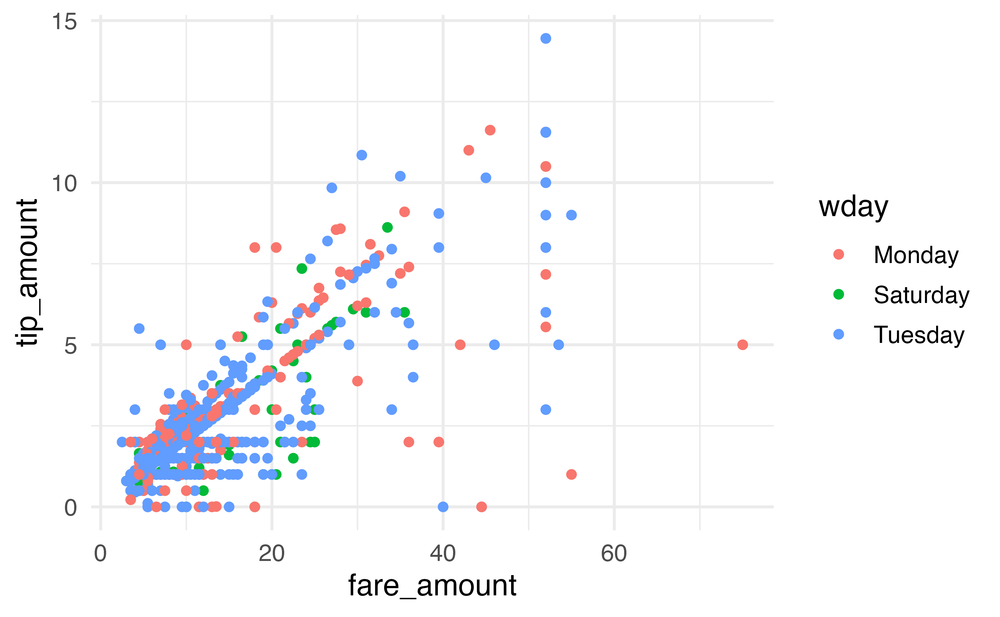

library(mdsr)
con_taxi <- DBI::dbConnect(
RMariaDB::MariaDB(),
dbname = "nyctaxi",
host = Sys.getenv("MDSR_HOST"),
user = Sys.getenv("MDSR_USER"),
password = Sys.getenv("MDSR_PWD")
)3 SQL clauses
Most of this chapter will focus on the SQL commands needed to run queries of the database. Much of the syntax is strikingly familiar to tidy verbs in R. However, this chapter starts with a few SQL specific tools used to learn about the tables in any particular database.
3.1 Looking at the tables in the database
Consider a database of taxi rides from the Yellow Cab company in NYC in March of 2014.
SHOW TABLES;| Tables_in_nyctaxi |
|---|
| yellow_old |
There is only one table in the nyctaxi database, called yellow_old.
DESCRIBE yellow_old;| Field | Type | Null | Key | Default | Extra |
|---|---|---|---|---|---|
| vendor_id | text | YES | |||
| pickup_datetime | text | YES | |||
| dropoff_datetime | text | YES | |||
| passenger_count | bigint(20) | YES | |||
| trip_distance | double | YES | |||
| pickup_longitude | double | YES | |||
| pickup_latitude | double | YES | |||
| rate_code | bigint(20) | YES | |||
| store_and_fwd_flag | text | YES | |||
| dropoff_longitude | double | YES | |||
| dropoff_latitude | double | YES | |||
| payment_type | text | YES | |||
| fare_amount | double | YES | |||
| surcharge | double | YES | |||
| mta_tax | double | YES | |||
| tip_amount | double | YES | |||
| tolls_amount | double | YES | |||
| total_amount | double | YES |
Similarly, the DESCRIBE command shows the 18 field names (variables) in the yellow_old table. Some of the variables are characters (text) and some are numeric (either double or bigint)
Most engagements with SQL are done through queries. Queries in SQL start with the SELECT keyword and consist of several clauses, which must be written in the following order:1
-
SELECTallows you to list the columns, or functions operating on columns, that you want to retrieve. This is an analogous operation to theselect()verb in dplyr, potentially combined withmutate()orsummarize(). -
FROMspecifies the table where the data are. -
JOINallows you to stitch together two or more tables using a key. This is analogous to theinner_join()andleft_join()commands in dplyr. More details ofJOINare given in Chapter 4. -
WHEREallows you to filter the records according to some criteria and is an analogous operation to thefilter()verb in dplyr. Note, even though theWHEREclause is written afterSELECTandJOIN, it is actually evaluated before theSELECTorJOINclauses (which is whyWHEREonly works on the original data, not the results set). -
GROUP BYallows you to aggregate the records according to some shared value and is an analogous operation to thegroup_by()verb in dplyr. -
HAVINGis like aWHEREclause that operates on the result set—not the records themselves and is analogous to applying a secondfilter()command in dplyr, after the rows have already been aggregated. -
ORDER BYis exactly what it sounds like—it specifies a condition for ordering the rows of the result set and is analogous to thearrange()verb in dplyr. -
LIMITrestricts the number of rows in the output and is similar to the R commandshead()andslice().
3.2 SELECT … FROM
A SQL query starts with a SELECT command and has a corresponding FROM to indicate the table being queried. Columns may be specified, or the * will indicate that every column in the table should be returned.
The shortest SQL query is the following SELECT command. Do not run this command!!! The yellow_old table has 15 million rows, and we do not want to look at them simultaneously.
DO NOT RUN: SELECT * FROM yellow_old;Instead, to look at the top of the table, SELECT the first few rows. The LIMIT command specifies which rows to select: the first number is the number of rows to skip (0 rows skipped), the second number is the number of rows to print up to (up to row 14).
SELECT * FROM yellow_old LIMIT 0, 14;| vendor_id | pickup_datetime | dropoff_datetime | passenger_count | trip_distance | pickup_longitude | pickup_latitude | rate_code | store_and_fwd_flag | dropoff_longitude | dropoff_latitude | payment_type | fare_amount | surcharge | mta_tax | tip_amount | tolls_amount | total_amount |
|---|---|---|---|---|---|---|---|---|---|---|---|---|---|---|---|---|---|
| CMT | 2014-03-01 01:07:38 | 2014-03-01 01:16:26 | 1 | 2.0 | -74.0 | 40.7 | 1 | N | -73.9 | 40.7 | CRD | 9.0 | 0.5 | 0.5 | 2.0 | 0 | 12.0 |
| CMT | 2014-03-01 01:08:03 | 2014-03-01 01:12:51 | 2 | 1.2 | -74.0 | 40.7 | 1 | N | -74.0 | 40.7 | CRD | 6.0 | 0.5 | 0.5 | 1.0 | 0 | 8.0 |
| CMT | 2014-03-01 01:08:51 | 2014-03-01 01:13:18 | 3 | 0.5 | -73.9 | 40.7 | 1 | N | -74.0 | 40.7 | CRD | 5.0 | 0.5 | 0.5 | 1.2 | 0 | 7.2 |
| CMT | 2014-03-01 01:09:20 | 2014-03-01 01:24:18 | 3 | 3.5 | -74.0 | 40.7 | 1 | N | -74.0 | 40.8 | CRD | 14.0 | 0.5 | 0.5 | 3.0 | 0 | 18.0 |
| CMT | 2014-03-01 01:09:46 | 2014-03-01 01:22:34 | 1 | 1.8 | -74.0 | 40.7 | 1 | N | -74.0 | 40.7 | CRD | 10.5 | 0.5 | 0.5 | 1.0 | 0 | 12.5 |
| CMT | 2014-03-01 01:12:41 | 2014-03-01 01:15:38 | 1 | 0.5 | -74.0 | 40.7 | 1 | N | -74.0 | 40.7 | CRD | 4.0 | 0.5 | 0.5 | 0.5 | 0 | 5.5 |
| CMT | 2014-03-01 01:12:11 | 2014-03-01 01:27:38 | 2 | 3.7 | -74.0 | 40.8 | 1 | N | -74.0 | 40.7 | CRD | 14.5 | 0.5 | 0.5 | 3.1 | 0 | 18.6 |
| CMT | 2014-03-01 01:13:55 | 2014-03-01 01:34:54 | 1 | 5.4 | -74.0 | 40.8 | 1 | N | -74.0 | 40.7 | CRD | 20.0 | 0.5 | 0.5 | 3.0 | 0 | 24.0 |
| CMT | 2014-03-01 01:14:06 | 2014-03-01 01:28:25 | 1 | 3.5 | -74.0 | 40.7 | 1 | N | -74.0 | 40.8 | CRD | 13.5 | 0.5 | 0.5 | 2.9 | 0 | 17.4 |
| CMT | 2014-03-01 01:13:10 | 2014-03-01 01:38:54 | 3 | 5.9 | -74.0 | 40.8 | 1 | N | -74.0 | 40.7 | CRD | 21.5 | 0.5 | 0.5 | 2.0 | 0 | 24.5 |
| CMT | 2014-03-01 01:14:13 | 2014-03-01 01:25:49 | 1 | 1.9 | -74.0 | 40.8 | 1 | N | -74.0 | 40.8 | CRD | 10.0 | 0.5 | 0.5 | 2.2 | 0 | 13.2 |
| CMT | 2014-03-01 01:15:22 | 2014-03-01 01:30:04 | 3 | 3.2 | -74.0 | 40.7 | 1 | N | -74.0 | 40.7 | CRD | 13.0 | 0.5 | 0.5 | 2.8 | 0 | 16.8 |
| CMT | 2014-03-01 01:16:28 | 2014-03-01 01:28:05 | 1 | 2.8 | -74.0 | 40.7 | 1 | N | -74.0 | 40.7 | CRD | 11.0 | 0.5 | 0.5 | 1.5 | 0 | 13.5 |
Speaking of which, how many rows are there in the yellow_old table? That is, how many taxi rides are recorded? Now SELECT is used with a summary function, COUNT(). Instead of using a separate summary function (like mutate() or summarize()), all the work is done inside the SELECT call.
SELECT COUNT(*) FROM yellow_old;| COUNT(*) |
|---|
| 15428128 |
Yikes, more than 15 million taxi rides!!!!
You might have noticed that the yellow_old table has two different datetime variables (one for pickup, the other for drop-off). We can use the information to assess the length of each ride (in time, not distance). However, the variables are stored in SQL as character strings instead of in a DateTime format (even though they look like they are stored in a DateTime format!), see Table 3.2. Fortunately for us, SQL has functionality to convert a text Type into DateTime type (POSIXct is a special type of DateTime formatting).
SELECT
pickup_datetime, dropoff_datetime,
STR_TO_DATE(pickup_datetime, "%Y-%m-%d %T") AS pickup,
STR_TO_DATE(dropoff_datetime, "%Y-%m-%d %T") AS dropoff
FROM yellow_old
LIMIT 0, 10;| pickup_datetime | dropoff_datetime | pickup | dropoff |
|---|---|---|---|
| 2014-03-01 01:07:38 | 2014-03-01 01:16:26 | 2014-03-01 01:07:38 | 2014-03-01 01:16:26 |
| 2014-03-01 01:08:03 | 2014-03-01 01:12:51 | 2014-03-01 01:08:03 | 2014-03-01 01:12:51 |
| 2014-03-01 01:08:51 | 2014-03-01 01:13:18 | 2014-03-01 01:08:51 | 2014-03-01 01:13:18 |
| 2014-03-01 01:09:20 | 2014-03-01 01:24:18 | 2014-03-01 01:09:20 | 2014-03-01 01:24:18 |
| 2014-03-01 01:09:46 | 2014-03-01 01:22:34 | 2014-03-01 01:09:46 | 2014-03-01 01:22:34 |
| 2014-03-01 01:12:41 | 2014-03-01 01:15:38 | 2014-03-01 01:12:41 | 2014-03-01 01:15:38 |
| 2014-03-01 01:12:11 | 2014-03-01 01:27:38 | 2014-03-01 01:12:11 | 2014-03-01 01:27:38 |
| 2014-03-01 01:13:55 | 2014-03-01 01:34:54 | 2014-03-01 01:13:55 | 2014-03-01 01:34:54 |
| 2014-03-01 01:14:06 | 2014-03-01 01:28:25 | 2014-03-01 01:14:06 | 2014-03-01 01:28:25 |
Now that the variables are no longer strings, we can subtract them to figure out the number of minutes for each taxi ride. Unfortunately, the following code won’t run because neither of the variables pickup or dropoff are in the table yellow_old.
SELECT
pickup_datetime, dropoff_datetime,
STR_TO_DATE(pickup_datetime, "%Y-%m-%d %T") AS pickup,
STR_TO_DATE(dropoff_datetime, "%Y-%m-%d %T") AS dropoff.
TIMEDIFF(pickup, dropoff) AS length_time
FROM yellow_old
LIMIT 0, 10;Instead, we need two layers of SELECT commands so that the first SELECT (i.e., inside) layer creates the new variables, and the second SELECT (i.e., outside) layer subtracts the two times.
SELECT
pickup,
dropoff,
TIMEDIFF(pickup, dropoff) AS length_time
FROM (
SELECT
STR_TO_DATE(pickup_datetime, "%Y-%m-%d %T") AS pickup,
STR_TO_DATE(dropoff_datetime, "%Y-%m-%d %T") AS dropoff
FROM yellow_old)
AS subquery_table
LIMIT 0, 20;| pickup | dropoff | length_time |
|---|---|---|
| 2014-03-01 01:07:38 | 2014-03-01 01:16:26 | 00:08:48 |
| 2014-03-01 01:08:03 | 2014-03-01 01:12:51 | 00:04:48 |
| 2014-03-01 01:08:51 | 2014-03-01 01:13:18 | 00:04:27 |
| 2014-03-01 01:09:20 | 2014-03-01 01:24:18 | 00:14:58 |
| 2014-03-01 01:09:46 | 2014-03-01 01:22:34 | 00:12:48 |
| 2014-03-01 01:12:41 | 2014-03-01 01:15:38 | 00:02:57 |
| 2014-03-01 01:12:11 | 2014-03-01 01:27:38 | 00:15:27 |
| 2014-03-01 01:13:55 | 2014-03-01 01:34:54 | 00:20:59 |
| 2014-03-01 01:14:06 | 2014-03-01 01:28:25 | 00:14:19 |
| 2014-03-01 01:13:10 | 2014-03-01 01:38:54 | 00:25:44 |
| 2014-03-01 01:14:13 | 2014-03-01 01:25:49 | 00:11:36 |
| 2014-03-01 01:15:22 | 2014-03-01 01:30:04 | 00:14:42 |
| 2014-03-01 01:16:28 | 2014-03-01 01:28:05 | 00:11:37 |
| 2014-03-01 01:25:34 | 2014-03-01 02:01:03 | 00:35:29 |
| 2014-03-01 01:26:39 | 2014-03-01 01:30:03 | 00:03:24 |
| 2014-03-01 01:27:16 | 2014-03-01 01:46:59 | 00:19:43 |
| 2014-03-01 01:28:39 | 2014-03-01 01:30:53 | 00:02:14 |
| 2014-03-01 01:29:40 | 2014-03-01 01:35:01 | 00:05:21 |
| 2014-03-01 01:28:51 | 2014-03-01 01:43:06 | 00:14:15 |
Alternatively, the STR_TO_DATE() function can be applied inside the TIMEDIFF() function so that the full (now only) SELECT command is being used only on variables that are in the original table.
SELECT
pickup_datetime,
dropoff_datetime,
TIMEDIFF(STR_TO_DATE(pickup_datetime, "%Y-%m-%d %T"),
STR_TO_DATE(dropoff_datetime, "%Y-%m-%d %T")) AS length_time
FROM yellow_old
LIMIT 0, 20;| pickup_datetime | dropoff_datetime | length_time |
|---|---|---|
| 2014-03-01 01:07:38 | 2014-03-01 01:16:26 | 00:08:48 |
| 2014-03-01 01:08:03 | 2014-03-01 01:12:51 | 00:04:48 |
| 2014-03-01 01:08:51 | 2014-03-01 01:13:18 | 00:04:27 |
| 2014-03-01 01:09:20 | 2014-03-01 01:24:18 | 00:14:58 |
| 2014-03-01 01:09:46 | 2014-03-01 01:22:34 | 00:12:48 |
| 2014-03-01 01:12:41 | 2014-03-01 01:15:38 | 00:02:57 |
| 2014-03-01 01:12:11 | 2014-03-01 01:27:38 | 00:15:27 |
| 2014-03-01 01:13:55 | 2014-03-01 01:34:54 | 00:20:59 |
| 2014-03-01 01:14:06 | 2014-03-01 01:28:25 | 00:14:19 |
| 2014-03-01 01:13:10 | 2014-03-01 01:38:54 | 00:25:44 |
| 2014-03-01 01:14:13 | 2014-03-01 01:25:49 | 00:11:36 |
| 2014-03-01 01:15:22 | 2014-03-01 01:30:04 | 00:14:42 |
| 2014-03-01 01:16:28 | 2014-03-01 01:28:05 | 00:11:37 |
| 2014-03-01 01:25:34 | 2014-03-01 02:01:03 | 00:35:29 |
| 2014-03-01 01:26:39 | 2014-03-01 01:30:03 | 00:03:24 |
| 2014-03-01 01:27:16 | 2014-03-01 01:46:59 | 00:19:43 |
| 2014-03-01 01:28:39 | 2014-03-01 01:30:53 | 00:02:14 |
| 2014-03-01 01:29:40 | 2014-03-01 01:35:01 | 00:05:21 |
| 2014-03-01 01:28:51 | 2014-03-01 01:43:06 | 00:14:15 |
Keep in mind that there is a distinction between clauses that operate on the variables of the original table versus those that operate on the variables of the results set. The variables pickup_datetime and dropoff_datetime are columns in the original table - they are written to disk on the SQL server. The variables pickup, dropoff, and length_time exist only in the results set, which is passed from the server (SQL server) to the client (e.g., RStudio or DBeaver) and is not written to disk.
3.3 WHERE
The WHERE clause is analogous to the filter() function in dplyr. However, keep in mind that there are two SQL commands that resemble the dplyr filter() function. WHERE operates on the original data in the table and HAVING operates on the result set. See below for examples using HAVING.
What was the fare for those taxi rides where the tip_amount was more than $10 and the person used cash? (Note that in SQL the equality logical is = and in R the equality logical is ==.)
SELECT payment_type, fare_amount, tip_amount, total_amount
FROM yellow_old
WHERE tip_amount > 10
AND payment_type = "CSH"
LIMIT 0, 10;| payment_type | fare_amount | tip_amount | total_amount |
|---|---|---|---|
| CSH | 65.5 | 15.3 | 91.8 |
| CSH | 52.0 | 11.6 | 69.4 |
| CSH | 52.0 | 11.6 | 69.4 |
| CSH | 55.0 | 16.2 | 81.2 |
| CSH | 71.5 | 20.0 | 103.5 |
| CSH | 70.0 | 16.2 | 97.1 |
| CSH | 95.0 | 21.9 | 131.2 |
| CSH | 62.5 | 15.5 | 93.0 |
| CSH | 66.0 | 15.0 | 90.0 |
| CSH | 65.0 | 13.2 | 79.2 |
BETWEEN can be used to specify a range of values for a numeric value.
SELECT payment_type, fare_amount, tip_amount, total_amount
FROM yellow_old
WHERE tip_amount BETWEEN 10 and 12
AND payment_type = "CSH"
LIMIT 0, 10;| payment_type | fare_amount | tip_amount | total_amount |
|---|---|---|---|
| CSH | 52.0 | 11.6 | 69.4 |
| CSH | 52.0 | 11.6 | 69.4 |
| CSH | 88.0 | 10.0 | 107.0 |
| CSH | 72.0 | 10.0 | 94.0 |
| CSH | 64.5 | 10.0 | 85.5 |
| CSH | 66.0 | 12.0 | 93.0 |
| CSH | 52.0 | 11.6 | 69.4 |
| CSH | 69.0 | 10.0 | 88.0 |
| CSH | 90.0 | 10.0 | 100.0 |
| CSH | 52.0 | 11.6 | 69.4 |
IN is similar to the dplyr %in% function which specifies distinct values for the variable.
SELECT payment_type, fare_amount, tip_amount, total_amount
FROM yellow_old
WHERE tip_amount IN (10, 12)
AND payment_type = "CSH"
LIMIT 0, 10;| payment_type | fare_amount | tip_amount | total_amount |
|---|---|---|---|
| CSH | 88.0 | 10 | 107.0 |
| CSH | 72.0 | 10 | 94.0 |
| CSH | 64.5 | 10 | 85.5 |
| CSH | 66.0 | 12 | 93.0 |
| CSH | 69.0 | 10 | 88.0 |
| CSH | 90.0 | 10 | 100.0 |
| CSH | 74.5 | 10 | 90.3 |
| CSH | 89.0 | 10 | 118.1 |
| CSH | 52.0 | 10 | 67.8 |
| CSH | 66.0 | 12 | 90.0 |
The WHERE clause can be established by a number of logical commands combined using either AND or OR. Usually it is important to use parentheses with OR logicals to make sure the desired query is return. Consider the difference between the following queries. In SQL (as in many programming languages), AND takes precedent over OR in the order of operations, when there are no parentheses. (I was taught to remember order of operations using “please excuse my dear aunt Sally.”) The order of operations on the first query groups the second two conditions into one because AND take precedence over OR (as if the query was tip_amount BETWEEN 10 and 12 OR (total_amount BETWEEN 100 and 112 AND payment_type = "CSH")).
SELECT payment_type, fare_amount, tip_amount, total_amount
FROM yellow_old
WHERE tip_amount BETWEEN 10 and 12 OR
total_amount BETWEEN 100 and 112 AND
payment_type = "CSH"
LIMIT 0, 10;| payment_type | fare_amount | tip_amount | total_amount |
|---|---|---|---|
| CRD | 52.0 | 10.5 | 63.0 |
| CRD | 35.0 | 10.2 | 51.0 |
| CRD | 52.0 | 11.6 | 69.4 |
| CRD | 30.5 | 10.8 | 47.2 |
| CRD | 52.0 | 10.5 | 63.0 |
| CRD | 52.0 | 10.5 | 63.0 |
| CRD | 52.0 | 11.6 | 69.4 |
| CRD | 52.0 | 11.6 | 69.4 |
| CRD | 52.0 | 11.6 | 69.4 |
| CRD | 52.0 | 11.6 | 69.4 |
SELECT payment_type, fare_amount, tip_amount, total_amount
FROM yellow_old
WHERE (tip_amount BETWEEN 10 and 12 OR
total_amount BETWEEN 100 and 112 ) AND
payment_type = "CSH"
LIMIT 0, 10;| payment_type | fare_amount | tip_amount | total_amount |
|---|---|---|---|
| CSH | 107.0 | 0.0 | 108.0 |
| CSH | 92.5 | 0.0 | 103.5 |
| CSH | 99.5 | 0.0 | 105.3 |
| CSH | 92.0 | 0.0 | 106.3 |
| CSH | 103.0 | 0.0 | 109.3 |
| CSH | 107.0 | 0.0 | 107.0 |
| CSH | 104.5 | 0.0 | 105.5 |
| CSH | 112.0 | 0.0 | 112.0 |
| CSH | 52.0 | 11.6 | 69.4 |
| CSH | 52.0 | 11.6 | 69.4 |
3.4 GROUP BY
The GROUP BY clause will direct SQL to carry out the query separately for each category in the grouped variable. Using GROUP BY is particularly important when aggregating multiple rows into a single number. Some aggregate functions include COUNT(), SUM(), MAX(), MIN(), and AVG().
SELECT COUNT(*) AS num_transactions,
sum(1) as num_transactions_also,
payment_type
FROM yellow_old
WHERE tip_amount BETWEEN 10 and 20
GROUP BY payment_type;| num_transactions | num_transactions_also | payment_type |
|---|---|---|
| 213872 | 213872 | CRD |
| 78 | 78 | CSH |
| 3 | 3 | DIS |
| 7 | 7 | NOC |
| 609 | 609 | UNK |
For those people who tipped between $10 and $20, what was the lowest and highest fare for each of the types of payments?
SELECT COUNT(*) AS num_transactions,
MIN(fare_amount) AS lowest_fare,
MAX(fare_amount) AS highest_fare,
payment_type
FROM yellow_old
WHERE tip_amount BETWEEN 10 and 20
GROUP BY payment_type;| num_transactions | lowest_fare | highest_fare | payment_type |
|---|---|---|---|
| 213872 | 0.0 | 370.0 | CRD |
| 78 | 52.0 | 102.0 | CSH |
| 3 | 52.0 | 79.5 | DIS |
| 7 | 58.0 | 94.0 | NOC |
| 609 | 4.5 | 147.0 | UNK |
GROUP BY will work applied to multiple columns. Let’s tabulate the same results, now broken down by payment_type and day of week. Except that we don’t have a day of week variable! We need to convert the pickup_datetime variable to a DateTime object and then pull out the day of the week, using DAYNAME. (Note: DAYOFWEEK will give you the day of the week as an integer. Use your internet sleuthing skills if you are looking for functions that might help your desired query.)
SELECT COUNT(*) AS num_transactions,
MIN(fare_amount) AS lowest_fare,
MAX(fare_amount) AS highest_fare,
payment_type,
DAYNAME(STR_TO_DATE(pickup_datetime, "%Y-%m-%d %T")) AS wday
FROM yellow_old
GROUP BY payment_type, wday;| num_transactions | lowest_fare | highest_fare | payment_type | wday |
|---|---|---|---|---|
| 1 | ||||
| 1247397 | 2.5 | 477 | CRD | Friday |
| 1278362 | -612.4 | 500 | CRD | Monday |
| 1533796 | 2.5 | 420 | CRD | Saturday |
| 1324394 | 2.5 | 480 | CRD | Sunday |
| 1258098 | 2.5 | 500 | CRD | Thursday |
| 1121081 | 2.5 | 500 | CRD | Tuesday |
| 1192892 | 2.5 | 400 | CRD | Wednesday |
| 860920 | 2.5 | 444 | CSH | Friday |
| 918653 | 0.0 | 873 | CSH | Monday |
| 1207305 | 2.5 | 350 | CSH | Saturday |
| 1020438 | 2.5 | 425 | CSH | Sunday |
| 813813 | 2.5 | 475 | CSH | Thursday |
| 751769 | 2.5 | 300 | CSH | Tuesday |
| 775823 | 2.5 | 400 | CSH | Wednesday |
| 1592 | 2.5 | 255 | DIS | Friday |
| 1537 | 0.0 | 102 | DIS | Monday |
| 2236 | 2.5 | 200 | DIS | Saturday |
| 1821 | 2.5 | 200 | DIS | Sunday |
| 1357 | 2.5 | 165 | DIS | Thursday |
| 1222 | 2.5 | 475 | DIS | Tuesday |
| 1295 | 2.5 | 373 | DIS | Wednesday |
| 5252 | 2.5 | 229 | NOC | Friday |
| 5440 | 0.0 | 950 | NOC | Monday |
| 7217 | 2.5 | 295 | NOC | Saturday |
| 6383 | 2.5 | 300 | NOC | Sunday |
| 4840 | 2.5 | 223 | NOC | Thursday |
| 4123 | 2.5 | 384 | NOC | Tuesday |
| 4482 | 2.5 | 200 | NOC | Wednesday |
| 10131 | 2.5 | 130 | UNK | Friday |
| 11263 | 2.5 | 95 | UNK | Monday |
| 12813 | 2.5 | 147 | UNK | Saturday |
| 11003 | 2.5 | 114 | UNK | Sunday |
| 10197 | 2.5 | 200 | UNK | Thursday |
| 9643 | 2.5 | 138 | UNK | Tuesday |
| 9539 | 2.5 | 133 | UNK | Wednesday |
3.5 ORDER BY
The ORDER BY command can be used with or without the GROUP BY and aggregation commands. It allows us to look at interesting aspects of the data by sorting the data.
SELECT COUNT(*) AS num_transactions,
MIN(fare_amount) AS lowest_fare,
MAX(fare_amount) AS highest_fare,
payment_type,
DAYNAME(STR_TO_DATE(pickup_datetime, "%Y-%m-%d %T")) AS wday
FROM yellow_old
GROUP BY payment_type, wday
ORDER BY lowest_fare ASC;| num_transactions | lowest_fare | highest_fare | payment_type | wday |
|---|---|---|---|---|
| 1 | ||||
| 1278362 | -612.4 | 500 | CRD | Monday |
| 918653 | 0.0 | 873 | CSH | Monday |
| 5440 | 0.0 | 950 | NOC | Monday |
| 1537 | 0.0 | 102 | DIS | Monday |
| 1533796 | 2.5 | 420 | CRD | Saturday |
| 1121081 | 2.5 | 500 | CRD | Tuesday |
| 1192892 | 2.5 | 400 | CRD | Wednesday |
| 1258098 | 2.5 | 500 | CRD | Thursday |
| 1247397 | 2.5 | 477 | CRD | Friday |
| 1324394 | 2.5 | 480 | CRD | Sunday |
| 813813 | 2.5 | 475 | CSH | Thursday |
| 1207305 | 2.5 | 350 | CSH | Saturday |
| 751769 | 2.5 | 300 | CSH | Tuesday |
| 775823 | 2.5 | 400 | CSH | Wednesday |
| 1020438 | 2.5 | 425 | CSH | Sunday |
| 7217 | 2.5 | 295 | NOC | Saturday |
| 860920 | 2.5 | 444 | CSH | Friday |
| 1295 | 2.5 | 373 | DIS | Wednesday |
| 1821 | 2.5 | 200 | DIS | Sunday |
| 4123 | 2.5 | 384 | NOC | Tuesday |
| 1222 | 2.5 | 475 | DIS | Tuesday |
| 5252 | 2.5 | 229 | NOC | Friday |
| 6383 | 2.5 | 300 | NOC | Sunday |
| 4840 | 2.5 | 223 | NOC | Thursday |
| 4482 | 2.5 | 200 | NOC | Wednesday |
| 1357 | 2.5 | 165 | DIS | Thursday |
| 1592 | 2.5 | 255 | DIS | Friday |
| 2236 | 2.5 | 200 | DIS | Saturday |
| 11003 | 2.5 | 114 | UNK | Sunday |
| 12813 | 2.5 | 147 | UNK | Saturday |
| 11263 | 2.5 | 95 | UNK | Monday |
| 9643 | 2.5 | 138 | UNK | Tuesday |
| 9539 | 2.5 | 133 | UNK | Wednesday |
| 10197 | 2.5 | 200 | UNK | Thursday |
| 10131 | 2.5 | 130 | UNK | Friday |
WHAT?!?!! How in the world was one of the fares -$612.40? It doesn’t make any sense that a fare would be negative. Some additional inquiry into the observation corresponding to a fare of -$612.40 is absolutely warranted. If the observation is found to be a typo, it would need to be removed from the data set. If the observation is somehow legitimate, it would need to be included in the analysis, with the information provided about its legitimacy.
SELECT COUNT(*) AS num_transactions,
MIN(fare_amount) AS lowest_fare,
MAX(fare_amount) AS highest_fare,
payment_type,
DAYNAME(STR_TO_DATE(pickup_datetime, "%Y-%m-%d %T")) AS wday
FROM yellow_old
GROUP BY payment_type, wday
ORDER BY highest_fare DESC;| num_transactions | lowest_fare | highest_fare | payment_type | wday |
|---|---|---|---|---|
| 5440 | 0.0 | 950 | NOC | Monday |
| 918653 | 0.0 | 873 | CSH | Monday |
| 1278362 | -612.4 | 500 | CRD | Monday |
| 1121081 | 2.5 | 500 | CRD | Tuesday |
| 1258098 | 2.5 | 500 | CRD | Thursday |
| 1324394 | 2.5 | 480 | CRD | Sunday |
| 1247397 | 2.5 | 477 | CRD | Friday |
| 1222 | 2.5 | 475 | DIS | Tuesday |
| 813813 | 2.5 | 475 | CSH | Thursday |
| 860920 | 2.5 | 444 | CSH | Friday |
| 1020438 | 2.5 | 425 | CSH | Sunday |
| 1533796 | 2.5 | 420 | CRD | Saturday |
| 1192892 | 2.5 | 400 | CRD | Wednesday |
| 775823 | 2.5 | 400 | CSH | Wednesday |
| 4123 | 2.5 | 384 | NOC | Tuesday |
| 1295 | 2.5 | 373 | DIS | Wednesday |
| 1207305 | 2.5 | 350 | CSH | Saturday |
| 751769 | 2.5 | 300 | CSH | Tuesday |
| 6383 | 2.5 | 300 | NOC | Sunday |
| 7217 | 2.5 | 295 | NOC | Saturday |
| 1592 | 2.5 | 255 | DIS | Friday |
| 5252 | 2.5 | 229 | NOC | Friday |
| 4840 | 2.5 | 223 | NOC | Thursday |
| 4482 | 2.5 | 200 | NOC | Wednesday |
| 1821 | 2.5 | 200 | DIS | Sunday |
| 2236 | 2.5 | 200 | DIS | Saturday |
| 10197 | 2.5 | 200 | UNK | Thursday |
| 1357 | 2.5 | 165 | DIS | Thursday |
| 12813 | 2.5 | 147 | UNK | Saturday |
| 9643 | 2.5 | 138 | UNK | Tuesday |
| 9539 | 2.5 | 133 | UNK | Wednesday |
| 10131 | 2.5 | 130 | UNK | Friday |
| 11003 | 2.5 | 114 | UNK | Sunday |
| 1537 | 0.0 | 102 | DIS | Monday |
| 11263 | 2.5 | 95 | UNK | Monday |
| 1 |
$950 is a lot to pay for a cab ride! But in NYC, I’d believe it.
SELECT COUNT(*) AS num_transactions,
MIN(fare_amount) AS lowest_fare,
MAX(fare_amount) AS highest_fare,
payment_type,
DAYNAME(STR_TO_DATE(pickup_datetime, "%Y-%m-%d %T")) AS wday
FROM yellow_old
GROUP BY payment_type, wday
ORDER BY wday, payment_type;| num_transactions | lowest_fare | highest_fare | payment_type | wday |
|---|---|---|---|---|
| 1 | ||||
| 1247397 | 2.5 | 477 | CRD | Friday |
| 860920 | 2.5 | 444 | CSH | Friday |
| 1592 | 2.5 | 255 | DIS | Friday |
| 5252 | 2.5 | 229 | NOC | Friday |
| 10131 | 2.5 | 130 | UNK | Friday |
| 1278362 | -612.4 | 500 | CRD | Monday |
| 918653 | 0.0 | 873 | CSH | Monday |
| 1537 | 0.0 | 102 | DIS | Monday |
| 5440 | 0.0 | 950 | NOC | Monday |
| 11263 | 2.5 | 95 | UNK | Monday |
| 1533796 | 2.5 | 420 | CRD | Saturday |
| 1207305 | 2.5 | 350 | CSH | Saturday |
| 2236 | 2.5 | 200 | DIS | Saturday |
| 7217 | 2.5 | 295 | NOC | Saturday |
| 12813 | 2.5 | 147 | UNK | Saturday |
| 1324394 | 2.5 | 480 | CRD | Sunday |
| 1020438 | 2.5 | 425 | CSH | Sunday |
| 1821 | 2.5 | 200 | DIS | Sunday |
| 6383 | 2.5 | 300 | NOC | Sunday |
| 11003 | 2.5 | 114 | UNK | Sunday |
| 1258098 | 2.5 | 500 | CRD | Thursday |
| 813813 | 2.5 | 475 | CSH | Thursday |
| 1357 | 2.5 | 165 | DIS | Thursday |
| 4840 | 2.5 | 223 | NOC | Thursday |
| 10197 | 2.5 | 200 | UNK | Thursday |
| 1121081 | 2.5 | 500 | CRD | Tuesday |
| 751769 | 2.5 | 300 | CSH | Tuesday |
| 1222 | 2.5 | 475 | DIS | Tuesday |
| 4123 | 2.5 | 384 | NOC | Tuesday |
| 9643 | 2.5 | 138 | UNK | Tuesday |
| 1192892 | 2.5 | 400 | CRD | Wednesday |
| 775823 | 2.5 | 400 | CSH | Wednesday |
| 1295 | 2.5 | 373 | DIS | Wednesday |
| 4482 | 2.5 | 200 | NOC | Wednesday |
| 9539 | 2.5 | 133 | UNK | Wednesday |
As above, we were able to GROUP BY and ORDER BY on the new variables we had created, wday.
3.6 HAVING
Recall that WHERE acts only on the original data. If we are interested in rides that took place on Friday, we need to use the derived variable wday instead of the raw variable pickup_datetime. Fortunately, HAVING works on the results set. Note that SQL uses '' for strings, not "". In SQL, "" is used to identify variables (not values of variables), like R’s ``.
SELECT COUNT(*) AS num_transactions,
MIN(fare_amount) AS lowest_fare,
MAX(fare_amount) AS highest_fare,
payment_type,
DAYNAME(STR_TO_DATE(pickup_datetime, "%Y-%m-%d %T")) AS wday
FROM yellow_old
GROUP BY payment_type, wday
HAVING wday = 'Friday';| num_transactions | lowest_fare | highest_fare | payment_type | wday |
|---|---|---|---|---|
| 1247397 | 2.5 | 477 | CRD | Friday |
| 860920 | 2.5 | 444 | CSH | Friday |
| 1592 | 2.5 | 255 | DIS | Friday |
| 5252 | 2.5 | 229 | NOC | Friday |
| 10131 | 2.5 | 130 | UNK | Friday |
While it worked out quite well for us that HAVING was able to filter the data based on the results set, the use of HAVING was quite onerous because the entire data set was considered before the filter was applied. That is, if the filter can be done on the original data using WHERE, the query will be much faster and more efficient.
Note: HAVING requires a GROUP BY clause. And the variable(s) used in HAVING must also be part of the GROUP BY clause.
3.7 LIMIT
As we’ve seen, LIMIT truncates the query to specified rows. The LIMIT command specifies which rows to select: the first number is the number of rows to skip (0 rows skipped), the second number is the number of rows to print up to (up to row 14). The query below shows the last 10 rows of the entire data set.
SELECT * FROM yellow_old LIMIT 15428118, 15428128;| vendor_id | pickup_datetime | dropoff_datetime | passenger_count | trip_distance | pickup_longitude | pickup_latitude | rate_code | store_and_fwd_flag | dropoff_longitude | dropoff_latitude | payment_type | fare_amount | surcharge | mta_tax | tip_amount | tolls_amount | total_amount |
|---|---|---|---|---|---|---|---|---|---|---|---|---|---|---|---|---|---|
| CMT | 2014-03-18 14:35:21 | 2014-03-18 14:52:01 | 1 | 2.7 | 0 | 0.0 | 1 | N | 0 | 0.0 | CRD | 13.0 | 0 | 0.5 | 2.50 | 0.00 | 16.0 |
| CMT | 2014-03-18 14:08:23 | 2014-03-18 14:19:29 | 2 | 1.3 | 0 | 0.0 | 1 | N | 0 | 0.0 | CRD | 9.0 | 0 | 0.5 | 1.90 | 0.00 | 11.4 |
| CMT | 2014-03-18 09:18:38 | 2014-03-18 09:19:41 | 1 | 0.2 | -74 | 40.8 | 1 | N | -74 | 40.8 | CRD | 3.0 | 0 | 0.5 | 1.00 | 0.00 | 4.5 |
| CMT | 2014-03-18 06:28:12 | 2014-03-18 06:49:49 | 1 | 9.9 | 0 | 0.0 | 1 | N | 0 | 0.0 | CRD | 30.0 | 0 | 0.5 | 7.16 | 5.33 | 43.0 |
| CMT | 2014-03-18 17:39:28 | 2014-03-18 17:53:01 | 1 | 4.9 | -74 | 40.8 | 1 | N | -74 | 40.7 | CRD | 16.5 | 1 | 0.5 | 3.00 | 0.00 | 21.0 |
| CMT | 2014-03-18 18:14:19 | 2014-03-18 18:27:22 | 1 | 0.3 | -74 | 40.7 | 1 | N | -74 | 40.7 | CRD | 3.5 | 1 | 0.5 | 6.00 | 0.00 | 11.0 |
| CMT | 2014-03-18 10:12:33 | 2014-03-18 10:28:09 | 1 | 3.3 | -74 | 40.8 | 1 | N | -74 | 40.8 | CRD | 13.5 | 0 | 0.5 | 4.20 | 0.00 | 18.2 |
| CMT | 2014-03-18 09:02:37 | 2014-03-18 09:16:29 | 1 | 6.2 | -74 | 40.8 | 1 | N | -74 | 40.7 | CRD | 19.5 | 0 | 0.5 | 1.00 | 0.00 | 21.0 |
| CMT | 2014-03-18 10:10:19 | 2014-03-18 10:19:25 | 1 | 1.7 | -74 | 40.8 | 1 | N | -74 | 40.8 | CRD | 8.5 | 0 | 0.5 | 1.80 | 0.00 | 10.8 |
| CMT | 2014-03-18 15:24:53 | 2014-03-18 15:42:42 | 1 | 1.7 | -74 | 40.8 | 1 | N | -74 | 40.7 | CRD | 12.5 | 0 | 0.5 | 2.60 | 0.00 | 15.6 |
3.8 Saving SQL queries as R objects
If you are working in R to run SQL commands, you may want to use the query output for further analysis or visualizations. In that case, use #|output.var: "name_of_variable" inside the {sql} chunk. The variable called name_of_variable will then be available to be used in the R environment.
```{sql}
#| connection: con_taxi
#| label: new-table
#| output.var: "new_table"
SELECT *, DAYNAME(STR_TO_DATE(pickup_datetime, "%Y-%m-%d %T")) AS wday
FROM yellow_old
LIMIT 0, 1000;
```| vendor_id | pickup_datetime | dropoff_datetime | passenger_count | trip_distance | pickup_longitude | pickup_latitude | rate_code | store_and_fwd_flag | dropoff_longitude | dropoff_latitude | payment_type | fare_amount | surcharge | mta_tax | tip_amount | tolls_amount | total_amount | wday |
|---|---|---|---|---|---|---|---|---|---|---|---|---|---|---|---|---|---|---|
| CMT | 2014-03-01 01:07:38 | 2014-03-01 01:16:26 | 1 | 2.0 | -74.0 | 40.7 | 1 | N | -73.9 | 40.7 | CRD | 9.0 | 0.5 | 0.5 | 2.00 | 0.00 | 12.00 | Saturday |
| CMT | 2014-03-01 01:08:03 | 2014-03-01 01:12:51 | 2 | 1.2 | -74.0 | 40.7 | 1 | N | -74.0 | 40.7 | CRD | 6.0 | 0.5 | 0.5 | 1.00 | 0.00 | 8.00 | Saturday |
| CMT | 2014-03-01 01:08:51 | 2014-03-01 01:13:18 | 3 | 0.5 | -73.9 | 40.7 | 1 | N | -74.0 | 40.7 | CRD | 5.0 | 0.5 | 0.5 | 1.20 | 0.00 | 7.20 | Saturday |
| CMT | 2014-03-01 01:09:20 | 2014-03-01 01:24:18 | 3 | 3.5 | -74.0 | 40.7 | 1 | N | -74.0 | 40.8 | CRD | 14.0 | 0.5 | 0.5 | 3.00 | 0.00 | 18.00 | Saturday |
| CMT | 2014-03-01 01:09:46 | 2014-03-01 01:22:34 | 1 | 1.8 | -74.0 | 40.7 | 1 | N | -74.0 | 40.7 | CRD | 10.5 | 0.5 | 0.5 | 1.00 | 0.00 | 12.50 | Saturday |
| CMT | 2014-03-01 01:12:41 | 2014-03-01 01:15:38 | 1 | 0.5 | -74.0 | 40.7 | 1 | N | -74.0 | 40.7 | CRD | 4.0 | 0.5 | 0.5 | 0.50 | 0.00 | 5.50 | Saturday |
| CMT | 2014-03-01 01:12:11 | 2014-03-01 01:27:38 | 2 | 3.7 | -74.0 | 40.8 | 1 | N | -74.0 | 40.7 | CRD | 14.5 | 0.5 | 0.5 | 3.10 | 0.00 | 18.60 | Saturday |
| CMT | 2014-03-01 01:13:55 | 2014-03-01 01:34:54 | 1 | 5.4 | -74.0 | 40.8 | 1 | N | -74.0 | 40.7 | CRD | 20.0 | 0.5 | 0.5 | 3.00 | 0.00 | 24.00 | Saturday |
| CMT | 2014-03-01 01:14:06 | 2014-03-01 01:28:25 | 1 | 3.5 | -74.0 | 40.7 | 1 | N | -74.0 | 40.8 | CRD | 13.5 | 0.5 | 0.5 | 2.90 | 0.00 | 17.40 | Saturday |
| CMT | 2014-03-01 01:13:10 | 2014-03-01 01:38:54 | 3 | 5.9 | -74.0 | 40.8 | 1 | N | -74.0 | 40.7 | CRD | 21.5 | 0.5 | 0.5 | 2.00 | 0.00 | 24.50 | Saturday |
| CMT | 2014-03-01 01:14:13 | 2014-03-01 01:25:49 | 1 | 1.9 | -74.0 | 40.8 | 1 | N | -74.0 | 40.8 | CRD | 10.0 | 0.5 | 0.5 | 2.20 | 0.00 | 13.20 | Saturday |
| CMT | 2014-03-01 01:15:22 | 2014-03-01 01:30:04 | 3 | 3.2 | -74.0 | 40.7 | 1 | N | -74.0 | 40.7 | CRD | 13.0 | 0.5 | 0.5 | 2.80 | 0.00 | 16.80 | Saturday |
| CMT | 2014-03-01 01:16:28 | 2014-03-01 01:28:05 | 1 | 2.8 | -74.0 | 40.7 | 1 | N | -74.0 | 40.7 | CRD | 11.0 | 0.5 | 0.5 | 1.50 | 0.00 | 13.50 | Saturday |
| CMT | 2014-03-01 01:25:34 | 2014-03-01 02:01:03 | 1 | 7.6 | -73.9 | 40.7 | 1 | N | -73.9 | 40.7 | CRD | 29.5 | 0.5 | 0.5 | 6.10 | 0.00 | 36.60 | Saturday |
| CMT | 2014-03-01 01:26:39 | 2014-03-01 01:30:03 | 1 | 0.9 | -74.0 | 40.7 | 1 | N | -74.0 | 40.8 | CRD | 5.0 | 0.5 | 0.5 | 1.00 | 0.00 | 7.00 | Saturday |
| CMT | 2014-03-01 01:27:16 | 2014-03-01 01:46:59 | 1 | 11.1 | -74.0 | 40.8 | 1 | N | -73.9 | 40.9 | CRD | 31.0 | 0.5 | 0.5 | 6.00 | 2.44 | 40.44 | Saturday |
| CMT | 2014-03-01 01:28:39 | 2014-03-01 01:30:53 | 1 | 0.4 | -74.0 | 40.7 | 1 | N | -74.0 | 40.7 | CRD | 4.0 | 0.5 | 0.5 | 1.00 | 0.00 | 6.00 | Saturday |
| CMT | 2014-03-01 01:29:40 | 2014-03-01 01:35:01 | 2 | 0.7 | -74.0 | 40.7 | 1 | N | -74.0 | 40.7 | CRD | 5.5 | 0.5 | 0.5 | 1.30 | 0.00 | 7.80 | Saturday |
| CMT | 2014-03-01 01:28:51 | 2014-03-01 01:43:06 | 1 | 5.1 | -74.0 | 40.8 | 1 | N | -73.9 | 40.7 | CRD | 16.5 | 0.5 | 0.5 | 2.00 | 0.00 | 19.50 | Saturday |
| CMT | 2014-03-01 01:30:00 | 2014-03-01 02:12:12 | 1 | 8.0 | -74.0 | 40.7 | 1 | N | -74.0 | 40.8 | CRD | 33.5 | 0.5 | 0.5 | 8.62 | 0.00 | 43.12 | Saturday |
| CMT | 2014-03-01 09:10:00 | 2014-03-01 09:28:55 | 1 | 7.9 | -73.9 | 40.8 | 1 | N | -74.0 | 40.8 | CRD | 25.0 | 0.0 | 0.5 | 3.00 | 0.00 | 28.50 | Saturday |
| CMT | 2014-03-01 09:11:28 | 2014-03-01 09:18:46 | 1 | 1.6 | -74.0 | 40.8 | 1 | N | -74.0 | 40.8 | CRD | 8.0 | 0.0 | 0.5 | 1.00 | 0.00 | 9.50 | Saturday |
| CMT | 2014-03-01 09:13:07 | 2014-03-01 09:18:12 | 2 | 1.2 | -74.0 | 40.8 | 1 | N | -74.0 | 40.8 | CRD | 6.5 | 0.0 | 0.5 | 1.40 | 0.00 | 8.40 | Saturday |
| CMT | 2014-03-01 01:30:45 | 2014-03-01 01:34:24 | 1 | 0.8 | -74.0 | 40.7 | 1 | N | -74.0 | 40.7 | CRD | 5.0 | 0.5 | 0.5 | 1.20 | 0.00 | 7.20 | Saturday |
| CMT | 2014-03-01 09:14:31 | 2014-03-01 09:17:13 | 1 | 0.3 | -74.0 | 40.8 | 1 | N | -74.0 | 40.7 | CRD | 4.0 | 0.0 | 0.5 | 1.12 | 0.00 | 5.62 | Saturday |
| CMT | 2014-03-01 09:16:08 | 2014-03-01 09:33:46 | 1 | 3.5 | -74.0 | 40.7 | 1 | N | -74.0 | 40.8 | CRD | 14.0 | 0.0 | 0.5 | 2.90 | 0.00 | 17.40 | Saturday |
| CMT | 2014-03-01 01:00:01 | 2014-03-01 01:15:42 | 1 | 3.7 | -74.0 | 40.7 | 1 | N | -74.0 | 40.8 | CRD | 14.5 | 0.5 | 0.5 | 3.10 | 0.00 | 18.60 | Saturday |
| CMT | 2014-03-01 01:01:01 | 2014-03-01 01:37:37 | 1 | 4.0 | -74.0 | 40.7 | 1 | N | -74.0 | 40.7 | CRD | 24.0 | 0.5 | 0.5 | 4.00 | 0.00 | 29.00 | Saturday |
| CMT | 2014-03-01 01:00:27 | 2014-03-01 01:18:47 | 1 | 8.2 | -74.0 | 40.7 | 1 | N | -73.9 | 40.8 | CRD | 25.5 | 0.5 | 0.5 | 5.30 | 0.00 | 31.80 | Saturday |
| CMT | 2014-03-01 01:01:03 | 2014-03-01 01:06:59 | 2 | 1.7 | -74.0 | 40.8 | 1 | N | -74.0 | 40.8 | CRD | 7.5 | 0.5 | 0.5 | 1.70 | 0.00 | 10.20 | Saturday |
| CMT | 2014-03-01 01:01:40 | 2014-03-01 01:04:58 | 1 | 0.6 | -74.0 | 40.8 | 1 | N | -74.0 | 40.8 | CRD | 4.5 | 0.5 | 0.5 | 0.75 | 0.00 | 6.25 | Saturday |
| CMT | 2014-03-01 01:03:29 | 2014-03-01 01:09:26 | 1 | 1.1 | -74.0 | 40.8 | 1 | N | -74.0 | 40.8 | CRD | 6.0 | 0.5 | 0.5 | 1.40 | 0.00 | 8.40 | Saturday |
| CMT | 2014-03-01 01:03:33 | 2014-03-01 01:28:46 | 1 | 4.2 | -74.0 | 40.7 | 1 | N | -74.0 | 40.7 | CRD | 20.0 | 0.5 | 0.5 | 4.20 | 0.00 | 25.20 | Saturday |
| CMT | 2014-03-01 01:04:59 | 2014-03-01 01:20:54 | 1 | 4.7 | -74.0 | 40.7 | 1 | N | -74.0 | 40.8 | CRD | 16.0 | 0.5 | 0.5 | 3.40 | 0.00 | 20.40 | Saturday |
| CMT | 2014-03-01 01:04:08 | 2014-03-01 01:08:31 | 2 | 0.5 | -74.0 | 40.7 | 1 | N | -74.0 | 40.7 | CRD | 4.5 | 0.5 | 0.5 | 1.00 | 0.00 | 6.50 | Saturday |
| CMT | 2014-03-01 01:05:15 | 2014-03-01 01:21:06 | 2 | 3.8 | -74.0 | 40.7 | 1 | N | -74.0 | 40.7 | CRD | 15.0 | 0.5 | 0.5 | 1.91 | 0.00 | 17.91 | Saturday |
| CMT | 2014-03-01 01:07:19 | 2014-03-01 01:16:56 | 1 | 4.1 | -74.0 | 40.7 | 1 | N | -74.0 | 40.7 | CRD | 14.0 | 0.5 | 0.5 | 1.00 | 0.00 | 16.00 | Saturday |
| CMT | 2014-03-01 01:18:36 | 2014-03-01 01:23:38 | 1 | 1.3 | -74.0 | 40.7 | 1 | N | -74.0 | 40.8 | CRD | 6.0 | 0.5 | 0.5 | 1.75 | 0.00 | 8.75 | Saturday |
| CMT | 2014-03-01 01:18:36 | 2014-03-01 01:39:26 | 1 | 6.9 | -74.0 | 40.7 | 1 | N | -74.0 | 40.8 | CRD | 22.5 | 0.5 | 0.5 | 1.50 | 0.00 | 25.00 | Saturday |
| CMT | 2014-03-01 01:18:53 | 2014-03-01 01:27:15 | 1 | 2.2 | -74.0 | 40.7 | 1 | N | -74.0 | 40.7 | CRD | 9.5 | 0.5 | 0.5 | 2.00 | 0.00 | 12.50 | Saturday |
| CMT | 2014-03-01 01:19:55 | 2014-03-01 01:39:18 | 4 | 4.8 | -74.0 | 40.8 | 1 | N | -74.0 | 40.7 | CRD | 18.0 | 0.5 | 0.5 | 3.80 | 0.00 | 22.80 | Saturday |
| CMT | 2014-03-01 01:20:30 | 2014-03-01 01:42:32 | 1 | 7.6 | -74.0 | 40.8 | 1 | N | -74.0 | 40.7 | CRD | 25.0 | 0.5 | 0.5 | 2.00 | 5.33 | 33.33 | Saturday |
| CMT | 2014-03-01 01:21:30 | 2014-03-01 01:45:41 | 1 | 7.9 | -74.0 | 40.7 | 1 | N | -74.0 | 40.8 | CRD | 26.5 | 0.5 | 0.5 | 5.50 | 0.00 | 33.00 | Saturday |
| CMT | 2014-03-01 01:21:46 | 2014-03-01 01:36:18 | 2 | 5.8 | -74.0 | 40.7 | 1 | N | -74.0 | 40.8 | CRD | 18.5 | 0.5 | 0.5 | 3.90 | 0.00 | 23.40 | Saturday |
| CMT | 2014-03-01 01:24:28 | 2014-03-01 01:32:50 | 1 | 2.9 | -74.0 | 40.7 | 1 | N | -74.0 | 40.8 | CRD | 10.5 | 0.5 | 0.5 | 1.50 | 0.00 | 13.00 | Saturday |
| CMT | 2014-03-01 01:24:29 | 2014-03-01 01:36:26 | 1 | 2.2 | -74.0 | 40.8 | 1 | N | -74.0 | 40.7 | CRD | 10.5 | 0.5 | 0.5 | 2.85 | 0.00 | 14.35 | Saturday |
| CMT | 2014-03-01 01:25:12 | 2014-03-01 01:43:17 | 1 | 4.3 | -74.0 | 40.8 | 1 | N | -74.0 | 40.7 | CRD | 16.5 | 0.5 | 0.5 | 5.25 | 0.00 | 22.75 | Saturday |
| CMT | 2014-03-01 01:33:04 | 2014-03-01 01:59:04 | 1 | 4.9 | -74.0 | 40.7 | 1 | N | -74.0 | 40.8 | CRD | 20.5 | 0.5 | 0.5 | 1.00 | 0.00 | 22.50 | Saturday |
| CMT | 2014-03-01 01:33:33 | 2014-03-01 01:43:22 | 3 | 2.2 | -74.0 | 40.7 | 1 | N | -74.0 | 40.7 | CRD | 9.5 | 0.5 | 0.5 | 2.10 | 0.00 | 12.60 | Saturday |
| CMT | 2014-03-01 09:19:58 | 2014-03-01 09:25:35 | 1 | 1.8 | -74.0 | 40.7 | 1 | N | -74.0 | 40.8 | CRD | 7.5 | 0.0 | 0.5 | 1.60 | 0.00 | 9.60 | Saturday |
| CMT | 2014-03-01 09:19:36 | 2014-03-01 09:27:05 | 1 | 1.2 | -74.0 | 40.7 | 1 | N | -74.0 | 40.8 | CRD | 7.0 | 0.0 | 0.5 | 1.50 | 0.00 | 9.00 | Saturday |
| CMT | 2014-03-01 01:35:11 | 2014-03-01 02:12:34 | 2 | 5.9 | -74.0 | 40.7 | 1 | N | -73.9 | 40.7 | CRD | 27.0 | 0.5 | 0.5 | 5.60 | 0.00 | 33.60 | Saturday |
| CMT | 2014-03-01 12:02:58 | 2014-03-01 12:08:05 | 1 | 0.8 | -74.0 | 40.7 | 1 | N | -74.0 | 40.7 | CRD | 5.5 | 0.0 | 0.5 | 1.20 | 0.00 | 7.20 | Saturday |
| CMT | 2014-03-01 04:07:49 | 2014-03-01 04:27:46 | 1 | 6.5 | -74.0 | 40.8 | 1 | N | -73.9 | 40.8 | CRD | 21.0 | 0.5 | 0.5 | 5.50 | 0.00 | 27.50 | Saturday |
| CMT | 2014-03-01 04:08:58 | 2014-03-01 04:25:48 | 2 | 3.7 | -74.0 | 40.8 | 1 | N | -74.0 | 40.7 | CRD | 15.0 | 0.5 | 0.5 | 1.60 | 0.00 | 17.60 | Saturday |
| CMT | 2014-03-01 04:08:44 | 2014-03-01 04:17:58 | 1 | 2.2 | -74.0 | 40.7 | 1 | N | -74.0 | 40.7 | CRD | 9.0 | 0.5 | 0.5 | 2.00 | 0.00 | 12.00 | Saturday |
| CMT | 2014-03-01 12:03:11 | 2014-03-01 12:12:21 | 2 | 1.8 | -74.0 | 40.8 | 1 | N | -74.0 | 40.8 | CRD | 9.0 | 0.0 | 0.5 | 1.90 | 0.00 | 11.40 | Saturday |
| CMT | 2014-03-01 12:04:00 | 2014-03-01 12:17:07 | 1 | 3.0 | -74.0 | 40.7 | 1 | N | -74.0 | 40.7 | CRD | 12.0 | 0.0 | 0.5 | 2.50 | 0.00 | 15.00 | Saturday |
| CMT | 2014-03-01 12:04:22 | 2014-03-01 12:07:42 | 1 | 0.8 | -74.0 | 40.8 | 1 | N | -74.0 | 40.8 | CRD | 5.0 | 0.0 | 0.5 | 1.37 | 0.00 | 6.87 | Saturday |
| CMT | 2014-03-01 04:11:51 | 2014-03-01 04:16:01 | 1 | 0.6 | -74.0 | 40.7 | 1 | N | -74.0 | 40.7 | CRD | 4.5 | 0.5 | 0.5 | 1.10 | 0.00 | 6.60 | Saturday |
| CMT | 2014-03-01 12:03:18 | 2014-03-01 12:07:52 | 3 | 1.0 | -74.0 | 40.8 | 1 | N | -74.0 | 40.8 | CRD | 6.0 | 0.0 | 0.5 | 1.30 | 0.00 | 7.80 | Saturday |
| CMT | 2014-03-01 04:15:14 | 2014-03-01 04:27:06 | 1 | 3.8 | -74.0 | 40.8 | 1 | N | -73.9 | 40.8 | CRD | 13.0 | 0.5 | 0.5 | 2.80 | 0.00 | 16.80 | Saturday |
| CMT | 2014-03-01 04:12:39 | 2014-03-01 04:18:21 | 1 | 1.4 | -74.0 | 40.7 | 1 | N | -74.0 | 40.7 | CRD | 7.0 | 0.5 | 0.5 | 1.08 | 0.00 | 9.08 | Saturday |
| CMT | 2014-03-01 04:13:38 | 2014-03-01 04:15:41 | 1 | 0.5 | -74.0 | 40.7 | 1 | N | -74.0 | 40.7 | CRD | 4.0 | 0.5 | 0.5 | 1.00 | 0.00 | 6.00 | Saturday |
| CMT | 2014-03-01 04:17:08 | 2014-03-01 04:29:21 | 1 | 3.0 | -74.0 | 40.7 | 1 | N | -74.0 | 40.7 | CRD | 12.0 | 0.5 | 0.5 | 0.50 | 0.00 | 13.50 | Saturday |
| CMT | 2014-03-01 04:16:45 | 2014-03-01 04:22:06 | 1 | 0.9 | -74.0 | 40.8 | 1 | N | -74.0 | 40.8 | CRD | 5.5 | 0.5 | 0.5 | 1.60 | 0.00 | 8.10 | Saturday |
| CMT | 2014-03-01 04:19:02 | 2014-03-01 04:20:56 | 1 | 0.6 | -74.0 | 40.8 | 1 | N | -74.0 | 40.8 | CRD | 4.0 | 0.5 | 0.5 | 2.00 | 0.00 | 7.00 | Saturday |
| CMT | 2014-03-01 04:16:51 | 2014-03-01 04:25:58 | 1 | 1.6 | -74.0 | 40.8 | 1 | N | -74.0 | 40.7 | CRD | 9.0 | 0.5 | 0.5 | 2.00 | 0.00 | 12.00 | Saturday |
| CMT | 2014-03-01 04:18:27 | 2014-03-01 04:32:09 | 2 | 3.6 | -74.0 | 40.8 | 1 | N | -73.9 | 40.8 | CRD | 13.5 | 0.5 | 0.5 | 2.90 | 0.00 | 17.40 | Saturday |
| CMT | 2014-03-01 04:19:06 | 2014-03-01 04:29:26 | 1 | 1.5 | -74.0 | 40.7 | 1 | N | -74.0 | 40.7 | CRD | 9.0 | 0.5 | 0.5 | 3.00 | 0.00 | 13.00 | Saturday |
| CMT | 2014-03-01 04:37:39 | 2014-03-01 04:43:56 | 1 | 2.2 | 0.0 | 0.0 | 1 | N | 0.0 | 0.0 | CRD | 8.5 | 0.5 | 0.5 | 2.00 | 0.00 | 11.50 | Saturday |
| CMT | 2014-03-01 04:40:45 | 2014-03-01 04:53:36 | 1 | 3.7 | -74.0 | 40.7 | 1 | N | -74.0 | 40.7 | CRD | 14.0 | 0.5 | 0.5 | 3.75 | 0.00 | 18.75 | Saturday |
| CMT | 2014-03-01 04:41:08 | 2014-03-01 04:45:49 | 1 | 1.5 | -74.0 | 40.7 | 1 | N | -74.0 | 40.7 | CRD | 6.5 | 0.5 | 0.5 | 1.50 | 0.00 | 9.00 | Saturday |
| CMT | 2014-03-01 04:41:52 | 2014-03-01 04:57:30 | 1 | 5.7 | -74.0 | 40.7 | 1 | N | -74.0 | 40.8 | CRD | 18.0 | 0.5 | 0.5 | 0.00 | 0.00 | 19.00 | Saturday |
| CMT | 2014-03-01 04:46:36 | 2014-03-01 04:53:17 | 1 | 1.7 | -74.0 | 40.8 | 1 | N | -74.0 | 40.8 | CRD | 8.0 | 0.5 | 0.5 | 1.80 | 0.00 | 10.80 | Saturday |
| CMT | 2014-03-01 04:50:15 | 2014-03-01 04:56:59 | 1 | 1.1 | -74.0 | 40.7 | 1 | N | -74.0 | 40.7 | CRD | 6.5 | 0.5 | 0.5 | 1.50 | 0.00 | 9.00 | Saturday |
| CMT | 2014-03-01 00:16:24 | 2014-03-01 00:23:35 | 1 | 1.5 | 0.0 | 0.0 | 1 | N | 0.0 | 0.0 | CRD | 7.0 | 0.5 | 0.5 | 1.60 | 0.00 | 9.60 | Saturday |
| CMT | 2014-03-01 04:57:01 | 2014-03-01 05:14:01 | 1 | 5.5 | -74.0 | 40.7 | 1 | N | -73.9 | 40.7 | CRD | 19.0 | 0.5 | 0.5 | 1.00 | 0.00 | 21.00 | Saturday |
| CMT | 2014-03-01 04:29:34 | 2014-03-01 04:44:01 | 1 | 5.5 | -73.9 | 40.8 | 1 | N | -74.0 | 40.7 | CRD | 17.5 | 0.5 | 0.5 | 3.70 | 0.00 | 22.20 | Saturday |
| CMT | 2014-03-01 04:29:02 | 2014-03-01 04:37:05 | 2 | 2.9 | -74.0 | 40.8 | 1 | N | -74.0 | 40.7 | CRD | 10.0 | 0.5 | 0.5 | 0.00 | 0.00 | 11.00 | Saturday |
| CMT | 2014-03-01 12:08:09 | 2014-03-01 12:25:02 | 1 | 4.7 | -74.0 | 40.7 | 1 | N | -74.0 | 40.8 | CRD | 17.5 | 0.0 | 0.5 | 3.60 | 0.00 | 21.60 | Saturday |
| CMT | 2014-03-01 12:09:16 | 2014-03-01 12:35:52 | 2 | 6.6 | -74.0 | 40.7 | 1 | N | -74.0 | 40.8 | CRD | 24.5 | 0.0 | 0.5 | 2.00 | 0.00 | 27.00 | Saturday |
| CMT | 2014-03-01 12:07:18 | 2014-03-01 12:28:56 | 2 | 6.1 | -74.0 | 40.7 | 1 | N | -74.0 | 40.8 | CRD | 21.0 | 0.0 | 0.5 | 2.00 | 0.00 | 23.50 | Saturday |
| CMT | 2014-03-01 12:09:33 | 2014-03-01 12:11:34 | 1 | 0.4 | 0.0 | 0.0 | 1 | N | 0.0 | 0.0 | CRD | 3.5 | 0.0 | 0.5 | 1.00 | 0.00 | 5.00 | Saturday |
| CMT | 2014-03-01 12:10:53 | 2014-03-01 12:16:30 | 2 | 0.8 | -74.0 | 40.8 | 1 | N | -74.0 | 40.8 | CRD | 6.0 | 0.0 | 0.5 | 1.30 | 0.00 | 7.80 | Saturday |
| CMT | 2014-03-01 04:34:23 | 2014-03-01 04:37:05 | 1 | 0.8 | -74.0 | 40.7 | 1 | N | -74.0 | 40.7 | CRD | 4.5 | 0.5 | 0.5 | 1.10 | 0.00 | 6.60 | Saturday |
| CMT | 2014-03-01 12:09:44 | 2014-03-01 12:13:24 | 1 | 0.6 | -74.0 | 40.8 | 1 | N | -74.0 | 40.8 | CRD | 4.5 | 0.0 | 0.5 | 1.00 | 0.00 | 6.00 | Saturday |
| CMT | 2014-03-01 00:00:19 | 2014-03-01 00:28:20 | 1 | 8.0 | -74.0 | 40.7 | 1 | N | -74.0 | 40.7 | CRD | 27.5 | 0.5 | 0.5 | 5.70 | 0.00 | 34.20 | Saturday |
| CMT | 2014-03-01 00:00:37 | 2014-03-01 00:13:09 | 1 | 1.6 | -74.0 | 40.7 | 1 | N | -74.0 | 40.7 | CRD | 9.5 | 0.5 | 0.5 | 2.10 | 0.00 | 12.60 | Saturday |
| CMT | 2014-03-01 12:18:58 | 2014-03-01 12:35:36 | 1 | 2.2 | -74.0 | 40.8 | 1 | N | -74.0 | 40.8 | CRD | 12.5 | 0.0 | 0.5 | 1.50 | 0.00 | 14.50 | Saturday |
| CMT | 2014-03-01 05:20:29 | 2014-03-01 05:28:40 | 1 | 3.5 | -74.0 | 40.8 | 1 | N | -73.9 | 40.8 | CRD | 11.5 | 0.5 | 0.5 | 1.20 | 0.00 | 13.70 | Saturday |
| CMT | 2014-03-01 00:01:11 | 2014-03-01 00:07:56 | 2 | 1.2 | -74.0 | 40.7 | 1 | N | -74.0 | 40.7 | CRD | 6.5 | 0.5 | 0.5 | 1.50 | 0.00 | 9.00 | Saturday |
| CMT | 2014-03-01 00:02:54 | 2014-03-01 00:28:02 | 2 | 6.0 | -74.0 | 40.7 | 1 | N | -74.0 | 40.7 | CRD | 22.5 | 0.5 | 0.5 | 4.50 | 0.00 | 28.00 | Saturday |
| CMT | 2014-03-01 12:19:33 | 2014-03-01 12:23:01 | 1 | 0.6 | -74.0 | 40.8 | 1 | N | -74.0 | 40.8 | CRD | 4.5 | 0.0 | 0.5 | 0.50 | 0.00 | 5.50 | Saturday |
| CMT | 2014-03-01 00:02:58 | 2014-03-01 00:12:51 | 2 | 1.5 | -74.0 | 40.8 | 1 | N | -74.0 | 40.8 | CRD | 8.5 | 0.5 | 0.5 | 1.08 | 0.00 | 10.58 | Saturday |
| CMT | 2014-03-01 12:19:28 | 2014-03-01 12:31:10 | 1 | 0.7 | -74.0 | 40.7 | 1 | N | -74.0 | 40.7 | CRD | 8.0 | 0.0 | 0.5 | 2.55 | 0.00 | 11.05 | Saturday |
| CMT | 2014-03-01 05:32:03 | 2014-03-01 05:32:39 | 1 | 0.3 | -74.0 | 40.7 | 1 | N | -74.0 | 40.8 | CRD | 3.0 | 0.5 | 0.5 | 0.80 | 0.00 | 4.80 | Saturday |
| CMT | 2014-03-01 05:40:04 | 2014-03-01 05:54:17 | 2 | 3.8 | -74.0 | 40.7 | 1 | N | -74.0 | 40.8 | CRD | 14.0 | 0.5 | 0.5 | 3.00 | 0.00 | 18.00 | Saturday |
| CMT | 2014-03-01 05:34:18 | 2014-03-01 05:42:20 | 1 | 2.1 | -74.0 | 40.7 | 1 | N | -74.0 | 40.8 | CRD | 9.0 | 0.5 | 0.5 | 2.00 | 0.00 | 12.00 | Saturday |
| CMT | 2014-03-01 00:03:45 | 2014-03-01 00:36:00 | 1 | 11.1 | -74.0 | 40.7 | 1 | N | -74.0 | 40.6 | CRD | 35.5 | 0.5 | 0.5 | 6.00 | 0.00 | 42.50 | Saturday |
| CMT | 2014-03-01 12:20:29 | 2014-03-01 12:36:49 | 1 | 4.0 | -74.0 | 40.8 | 1 | N | -74.0 | 40.8 | CRD | 15.0 | 0.0 | 0.5 | 3.10 | 0.00 | 18.60 | Saturday |
| CMT | 2014-03-01 12:19:45 | 2014-03-01 12:22:40 | 1 | 0.5 | -74.0 | 40.8 | 1 | N | -74.0 | 40.8 | CRD | 4.0 | 0.0 | 0.5 | 1.12 | 0.00 | 5.62 | Saturday |
| CMT | 2014-03-01 00:05:16 | 2014-03-01 00:13:06 | 2 | 1.8 | -74.0 | 40.7 | 1 | N | -74.0 | 40.7 | CRD | 8.0 | 0.5 | 0.5 | 1.80 | 0.00 | 10.80 | Saturday |
| CMT | 2014-03-01 05:54:19 | 2014-03-01 06:19:37 | 2 | 19.0 | -74.0 | 40.7 | 2 | N | -73.8 | 40.6 | CRD | 52.0 | 0.0 | 0.5 | 10.50 | 0.00 | 63.00 | Saturday |
| CMT | 2014-03-01 01:00:21 | 2014-03-01 01:02:04 | 2 | 0.7 | -74.0 | 40.8 | 1 | N | -74.0 | 40.8 | CRD | 4.0 | 0.5 | 0.5 | 1.00 | 0.00 | 6.00 | Saturday |
| CMT | 2014-03-01 01:00:51 | 2014-03-01 01:09:53 | 1 | 2.3 | -74.0 | 40.8 | 1 | N | -74.0 | 40.8 | CRD | 9.0 | 0.5 | 0.5 | 2.00 | 0.00 | 12.00 | Saturday |
| CMT | 2014-03-01 01:02:35 | 2014-03-01 01:08:32 | 1 | 1.2 | -74.0 | 40.7 | 1 | N | -74.0 | 40.7 | CRD | 6.5 | 0.5 | 0.5 | 1.50 | 0.00 | 9.00 | Saturday |
| CMT | 2014-03-01 01:02:29 | 2014-03-01 01:08:36 | 1 | 1.1 | -74.0 | 40.8 | 1 | N | -74.0 | 40.7 | CRD | 6.5 | 0.5 | 0.5 | 1.00 | 0.00 | 8.50 | Saturday |
| CMT | 2014-03-01 01:03:14 | 2014-03-01 01:30:29 | 1 | 5.7 | -74.0 | 40.7 | 1 | N | -74.0 | 40.7 | CRD | 23.5 | 0.5 | 0.5 | 7.35 | 0.00 | 31.85 | Saturday |
| CMT | 2014-03-01 01:04:54 | 2014-03-01 01:18:10 | 3 | 2.4 | -74.0 | 40.7 | 1 | N | -74.0 | 40.7 | CRD | 11.5 | 0.5 | 0.5 | 2.50 | 0.00 | 15.00 | Saturday |
| CMT | 2014-03-01 01:06:59 | 2014-03-01 01:10:18 | 1 | 0.6 | -74.0 | 40.7 | 1 | N | -74.0 | 40.7 | CRD | 4.5 | 0.5 | 0.5 | 1.65 | 0.00 | 7.15 | Saturday |
| CMT | 2014-03-01 01:08:01 | 2014-03-01 01:10:57 | 1 | 0.6 | -74.0 | 40.7 | 1 | N | -74.0 | 40.7 | CRD | 4.5 | 0.5 | 0.5 | 1.65 | 0.00 | 7.15 | Saturday |
| CMT | 2014-03-01 01:18:47 | 2014-03-01 01:26:34 | 1 | 1.1 | -74.0 | 40.7 | 1 | N | -74.0 | 40.7 | CRD | 7.5 | 0.5 | 0.5 | 2.10 | 0.00 | 10.60 | Saturday |
| CMT | 2014-03-01 01:19:36 | 2014-03-01 01:47:39 | 1 | 5.5 | -74.0 | 40.7 | 1 | N | -74.0 | 40.7 | CRD | 23.0 | 0.5 | 0.5 | 5.00 | 0.00 | 29.00 | Saturday |
| CMT | 2014-03-01 01:20:42 | 2014-03-01 01:34:16 | 1 | 2.9 | -74.0 | 40.8 | 1 | N | -74.0 | 40.8 | CRD | 13.0 | 0.5 | 0.5 | 2.00 | 0.00 | 16.00 | Saturday |
| CMT | 2014-03-01 01:21:24 | 2014-03-01 01:29:39 | 1 | 1.6 | -74.0 | 40.7 | 1 | N | -74.0 | 40.7 | CRD | 8.0 | 0.5 | 0.5 | 2.00 | 0.00 | 11.00 | Saturday |
| CMT | 2014-03-01 01:21:40 | 2014-03-01 01:34:31 | 1 | 2.2 | -74.0 | 40.7 | 1 | N | -74.0 | 40.7 | CRD | 11.0 | 0.5 | 0.5 | 2.40 | 0.00 | 14.40 | Saturday |
| CMT | 2014-03-01 01:23:13 | 2014-03-01 01:27:43 | 1 | 1.6 | -74.0 | 40.8 | 1 | N | -74.0 | 40.7 | CRD | 6.5 | 0.5 | 0.5 | 1.50 | 0.00 | 9.00 | Saturday |
| CMT | 2014-03-01 01:23:25 | 2014-03-01 01:27:38 | 2 | 0.7 | -74.0 | 40.7 | 1 | N | -74.0 | 40.7 | CRD | 5.0 | 0.5 | 0.5 | 1.20 | 0.00 | 7.20 | Saturday |
| CMT | 2014-03-01 01:33:31 | 2014-03-01 01:50:53 | 1 | 4.3 | -74.0 | 40.8 | 1 | N | -74.0 | 40.8 | CRD | 16.5 | 0.5 | 0.5 | 3.50 | 0.00 | 21.00 | Saturday |
| CMT | 2014-03-01 09:17:43 | 2014-03-01 09:23:06 | 1 | 1.4 | -74.0 | 40.7 | 1 | N | -74.0 | 40.7 | CRD | 6.5 | 0.0 | 0.5 | 1.00 | 0.00 | 8.00 | Saturday |
| CMT | 2014-03-01 09:19:45 | 2014-03-01 09:33:34 | 1 | 4.5 | -74.0 | 40.7 | 1 | N | -74.0 | 40.8 | CRD | 15.5 | 0.0 | 0.5 | 3.20 | 0.00 | 19.20 | Saturday |
| CMT | 2014-03-01 09:21:15 | 2014-03-01 09:27:29 | 1 | 1.5 | -74.0 | 40.8 | 1 | N | -74.0 | 40.8 | CRD | 7.0 | 0.5 | 0.5 | 1.60 | 0.00 | 9.60 | Saturday |
| CMT | 2014-03-17 22:44:24 | 2014-03-17 23:01:51 | 1 | 5.3 | -74.0 | 40.8 | 1 | N | -73.9 | 40.8 | CRD | 18.0 | 0.5 | 0.5 | 0.00 | 0.00 | 19.00 | Monday |
| CMT | 2014-03-17 22:29:26 | 2014-03-17 22:39:39 | 1 | 3.3 | -74.0 | 40.8 | 1 | N | -74.0 | 40.7 | CRD | 12.0 | 0.5 | 0.5 | 1.00 | 0.00 | 14.00 | Monday |
| CMT | 2014-03-17 21:40:16 | 2014-03-17 22:00:08 | 2 | 6.1 | -74.0 | 40.7 | 1 | N | -74.0 | 40.8 | CRD | 20.5 | 0.5 | 0.5 | 3.00 | 0.00 | 24.50 | Monday |
| CMT | 2014-03-18 05:21:12 | 2014-03-18 05:46:44 | 1 | 6.9 | -74.0 | 40.7 | 1 | N | -73.9 | 40.7 | CRD | 24.5 | 0.5 | 0.5 | 3.50 | 0.00 | 29.00 | Tuesday |
| CMT | 2014-03-17 22:13:27 | 2014-03-17 22:21:37 | 1 | 1.9 | -74.0 | 40.8 | 1 | N | -74.0 | 40.8 | CRD | 8.5 | 0.5 | 0.5 | 1.50 | 0.00 | 11.00 | Monday |
| CMT | 2014-03-17 22:02:08 | 2014-03-17 22:10:55 | 1 | 1.8 | -74.0 | 40.7 | 1 | N | -74.0 | 40.7 | CRD | 8.5 | 0.5 | 0.5 | 1.00 | 0.00 | 10.50 | Monday |
| CMT | 2014-03-18 00:17:08 | 2014-03-18 00:29:20 | 1 | 4.5 | -74.0 | 40.8 | 1 | N | -74.0 | 40.7 | CRD | 15.0 | 0.5 | 0.5 | 3.20 | 0.00 | 19.20 | Tuesday |
| CMT | 2014-03-17 20:35:05 | 2014-03-17 20:45:53 | 1 | 1.9 | -74.0 | 40.8 | 1 | N | -74.0 | 40.7 | CRD | 9.5 | 0.5 | 0.5 | 2.60 | 0.00 | 13.10 | Monday |
| CMT | 2014-03-17 21:01:36 | 2014-03-17 21:03:59 | 1 | 0.6 | -74.0 | 40.8 | 1 | N | -74.0 | 40.8 | CRD | 4.0 | 0.5 | 0.5 | 1.00 | 0.00 | 6.00 | Monday |
| CMT | 2014-03-17 21:59:18 | 2014-03-17 22:14:10 | 1 | 3.8 | -74.0 | 40.8 | 1 | N | -74.0 | 40.7 | CRD | 14.0 | 0.5 | 0.5 | 3.00 | 0.00 | 18.00 | Monday |
| CMT | 2014-03-17 20:02:17 | 2014-03-17 20:10:58 | 1 | 2.4 | -74.0 | 40.8 | 1 | N | -74.0 | 40.8 | CRD | 9.5 | 0.5 | 0.5 | 1.00 | 0.00 | 11.50 | Monday |
| CMT | 2014-03-18 03:31:36 | 2014-03-18 03:41:07 | 1 | 4.8 | -74.0 | 40.8 | 1 | N | -73.9 | 40.8 | CRD | 14.5 | 0.5 | 0.5 | 3.10 | 0.00 | 18.60 | Tuesday |
| CMT | 2014-03-17 23:52:33 | 2014-03-18 00:02:19 | 1 | 2.4 | -74.0 | 40.8 | 1 | N | -74.0 | 40.8 | CRD | 10.0 | 0.5 | 0.5 | 2.20 | 0.00 | 13.20 | Monday |
| CMT | 2014-03-18 05:19:57 | 2014-03-18 05:28:36 | 1 | 2.7 | -74.0 | 40.7 | 1 | N | -74.0 | 40.7 | CRD | 10.0 | 0.5 | 0.5 | 1.50 | 0.00 | 12.50 | Tuesday |
| CMT | 2014-03-17 19:48:40 | 2014-03-17 19:54:14 | 1 | 1.6 | -73.9 | 40.8 | 1 | N | -73.9 | 40.8 | CRD | 7.0 | 1.0 | 0.5 | 1.00 | 0.00 | 9.50 | Monday |
| CMT | 2014-03-17 23:56:11 | 2014-03-18 00:10:26 | 1 | 4.3 | -73.9 | 40.7 | 1 | N | -73.9 | 40.7 | CRD | 15.5 | 0.5 | 0.5 | 3.30 | 0.00 | 19.80 | Monday |
| CMT | 2014-03-18 04:50:21 | 2014-03-18 05:00:44 | 2 | 3.1 | -74.0 | 40.8 | 1 | N | -73.9 | 40.8 | CRD | 11.5 | 0.5 | 0.5 | 0.00 | 0.00 | 12.50 | Tuesday |
| CMT | 2014-03-18 06:21:00 | 2014-03-18 06:29:17 | 1 | 2.0 | -74.0 | 40.7 | 1 | N | -74.0 | 40.7 | CRD | 8.5 | 0.0 | 0.5 | 1.00 | 0.00 | 10.00 | Tuesday |
| CMT | 2014-03-17 22:11:22 | 2014-03-17 22:27:25 | 1 | 5.3 | -74.0 | 40.7 | 1 | N | -74.0 | 40.8 | CRD | 18.0 | 0.0 | 0.5 | 3.00 | 0.00 | 21.50 | Monday |
| CMT | 2014-03-18 09:34:32 | 2014-03-18 09:52:17 | 1 | 3.2 | -74.0 | 40.7 | 1 | N | -74.0 | 40.8 | CRD | 14.0 | 0.0 | 0.5 | 3.62 | 0.00 | 18.12 | Tuesday |
| CMT | 2014-03-18 07:25:57 | 2014-03-18 07:31:16 | 1 | 1.1 | -74.0 | 40.8 | 1 | N | -74.0 | 40.8 | CRD | 6.0 | 0.0 | 0.5 | 1.30 | 0.00 | 7.80 | Tuesday |
| CMT | 2014-03-18 08:33:34 | 2014-03-18 08:56:51 | 1 | 2.2 | -74.0 | 40.8 | 1 | N | -74.0 | 40.7 | CRD | 15.0 | 0.0 | 0.5 | 0.00 | 0.00 | 15.50 | Tuesday |
| CMT | 2014-03-18 12:49:10 | 2014-03-18 12:57:20 | 1 | 0.9 | -73.9 | 40.8 | 1 | N | -74.0 | 40.8 | CRD | 6.5 | 0.0 | 0.5 | 1.40 | 0.00 | 8.40 | Tuesday |
| CMT | 2014-03-18 12:56:28 | 2014-03-18 13:02:11 | 1 | 1.0 | -74.0 | 40.7 | 1 | N | -74.0 | 40.7 | CRD | 6.0 | 0.0 | 0.5 | 1.50 | 0.00 | 8.00 | Tuesday |
| CMT | 2014-03-18 08:31:13 | 2014-03-18 08:51:52 | 1 | 3.8 | -74.0 | 40.7 | 1 | N | -74.0 | 40.8 | CRD | 16.0 | 0.0 | 0.5 | 3.30 | 0.00 | 19.80 | Tuesday |
| CMT | 2014-03-18 07:14:34 | 2014-03-18 07:25:54 | 1 | 1.5 | -74.0 | 40.8 | 1 | N | -74.0 | 40.8 | CRD | 9.0 | 0.0 | 0.5 | 2.85 | 0.00 | 12.35 | Tuesday |
| CMT | 2014-03-18 09:50:36 | 2014-03-18 10:00:23 | 1 | 1.1 | -74.0 | 40.8 | 1 | N | -74.0 | 40.8 | CRD | 8.0 | 0.0 | 0.5 | 2.12 | 0.00 | 10.62 | Tuesday |
| CMT | 2014-03-18 11:02:31 | 2014-03-18 11:21:29 | 1 | 2.5 | -74.0 | 40.7 | 1 | N | -74.0 | 40.8 | CRD | 13.5 | 0.0 | 0.5 | 2.80 | 0.00 | 16.80 | Tuesday |
| CMT | 2014-03-18 11:52:18 | 2014-03-18 12:01:36 | 1 | 1.3 | -74.0 | 40.7 | 1 | N | -74.0 | 40.7 | CRD | 7.5 | 0.0 | 0.5 | 1.60 | 0.00 | 9.60 | Tuesday |
| CMT | 2014-03-18 06:46:10 | 2014-03-18 06:59:14 | 1 | 2.8 | -73.9 | 40.8 | 1 | N | -74.0 | 40.8 | CRD | 12.0 | 0.0 | 0.5 | 1.50 | 0.00 | 14.00 | Tuesday |
| CMT | 2014-03-18 12:25:37 | 2014-03-18 12:33:45 | 1 | 1.7 | -74.0 | 40.8 | 1 | N | -74.0 | 40.8 | CRD | 8.0 | 0.0 | 0.5 | 1.00 | 0.00 | 9.50 | Tuesday |
| CMT | 2014-03-18 06:57:08 | 2014-03-18 07:12:09 | 1 | 6.0 | -74.0 | 40.7 | 1 | N | -74.0 | 40.8 | CRD | 20.0 | 0.0 | 0.5 | 4.10 | 0.00 | 24.60 | Tuesday |
| CMT | 2014-03-18 08:42:55 | 2014-03-18 08:49:13 | 1 | 0.5 | -74.0 | 40.8 | 1 | N | -74.0 | 40.8 | CRD | 5.5 | 0.0 | 0.5 | 1.50 | 0.00 | 7.50 | Tuesday |
| CMT | 2014-03-18 08:30:55 | 2014-03-18 08:36:26 | 1 | 0.7 | -74.0 | 40.8 | 1 | N | -74.0 | 40.8 | CRD | 5.5 | 0.0 | 0.5 | 1.20 | 0.00 | 7.20 | Tuesday |
| CMT | 2014-03-18 05:23:09 | 2014-03-18 05:29:46 | 1 | 1.1 | -74.0 | 40.8 | 1 | N | -74.0 | 40.8 | CRD | 7.0 | 0.5 | 0.5 | 5.00 | 0.00 | 13.00 | Tuesday |
| CMT | 2014-03-18 10:22:21 | 2014-03-18 10:27:22 | 1 | 0.8 | -74.0 | 40.8 | 1 | N | -74.0 | 40.8 | CRD | 5.5 | 0.0 | 0.5 | 1.20 | 0.00 | 7.20 | Tuesday |
| CMT | 2014-03-18 08:32:56 | 2014-03-18 08:35:52 | 1 | 0.4 | -74.0 | 40.8 | 1 | N | -74.0 | 40.7 | CRD | 4.0 | 0.0 | 0.5 | 0.90 | 0.00 | 5.40 | Tuesday |
| CMT | 2014-03-18 09:43:28 | 2014-03-18 09:59:23 | 1 | 3.5 | -74.0 | 40.8 | 1 | N | -73.9 | 40.8 | CRD | 14.5 | 0.0 | 0.5 | 3.75 | 0.00 | 18.75 | Tuesday |
| CMT | 2014-03-18 12:11:53 | 2014-03-18 12:22:26 | 1 | 0.8 | -74.0 | 40.8 | 1 | N | -74.0 | 40.8 | CRD | 8.0 | 0.0 | 0.5 | 1.70 | 0.00 | 10.20 | Tuesday |
| CMT | 2014-03-18 15:45:27 | 2014-03-18 15:48:01 | 1 | 0.4 | -74.0 | 40.8 | 1 | N | -74.0 | 40.8 | CRD | 4.0 | 1.0 | 0.5 | 1.00 | 0.00 | 6.50 | Tuesday |
| CMT | 2014-03-18 06:53:10 | 2014-03-18 06:57:02 | 1 | 0.9 | -74.0 | 40.7 | 1 | N | -74.0 | 40.7 | CRD | 5.0 | 0.0 | 0.5 | 1.10 | 0.00 | 6.60 | Tuesday |
| CMT | 2014-03-18 06:53:46 | 2014-03-18 06:59:17 | 1 | 1.6 | -74.0 | 40.8 | 1 | N | -74.0 | 40.8 | CRD | 7.0 | 0.0 | 0.5 | 1.00 | 0.00 | 8.50 | Tuesday |
| CMT | 2014-03-18 06:30:24 | 2014-03-18 06:35:28 | 1 | 1.3 | -74.0 | 40.8 | 1 | N | -74.0 | 40.8 | CRD | 7.0 | 0.0 | 0.5 | 1.50 | 0.00 | 9.00 | Tuesday |
| CMT | 2014-03-18 14:08:03 | 2014-03-18 14:16:04 | 1 | 0.7 | -74.0 | 40.8 | 1 | N | -74.0 | 40.8 | CRD | 7.0 | 0.0 | 0.5 | 1.50 | 0.00 | 9.00 | Tuesday |
| CMT | 2014-03-18 08:18:35 | 2014-03-18 08:34:24 | 1 | 4.4 | -74.0 | 40.8 | 1 | N | -74.0 | 40.7 | CRD | 16.5 | 0.0 | 0.5 | 2.00 | 0.00 | 19.00 | Tuesday |
| CMT | 2014-03-18 06:48:27 | 2014-03-18 06:55:23 | 1 | 1.7 | -74.0 | 40.8 | 1 | N | -74.0 | 40.7 | CRD | 7.5 | 0.0 | 0.5 | 2.00 | 0.00 | 10.00 | Tuesday |
| CMT | 2014-03-18 11:42:25 | 2014-03-18 11:48:23 | 1 | 0.7 | -74.0 | 40.7 | 1 | N | -74.0 | 40.7 | CRD | 5.5 | 0.0 | 0.5 | 1.50 | 0.00 | 7.50 | Tuesday |
| CMT | 2014-03-18 08:20:06 | 2014-03-18 08:32:32 | 2 | 1.1 | -74.0 | 40.8 | 1 | N | -74.0 | 40.8 | CRD | 9.0 | 0.0 | 0.5 | 1.90 | 0.00 | 11.40 | Tuesday |
| CMT | 2014-03-18 06:49:14 | 2014-03-18 06:53:23 | 1 | 0.9 | -74.0 | 40.7 | 1 | N | -74.0 | 40.8 | CRD | 5.5 | 0.0 | 0.5 | 1.00 | 0.00 | 7.00 | Tuesday |
| CMT | 2014-03-18 08:59:07 | 2014-03-18 09:09:07 | 1 | 1.1 | -74.0 | 40.8 | 1 | N | -74.0 | 40.8 | CRD | 8.0 | 0.0 | 0.5 | 1.00 | 0.00 | 9.50 | Tuesday |
| CMT | 2014-03-18 10:11:54 | 2014-03-18 10:29:26 | 1 | 3.3 | -73.9 | 40.8 | 1 | N | -74.0 | 40.8 | CRD | 14.5 | 0.0 | 0.5 | 3.00 | 0.00 | 18.00 | Tuesday |
| CMT | 2014-03-18 07:01:15 | 2014-03-18 07:07:45 | 1 | 1.5 | -74.0 | 40.8 | 1 | N | -74.0 | 40.8 | CRD | 7.5 | 0.0 | 0.5 | 1.25 | 0.00 | 9.25 | Tuesday |
| CMT | 2014-03-18 08:13:59 | 2014-03-18 08:17:02 | 1 | 0.5 | -74.0 | 40.7 | 1 | N | -74.0 | 40.8 | CRD | 4.0 | 0.0 | 0.5 | 0.90 | 0.00 | 5.40 | Tuesday |
| CMT | 2014-03-18 07:08:18 | 2014-03-18 07:16:56 | 1 | 2.2 | -74.0 | 40.7 | 1 | N | -74.0 | 40.7 | CRD | 9.0 | 0.0 | 0.5 | 2.85 | 0.00 | 12.35 | Tuesday |
| CMT | 2014-03-18 10:26:54 | 2014-03-18 10:43:48 | 1 | 2.0 | -74.0 | 40.8 | 1 | N | -74.0 | 40.8 | CRD | 13.0 | 0.0 | 0.5 | 2.70 | 0.00 | 16.20 | Tuesday |
| CMT | 2014-03-18 06:41:38 | 2014-03-18 06:52:00 | 1 | 2.6 | -74.0 | 40.7 | 1 | N | -74.0 | 40.8 | CRD | 11.0 | 0.0 | 0.5 | 2.30 | 0.00 | 13.80 | Tuesday |
| CMT | 2014-03-18 13:16:00 | 2014-03-18 13:30:27 | 4 | 2.6 | -74.0 | 40.8 | 1 | N | -74.0 | 40.8 | CRD | 12.5 | 0.0 | 0.5 | 2.00 | 0.00 | 15.00 | Tuesday |
| CMT | 2014-03-18 08:46:24 | 2014-03-18 08:54:42 | 1 | 1.9 | -74.0 | 40.7 | 1 | N | -74.0 | 40.7 | CRD | 8.5 | 0.0 | 0.5 | 2.25 | 0.00 | 11.25 | Tuesday |
| CMT | 2014-03-18 11:32:52 | 2014-03-18 11:42:29 | 1 | 1.1 | -74.0 | 40.7 | 1 | N | -74.0 | 40.8 | CRD | 8.0 | 0.0 | 0.5 | 1.00 | 0.00 | 9.50 | Tuesday |
| CMT | 2014-03-18 09:20:06 | 2014-03-18 09:37:00 | 1 | 1.2 | -74.0 | 40.8 | 1 | N | -74.0 | 40.8 | CRD | 8.5 | 0.0 | 0.5 | 2.70 | 0.00 | 11.70 | Tuesday |
| CMT | 2014-03-18 03:32:51 | 2014-03-18 04:04:49 | 1 | 5.1 | -74.0 | 40.8 | 1 | N | -73.9 | 40.8 | CRD | 24.5 | 0.5 | 0.5 | 7.65 | 0.00 | 33.15 | Tuesday |
| CMT | 2014-03-18 01:46:22 | 2014-03-18 02:00:49 | 1 | 8.0 | -74.0 | 40.8 | 1 | N | -73.9 | 40.9 | CRD | 24.0 | 0.5 | 0.5 | 3.00 | 0.00 | 28.00 | Tuesday |
| CMT | 2014-03-18 12:19:01 | 2014-03-18 12:33:31 | 1 | 2.7 | -74.0 | 40.8 | 1 | N | -74.0 | 40.8 | CRD | 12.5 | 0.0 | 0.5 | 2.60 | 0.00 | 15.60 | Tuesday |
| CMT | 2014-03-18 14:46:52 | 2014-03-18 14:59:30 | 1 | 3.3 | -74.0 | 40.8 | 1 | N | -74.0 | 40.7 | CRD | 13.5 | 0.0 | 0.5 | 2.80 | 0.00 | 16.80 | Tuesday |
| CMT | 2014-03-18 07:43:38 | 2014-03-18 07:46:26 | 1 | 0.4 | -74.0 | 40.8 | 1 | N | -74.0 | 40.8 | CRD | 4.0 | 0.0 | 0.5 | 1.10 | 0.00 | 5.60 | Tuesday |
| CMT | 2014-03-18 10:46:32 | 2014-03-18 10:50:52 | 1 | 0.8 | -74.0 | 40.7 | 1 | N | -74.0 | 40.7 | CRD | 5.5 | 0.0 | 0.5 | 1.00 | 0.00 | 7.00 | Tuesday |
| CMT | 2014-03-18 09:12:52 | 2014-03-18 09:22:14 | 1 | 1.4 | -74.0 | 40.7 | 1 | N | -74.0 | 40.8 | CRD | 8.0 | 0.0 | 0.5 | 1.70 | 0.00 | 10.20 | Tuesday |
| CMT | 2014-03-18 15:19:05 | 2014-03-18 15:57:48 | 1 | 10.0 | -74.0 | 40.7 | 1 | N | -73.9 | 40.8 | CRD | 35.0 | 0.0 | 0.5 | 10.20 | 5.33 | 51.03 | Tuesday |
| CMT | 2014-03-18 06:31:39 | 2014-03-18 06:34:28 | 1 | 1.0 | -74.0 | 40.7 | 1 | N | -74.0 | 40.7 | CRD | 5.0 | 0.0 | 0.5 | 1.00 | 0.00 | 6.50 | Tuesday |
| CMT | 2014-03-18 10:11:29 | 2014-03-18 10:16:35 | 1 | 1.3 | -74.0 | 40.8 | 1 | N | -74.0 | 40.8 | CRD | 6.5 | 0.0 | 0.5 | 1.00 | 0.00 | 8.00 | Tuesday |
| CMT | 2014-03-18 11:08:21 | 2014-03-18 11:19:49 | 3 | 1.0 | -74.0 | 40.7 | 1 | N | -74.0 | 40.7 | CRD | 8.5 | 0.0 | 0.5 | 1.80 | 0.00 | 10.80 | Tuesday |
| CMT | 2014-03-18 15:45:03 | 2014-03-18 15:55:10 | 1 | 1.5 | 0.0 | 0.0 | 1 | N | 0.0 | 0.0 | CRD | 8.5 | 0.0 | 0.5 | 1.80 | 0.00 | 10.80 | Tuesday |
| CMT | 2014-03-18 09:14:26 | 2014-03-18 09:23:26 | 1 | 2.4 | -74.0 | 40.8 | 1 | N | -74.0 | 40.8 | CRD | 9.5 | 1.0 | 0.5 | 2.75 | 0.00 | 13.75 | Tuesday |
| CMT | 2014-03-18 13:48:46 | 2014-03-18 14:02:55 | 1 | 3.0 | -74.0 | 40.7 | 1 | N | -74.0 | 40.7 | CRD | 11.5 | 1.0 | 0.5 | 1.00 | 0.00 | 14.00 | Tuesday |
| CMT | 2014-03-18 06:40:44 | 2014-03-18 06:58:43 | 1 | 5.4 | -74.0 | 40.8 | 1 | N | -74.0 | 40.7 | CRD | 19.5 | 1.0 | 0.5 | 1.50 | 0.00 | 22.50 | Tuesday |
| CMT | 2014-03-18 12:07:32 | 2014-03-18 12:20:59 | 1 | 1.1 | -74.0 | 40.8 | 1 | N | -74.0 | 40.7 | CRD | 9.5 | 0.0 | 0.5 | 3.00 | 0.00 | 13.00 | Tuesday |
| CMT | 2014-03-18 13:09:27 | 2014-03-18 13:11:16 | 1 | 0.4 | -74.0 | 40.8 | 1 | N | -74.0 | 40.8 | CRD | 3.5 | 0.0 | 0.5 | 2.00 | 0.00 | 6.00 | Tuesday |
| CMT | 2014-03-18 07:41:43 | 2014-03-18 07:47:16 | 1 | 0.9 | -74.0 | 40.7 | 1 | N | -74.0 | 40.8 | CRD | 5.5 | 0.0 | 0.5 | 1.00 | 0.00 | 7.00 | Tuesday |
| CMT | 2014-03-18 10:46:07 | 2014-03-18 10:53:32 | 1 | 0.8 | -74.0 | 40.7 | 1 | N | -74.0 | 40.8 | CRD | 6.5 | 0.0 | 0.5 | 1.00 | 0.00 | 8.00 | Tuesday |
| CMT | 2014-03-18 12:36:35 | 2014-03-18 12:50:25 | 1 | 1.5 | -74.0 | 40.7 | 1 | N | -74.0 | 40.7 | CRD | 10.5 | 0.0 | 0.5 | 2.00 | 0.00 | 13.00 | Tuesday |
| CMT | 2014-03-18 06:21:38 | 2014-03-18 06:39:57 | 1 | 5.6 | -74.0 | 40.8 | 1 | N | -74.0 | 40.8 | CRD | 20.0 | 0.0 | 0.5 | 1.00 | 0.00 | 21.50 | Tuesday |
| CMT | 2014-03-18 15:10:11 | 2014-03-18 15:20:35 | 1 | 0.9 | -74.0 | 40.7 | 1 | N | -74.0 | 40.8 | CRD | 7.5 | 0.0 | 0.5 | 0.00 | 0.00 | 8.00 | Tuesday |
| CMT | 2014-03-18 06:24:00 | 2014-03-18 06:30:30 | 2 | 0.9 | -74.0 | 40.7 | 1 | N | -74.0 | 40.7 | CRD | 6.5 | 0.0 | 0.5 | 1.40 | 0.00 | 8.40 | Tuesday |
| CMT | 2014-03-18 07:37:33 | 2014-03-18 07:45:21 | 1 | 0.7 | -74.0 | 40.8 | 1 | N | -74.0 | 40.8 | CRD | 6.5 | 0.0 | 0.5 | 1.40 | 0.00 | 8.40 | Tuesday |
| CMT | 2014-03-18 07:47:31 | 2014-03-18 07:56:00 | 1 | 2.0 | -74.0 | 40.7 | 1 | N | -74.0 | 40.8 | CRD | 8.5 | 0.0 | 0.5 | 1.80 | 0.00 | 10.80 | Tuesday |
| CMT | 2014-03-18 08:37:02 | 2014-03-18 08:54:48 | 1 | 1.7 | -74.0 | 40.7 | 1 | N | -74.0 | 40.7 | CRD | 12.5 | 0.0 | 0.5 | 3.25 | 0.00 | 16.25 | Tuesday |
| CMT | 2014-03-18 08:31:53 | 2014-03-18 08:42:17 | 1 | 1.0 | -74.0 | 40.8 | 1 | N | -74.0 | 40.7 | CRD | 8.0 | 0.0 | 0.5 | 2.10 | 0.00 | 10.60 | Tuesday |
| CMT | 2014-03-18 11:04:00 | 2014-03-18 11:19:48 | 1 | 2.3 | -74.0 | 40.8 | 1 | N | -74.0 | 40.8 | CRD | 12.0 | 0.0 | 0.5 | 1.00 | 0.00 | 13.50 | Tuesday |
| CMT | 2014-03-18 11:24:50 | 2014-03-18 11:30:35 | 1 | 1.1 | -74.0 | 40.8 | 1 | N | -74.0 | 40.8 | CRD | 6.0 | 0.0 | 0.5 | 1.00 | 0.00 | 7.50 | Tuesday |
| CMT | 2014-03-18 07:17:40 | 2014-03-18 07:35:14 | 1 | 7.8 | -74.0 | 40.8 | 1 | N | -74.0 | 40.7 | CRD | 24.5 | 0.0 | 0.5 | 5.00 | 0.00 | 30.00 | Tuesday |
| CMT | 2014-03-18 12:13:34 | 2014-03-18 12:31:04 | 2 | 2.2 | -74.0 | 40.7 | 1 | N | -74.0 | 40.8 | CRD | 12.5 | 0.0 | 0.5 | 2.60 | 0.00 | 15.60 | Tuesday |
| CMT | 2014-03-18 07:16:13 | 2014-03-18 07:21:13 | 1 | 1.1 | -74.0 | 40.8 | 1 | N | -74.0 | 40.8 | CRD | 6.0 | 0.0 | 0.5 | 1.30 | 0.00 | 7.80 | Tuesday |
| CMT | 2014-03-18 12:15:57 | 2014-03-18 12:32:10 | 1 | 1.8 | -74.0 | 40.7 | 1 | N | -74.0 | 40.7 | CRD | 11.5 | 0.0 | 0.5 | 2.40 | 0.00 | 14.40 | Tuesday |
| CMT | 2014-03-18 10:57:48 | 2014-03-18 11:07:45 | 2 | 0.7 | -74.0 | 40.8 | 1 | N | -74.0 | 40.8 | CRD | 7.5 | 0.0 | 0.5 | 2.00 | 0.00 | 10.00 | Tuesday |
| CMT | 2014-03-18 10:37:02 | 2014-03-18 10:49:51 | 1 | 1.3 | -74.0 | 40.8 | 1 | N | -74.0 | 40.8 | CRD | 9.5 | 0.0 | 0.5 | 2.50 | 0.00 | 12.50 | Tuesday |
| CMT | 2014-03-18 04:31:21 | 2014-03-18 04:38:24 | 1 | 2.7 | -74.0 | 40.7 | 1 | N | -74.0 | 40.7 | CRD | 9.5 | 0.5 | 0.5 | 2.62 | 0.00 | 13.12 | Tuesday |
| CMT | 2014-03-18 04:19:28 | 2014-03-18 04:23:27 | 2 | 1.9 | -74.0 | 40.8 | 1 | N | -73.9 | 40.8 | CRD | 7.0 | 0.5 | 0.5 | 1.60 | 0.00 | 9.60 | Tuesday |
| CMT | 2014-03-18 09:12:22 | 2014-03-18 09:21:33 | 1 | 1.8 | -74.0 | 40.8 | 1 | N | -74.0 | 40.7 | CRD | 8.0 | 0.0 | 0.5 | 1.00 | 0.00 | 9.50 | Tuesday |
| CMT | 2014-03-18 09:49:07 | 2014-03-18 10:03:38 | 1 | 1.0 | -74.0 | 40.7 | 1 | N | -74.0 | 40.7 | CRD | 10.0 | 0.0 | 0.5 | 2.50 | 0.00 | 13.00 | Tuesday |
| CMT | 2014-03-18 07:56:22 | 2014-03-18 08:09:26 | 1 | 2.5 | -74.0 | 40.8 | 1 | N | -74.0 | 40.7 | CRD | 11.0 | 0.0 | 0.5 | 2.30 | 0.00 | 13.80 | Tuesday |
| CMT | 2014-03-18 04:03:53 | 2014-03-18 04:18:59 | 1 | 4.9 | -74.0 | 40.7 | 1 | N | -73.9 | 40.8 | CRD | 16.5 | 0.5 | 0.5 | 4.35 | 0.00 | 21.85 | Tuesday |
| CMT | 2014-03-18 07:29:14 | 2014-03-18 07:33:52 | 1 | 0.9 | -74.0 | 40.8 | 1 | N | -74.0 | 40.8 | CRD | 5.5 | 0.0 | 0.5 | 1.50 | 0.00 | 7.50 | Tuesday |
| CMT | 2014-03-18 14:51:50 | 2014-03-18 14:59:49 | 1 | 0.9 | -74.0 | 40.8 | 1 | N | -73.9 | 40.8 | CRD | 7.0 | 0.0 | 0.5 | 2.00 | 0.00 | 9.50 | Tuesday |
| CMT | 2014-03-18 08:06:33 | 2014-03-18 08:18:36 | 1 | 1.6 | -74.0 | 40.8 | 1 | N | -74.0 | 40.8 | CRD | 10.0 | 0.0 | 0.5 | 0.00 | 0.00 | 10.50 | Tuesday |
| CMT | 2014-03-18 08:49:31 | 2014-03-18 08:59:55 | 1 | 1.5 | -74.0 | 40.8 | 1 | N | -74.0 | 40.8 | CRD | 8.5 | 0.0 | 0.5 | 1.00 | 0.00 | 10.00 | Tuesday |
| CMT | 2014-03-18 12:11:23 | 2014-03-18 12:24:47 | 1 | 3.0 | -74.0 | 40.7 | 1 | Y | -74.0 | 40.8 | CRD | 11.5 | 0.0 | 0.5 | 2.40 | 0.00 | 14.40 | Tuesday |
| CMT | 2014-03-18 08:31:15 | 2014-03-18 09:16:37 | 1 | 12.0 | -73.9 | 40.8 | 1 | N | -74.0 | 40.7 | CRD | 39.5 | 0.0 | 0.5 | 9.05 | 5.33 | 54.38 | Tuesday |
| CMT | 2014-03-18 04:50:39 | 2014-03-18 05:08:31 | 1 | 6.4 | -74.0 | 40.7 | 1 | N | -74.0 | 40.8 | CRD | 21.5 | 0.5 | 0.5 | 2.00 | 0.00 | 24.50 | Tuesday |
| CMT | 2014-03-18 06:18:06 | 2014-03-18 06:23:57 | 1 | 1.3 | -74.0 | 40.8 | 1 | N | -74.0 | 40.8 | CRD | 6.5 | 0.0 | 0.5 | 1.75 | 0.00 | 8.75 | Tuesday |
| CMT | 2014-03-18 09:56:12 | 2014-03-18 10:10:48 | 1 | 1.5 | -74.0 | 40.7 | 1 | N | -74.0 | 40.7 | CRD | 10.5 | 0.0 | 0.5 | 2.20 | 0.00 | 13.20 | Tuesday |
| CMT | 2014-03-18 08:14:58 | 2014-03-18 08:23:15 | 1 | 1.5 | -74.0 | 40.8 | 1 | N | -74.0 | 40.8 | CRD | 8.0 | 0.0 | 0.5 | 1.00 | 0.00 | 9.50 | Tuesday |
| CMT | 2014-03-17 20:17:16 | 2014-03-17 21:25:17 | 1 | 8.4 | -73.9 | 40.7 | 1 | N | -74.0 | 40.7 | CRD | 25.5 | 0.5 | 0.5 | 6.36 | 5.33 | 38.19 | Monday |
| CMT | 2014-03-17 21:48:06 | 2014-03-17 21:51:57 | 1 | 1.1 | -74.0 | 40.8 | 1 | N | -74.0 | 40.8 | CRD | 5.5 | 0.5 | 0.5 | 1.30 | 0.00 | 7.80 | Monday |
| CMT | 2014-03-18 00:19:28 | 2014-03-18 00:21:32 | 1 | 0.4 | -74.0 | 40.8 | 1 | N | -74.0 | 40.8 | CRD | 3.5 | 0.5 | 0.5 | 0.50 | 0.00 | 5.00 | Tuesday |
| CMT | 2014-03-17 22:56:01 | 2014-03-17 23:03:21 | 1 | 2.8 | -74.0 | 40.8 | 1 | N | -74.0 | 40.7 | CRD | 9.5 | 0.5 | 0.5 | 2.10 | 0.00 | 12.60 | Monday |
| CMT | 2014-03-17 18:07:01 | 2014-03-17 18:12:00 | 1 | 0.8 | -74.0 | 40.8 | 1 | N | -74.0 | 40.8 | CRD | 5.5 | 1.0 | 0.5 | 1.00 | 0.00 | 8.00 | Monday |
| CMT | 2014-03-17 20:54:17 | 2014-03-17 21:07:06 | 2 | 1.1 | -74.0 | 40.7 | 1 | N | -74.0 | 40.8 | CRD | 9.5 | 0.5 | 0.5 | 2.10 | 0.00 | 12.60 | Monday |
| CMT | 2014-03-17 20:17:30 | 2014-03-17 20:25:09 | 1 | 1.6 | -74.0 | 40.8 | 1 | N | -74.0 | 40.7 | CRD | 7.5 | 0.5 | 0.5 | 1.70 | 0.00 | 10.20 | Monday |
| CMT | 2014-03-17 22:41:06 | 2014-03-17 23:03:12 | 1 | 5.5 | -74.0 | 40.8 | 1 | N | -73.9 | 40.7 | CRD | 20.0 | 0.5 | 0.5 | 6.30 | 0.00 | 27.30 | Monday |
| CMT | 2014-03-17 20:24:32 | 2014-03-17 20:35:26 | 1 | 2.8 | -74.0 | 40.7 | 1 | N | -74.0 | 40.8 | CRD | 11.0 | 0.5 | 0.5 | 2.40 | 0.00 | 14.40 | Monday |
| CMT | 2014-03-17 22:47:05 | 2014-03-17 22:54:03 | 2 | 1.8 | -74.0 | 40.8 | 1 | N | -74.0 | 40.7 | CRD | 8.0 | 0.5 | 0.5 | 1.00 | 0.00 | 10.00 | Monday |
| CMT | 2014-03-18 10:56:18 | 2014-03-18 11:06:47 | 1 | 1.8 | 0.0 | 0.0 | 1 | N | 0.0 | 0.0 | CRD | 9.0 | 0.0 | 0.5 | 1.90 | 0.00 | 11.40 | Tuesday |
| CMT | 2014-03-18 09:00:32 | 2014-03-18 09:10:06 | 1 | 1.8 | -74.0 | 40.7 | 1 | N | -74.0 | 40.7 | CRD | 8.5 | 0.0 | 0.5 | 1.80 | 0.00 | 10.80 | Tuesday |
| CMT | 2014-03-18 10:14:18 | 2014-03-18 10:46:35 | 1 | 4.0 | -74.0 | 40.7 | 1 | N | -74.0 | 40.8 | CRD | 21.0 | 0.0 | 0.5 | 2.50 | 0.00 | 24.00 | Tuesday |
| CMT | 2014-03-18 06:39:45 | 2014-03-18 06:55:45 | 1 | 4.7 | -74.0 | 40.7 | 1 | N | -73.9 | 40.8 | CRD | 16.0 | 0.0 | 0.5 | 1.00 | 0.00 | 17.50 | Tuesday |
| CMT | 2014-03-18 07:14:24 | 2014-03-18 07:17:12 | 1 | 0.9 | -74.0 | 40.8 | 1 | N | -74.0 | 40.8 | CRD | 5.0 | 0.0 | 0.5 | 1.00 | 0.00 | 6.50 | Tuesday |
| CMT | 2014-03-18 14:21:21 | 2014-03-18 14:43:55 | 1 | 1.5 | -74.0 | 40.7 | 1 | N | -74.0 | 40.8 | CRD | 14.0 | 0.0 | 0.5 | 2.00 | 0.00 | 16.50 | Tuesday |
| CMT | 2014-03-18 08:32:04 | 2014-03-18 08:51:53 | 1 | 5.6 | -74.0 | 40.7 | 1 | N | -74.0 | 40.8 | CRD | 19.0 | 0.0 | 0.5 | 3.90 | 0.00 | 23.40 | Tuesday |
| CMT | 2014-03-18 10:06:24 | 2014-03-18 10:42:33 | 1 | 17.0 | -74.0 | 40.8 | 2 | N | -73.8 | 40.6 | CRD | 52.0 | 0.0 | 0.5 | 11.55 | 5.33 | 69.38 | Tuesday |
| CMT | 2014-03-18 07:46:04 | 2014-03-18 07:53:25 | 1 | 1.9 | -74.0 | 40.7 | 1 | N | -74.0 | 40.8 | CRD | 8.0 | 0.0 | 0.5 | 1.70 | 0.00 | 10.20 | Tuesday |
| CMT | 2014-03-18 06:52:21 | 2014-03-18 06:58:37 | 1 | 2.1 | -74.0 | 40.7 | 1 | N | -74.0 | 40.7 | CRD | 8.0 | 0.0 | 0.5 | 1.70 | 0.00 | 10.20 | Tuesday |
| CMT | 2014-03-18 12:15:04 | 2014-03-18 12:29:44 | 1 | 1.9 | -74.0 | 40.7 | 1 | N | -74.0 | 40.7 | CRD | 10.5 | 0.0 | 0.5 | 2.20 | 0.00 | 13.20 | Tuesday |
| CMT | 2014-03-18 14:30:16 | 2014-03-18 14:33:30 | 1 | 0.7 | -74.0 | 40.7 | 1 | N | -74.0 | 40.7 | CRD | 4.5 | 0.0 | 0.5 | 1.00 | 0.00 | 6.00 | Tuesday |
| CMT | 2014-03-18 15:17:22 | 2014-03-18 15:20:51 | 1 | 0.8 | -74.0 | 40.7 | 1 | N | -74.0 | 40.7 | CRD | 5.0 | 0.0 | 0.5 | 1.10 | 0.00 | 6.60 | Tuesday |
| CMT | 2014-03-18 07:07:16 | 2014-03-18 07:33:07 | 1 | 10.1 | -74.0 | 40.7 | 1 | N | -73.9 | 40.8 | CRD | 30.5 | 0.0 | 0.5 | 10.85 | 5.33 | 47.18 | Tuesday |
| CMT | 2014-03-17 20:57:22 | 2014-03-17 21:14:17 | 1 | 6.7 | 0.0 | 0.0 | 1 | N | 0.0 | 0.0 | CRD | 20.5 | 0.5 | 0.5 | 8.00 | 5.33 | 34.83 | Monday |
| CMT | 2014-03-18 01:12:13 | 2014-03-18 01:19:14 | 1 | 1.2 | -74.0 | 40.7 | 1 | N | -74.0 | 40.8 | CRD | 7.0 | 0.5 | 0.5 | 1.00 | 0.00 | 9.00 | Tuesday |
| CMT | 2014-03-18 00:06:11 | 2014-03-18 00:09:23 | 2 | 0.6 | -73.9 | 40.8 | 1 | N | -74.0 | 40.8 | CRD | 4.5 | 0.5 | 0.5 | 2.00 | 0.00 | 7.50 | Tuesday |
| CMT | 2014-03-17 20:59:18 | 2014-03-17 21:12:39 | 1 | 2.8 | -74.0 | 40.6 | 1 | N | -74.0 | 40.6 | CRD | 12.5 | 0.5 | 0.5 | 2.00 | 0.00 | 15.50 | Monday |
| CMT | 2014-03-17 19:56:37 | 2014-03-17 20:37:56 | 1 | 17.5 | -73.8 | 40.6 | 2 | N | -74.0 | 40.8 | CRD | 52.0 | 0.0 | 0.5 | 10.50 | 0.00 | 63.00 | Monday |
| CMT | 2014-03-17 20:55:23 | 2014-03-17 21:05:28 | 1 | 1.6 | -74.0 | 40.7 | 1 | N | -74.0 | 40.7 | CRD | 9.0 | 0.5 | 0.5 | 2.00 | 0.00 | 12.00 | Monday |
| CMT | 2014-03-17 21:53:02 | 2014-03-17 22:04:13 | 3 | 1.6 | -74.0 | 40.7 | 1 | N | -74.0 | 40.7 | CRD | 9.5 | 0.5 | 0.5 | 2.10 | 0.00 | 12.60 | Monday |
| CMT | 2014-03-17 23:07:31 | 2014-03-17 23:19:57 | 2 | 1.5 | -74.0 | 40.8 | 1 | N | -74.0 | 40.8 | CRD | 10.0 | 0.5 | 0.5 | 2.20 | 0.00 | 13.20 | Monday |
| CMT | 2014-03-17 20:51:04 | 2014-03-17 21:13:08 | 1 | 7.2 | -74.0 | 40.8 | 1 | N | -74.0 | 40.7 | CRD | 23.5 | 0.5 | 0.5 | 6.12 | 0.00 | 30.62 | Monday |
| CMT | 2014-03-17 20:19:37 | 2014-03-17 20:44:32 | 1 | 5.8 | -74.0 | 40.8 | 1 | N | -74.0 | 40.7 | CRD | 21.5 | 0.5 | 0.5 | 4.50 | 0.00 | 27.00 | Monday |
| CMT | 2014-03-17 19:45:45 | 2014-03-17 19:49:53 | 1 | 1.0 | -74.0 | 40.8 | 1 | N | -74.0 | 40.8 | CRD | 5.5 | 1.0 | 0.5 | 1.40 | 0.00 | 8.40 | Monday |
| CMT | 2014-03-17 21:56:21 | 2014-03-17 22:01:39 | 3 | 1.2 | -74.0 | 40.8 | 1 | N | -74.0 | 40.8 | CRD | 6.0 | 0.5 | 0.5 | 1.40 | 0.00 | 8.40 | Monday |
| CMT | 2014-03-18 03:21:56 | 2014-03-18 03:32:25 | 1 | 4.0 | -74.0 | 40.7 | 1 | N | -73.9 | 40.8 | CRD | 13.0 | 0.5 | 0.5 | 1.00 | 0.00 | 15.00 | Tuesday |
| CMT | 2014-03-17 21:49:25 | 2014-03-17 21:59:37 | 3 | 2.1 | -74.0 | 40.7 | 1 | N | -74.0 | 40.7 | CRD | 9.5 | 0.5 | 0.5 | 2.10 | 0.00 | 12.60 | Monday |
| CMT | 2014-03-18 02:33:53 | 2014-03-18 02:44:57 | 2 | 3.6 | -74.0 | 40.7 | 1 | N | -74.0 | 40.8 | CRD | 13.0 | 0.5 | 0.5 | 1.50 | 0.00 | 15.50 | Tuesday |
| CMT | 2014-03-17 23:15:22 | 2014-03-17 23:35:24 | 1 | 11.0 | -74.0 | 40.8 | 1 | N | -73.8 | 40.8 | CRD | 31.0 | 0.5 | 0.5 | 7.46 | 5.33 | 44.79 | Monday |
| CMT | 2014-03-17 17:11:17 | 2014-03-17 17:23:05 | 1 | 2.2 | -74.0 | 40.8 | 1 | N | -74.0 | 40.8 | CRD | 10.5 | 1.0 | 0.5 | 2.40 | 0.00 | 14.40 | Monday |
| CMT | 2014-03-17 21:48:50 | 2014-03-17 21:52:24 | 1 | 0.5 | -74.0 | 40.8 | 1 | N | -74.0 | 40.7 | CRD | 4.5 | 0.0 | 0.5 | 1.00 | 0.00 | 6.00 | Monday |
| CMT | 2014-03-17 22:42:36 | 2014-03-17 22:48:51 | 1 | 0.7 | -74.0 | 40.7 | 1 | N | -74.0 | 40.7 | CRD | 6.0 | 0.5 | 0.5 | 1.40 | 0.00 | 8.40 | Monday |
| CMT | 2014-03-17 17:47:59 | 2014-03-17 18:01:30 | 1 | 1.8 | -74.0 | 40.7 | 1 | N | -74.0 | 40.7 | CRD | 10.5 | 1.0 | 0.5 | 2.40 | 0.00 | 14.40 | Monday |
| CMT | 2014-03-17 22:38:30 | 2014-03-17 22:46:15 | 1 | 1.5 | -74.0 | 40.8 | 1 | N | -74.0 | 40.8 | CRD | 7.5 | 0.5 | 0.5 | 1.70 | 0.00 | 10.20 | Monday |
| CMT | 2014-03-17 23:13:07 | 2014-03-17 23:33:47 | 1 | 12.8 | -74.0 | 40.7 | 1 | N | -73.9 | 40.8 | CRD | 35.5 | 0.5 | 0.5 | 9.10 | 0.00 | 45.60 | Monday |
| CMT | 2014-03-17 19:46:45 | 2014-03-17 19:53:32 | 1 | 1.9 | -74.0 | 40.7 | 1 | N | -74.0 | 40.8 | CRD | 8.0 | 0.5 | 0.5 | 2.25 | 0.00 | 11.25 | Monday |
| CMT | 2014-03-17 20:20:05 | 2014-03-17 20:33:28 | 1 | 2.8 | -74.0 | 40.8 | 1 | N | -74.0 | 40.7 | CRD | 12.0 | 0.5 | 0.5 | 1.50 | 0.00 | 14.50 | Monday |
| CMT | 2014-03-17 19:38:20 | 2014-03-17 20:00:10 | 3 | 3.2 | -74.0 | 40.8 | 1 | N | -74.0 | 40.7 | CRD | 16.0 | 1.0 | 0.5 | 5.25 | 0.00 | 22.75 | Monday |
| CMT | 2014-03-17 22:51:04 | 2014-03-17 22:59:06 | 2 | 1.4 | -74.0 | 40.8 | 1 | N | -74.0 | 40.8 | CRD | 7.5 | 0.5 | 0.5 | 1.00 | 0.00 | 9.50 | Monday |
| CMT | 2014-03-17 22:35:15 | 2014-03-17 22:47:05 | 1 | 2.7 | -74.0 | 40.7 | 1 | N | -74.0 | 40.8 | CRD | 11.5 | 0.5 | 0.5 | 2.50 | 0.00 | 15.00 | Monday |
| CMT | 2014-03-17 19:05:28 | 2014-03-17 19:16:19 | 1 | 1.9 | -74.0 | 40.8 | 1 | N | -74.0 | 40.7 | CRD | 9.5 | 1.0 | 0.5 | 2.75 | 0.00 | 13.75 | Monday |
| CMT | 2014-03-18 00:33:29 | 2014-03-18 01:07:10 | 3 | 21.1 | -73.8 | 40.6 | 5 | N | -74.0 | 40.7 | CRD | 52.0 | 0.0 | 0.0 | 3.00 | 5.33 | 60.33 | Tuesday |
| CMT | 2014-03-17 22:47:08 | 2014-03-17 23:15:35 | 1 | 11.6 | -73.8 | 40.6 | 1 | N | -73.9 | 40.7 | CRD | 35.0 | 0.5 | 0.5 | 7.20 | 0.00 | 43.20 | Monday |
| CMT | 2014-03-17 22:47:29 | 2014-03-17 23:07:14 | 1 | 11.2 | -74.0 | 40.7 | 1 | N | -74.0 | 40.6 | CRD | 31.5 | 0.5 | 0.5 | 8.10 | 0.00 | 40.60 | Monday |
| CMT | 2014-03-18 09:21:16 | 2014-03-18 09:29:56 | 1 | 1.3 | -74.0 | 40.7 | 1 | N | -74.0 | 40.7 | CRD | 7.5 | 0.0 | 0.5 | 1.60 | 0.00 | 9.60 | Tuesday |
| CMT | 2014-03-18 11:23:42 | 2014-03-18 11:36:06 | 1 | 1.1 | -74.0 | 40.7 | 1 | N | -74.0 | 40.7 | CRD | 9.0 | 0.0 | 0.5 | 2.37 | 0.00 | 11.87 | Tuesday |
| CMT | 2014-03-18 00:16:12 | 2014-03-18 00:36:18 | 1 | 12.7 | -74.0 | 40.8 | 1 | N | -73.8 | 40.7 | CRD | 36.0 | 0.5 | 0.5 | 5.67 | 5.33 | 48.00 | Tuesday |
| CMT | 2014-03-18 01:10:57 | 2014-03-18 01:16:56 | 1 | 1.8 | 0.0 | 0.0 | 1 | N | 0.0 | 0.0 | CRD | 8.0 | 0.5 | 0.5 | 1.00 | 0.00 | 10.00 | Tuesday |
| CMT | 2014-03-18 00:28:45 | 2014-03-18 00:40:04 | 1 | 6.6 | -73.9 | 40.8 | 1 | N | -74.0 | 40.7 | CRD | 19.5 | 0.5 | 0.5 | 4.10 | 0.00 | 24.60 | Tuesday |
| CMT | 2014-03-17 22:59:27 | 2014-03-17 23:13:28 | 1 | 3.5 | -74.0 | 40.8 | 1 | N | -74.0 | 40.7 | CRD | 13.0 | 0.5 | 0.5 | 0.00 | 0.00 | 14.00 | Monday |
| CMT | 2014-03-17 23:19:36 | 2014-03-17 23:34:02 | 1 | 4.0 | -74.0 | 40.8 | 1 | N | -74.0 | 40.8 | CRD | 15.0 | 0.5 | 0.5 | 3.20 | 0.00 | 19.20 | Monday |
| CMT | 2014-03-18 01:02:29 | 2014-03-18 01:20:36 | 1 | 7.8 | -74.0 | 40.8 | 1 | N | -74.0 | 40.7 | CRD | 24.0 | 0.5 | 0.5 | 5.00 | 0.00 | 30.00 | Tuesday |
| CMT | 2014-03-18 00:06:52 | 2014-03-18 00:13:24 | 2 | 2.2 | -74.0 | 40.7 | 1 | N | -74.0 | 40.8 | CRD | 8.5 | 0.5 | 0.5 | 1.90 | 0.00 | 11.40 | Tuesday |
| CMT | 2014-03-17 23:48:02 | 2014-03-17 23:50:35 | 1 | 0.9 | -74.0 | 40.8 | 1 | N | -74.0 | 40.8 | CRD | 4.5 | 0.5 | 0.5 | 1.37 | 0.00 | 6.87 | Monday |
| CMT | 2014-03-17 23:08:57 | 2014-03-17 23:19:16 | 3 | 2.3 | -74.0 | 40.7 | 1 | N | -74.0 | 40.8 | CRD | 10.0 | 0.5 | 0.5 | 2.20 | 0.00 | 13.20 | Monday |
| CMT | 2014-03-18 00:15:42 | 2014-03-18 00:18:51 | 4 | 0.5 | -74.0 | 40.8 | 1 | N | -74.0 | 40.8 | CRD | 4.5 | 0.5 | 0.5 | 1.10 | 0.00 | 6.60 | Tuesday |
| CMT | 2014-03-17 23:44:11 | 2014-03-18 00:00:40 | 1 | 7.2 | -74.0 | 40.8 | 1 | N | -73.9 | 40.8 | CRD | 22.0 | 0.5 | 0.5 | 4.60 | 0.00 | 27.60 | Monday |
| CMT | 2014-03-18 01:41:33 | 2014-03-18 01:49:10 | 1 | 2.7 | -74.0 | 40.7 | 1 | N | -74.0 | 40.8 | CRD | 9.5 | 0.5 | 0.5 | 2.00 | 0.00 | 12.50 | Tuesday |
| CMT | 2014-03-18 01:48:14 | 2014-03-18 01:53:32 | 1 | 1.9 | -74.0 | 40.7 | 1 | N | -74.0 | 40.7 | CRD | 7.5 | 0.5 | 0.5 | 1.70 | 0.00 | 10.20 | Tuesday |
| CMT | 2014-03-17 23:59:54 | 2014-03-18 00:26:34 | 1 | 17.1 | -73.8 | 40.6 | 2 | N | -74.0 | 40.8 | CRD | 52.0 | 0.0 | 0.5 | 5.55 | 0.00 | 58.05 | Monday |
| CMT | 2014-03-18 00:02:38 | 2014-03-18 00:18:23 | 1 | 5.1 | -74.0 | 40.7 | 1 | N | -74.0 | 40.7 | CRD | 17.5 | 0.5 | 0.5 | 4.60 | 0.00 | 23.10 | Tuesday |
| CMT | 2014-03-18 00:46:19 | 2014-03-18 01:01:26 | 2 | 3.9 | -74.0 | 40.8 | 1 | N | -74.0 | 40.8 | CRD | 14.5 | 0.5 | 0.5 | 3.10 | 0.00 | 18.60 | Tuesday |
| CMT | 2014-03-18 08:27:29 | 2014-03-18 08:49:33 | 1 | 4.3 | -74.0 | 40.8 | 1 | N | -74.0 | 40.7 | CRD | 18.0 | 0.0 | 0.5 | 3.70 | 0.00 | 22.20 | Tuesday |
| CMT | 2014-03-18 08:16:36 | 2014-03-18 08:28:26 | 1 | 1.9 | -74.0 | 40.8 | 1 | N | -74.0 | 40.7 | CRD | 10.0 | 0.0 | 0.5 | 2.10 | 0.00 | 12.60 | Tuesday |
| CMT | 2014-03-18 06:26:05 | 2014-03-18 06:31:38 | 1 | 0.7 | -73.9 | 40.8 | 1 | N | -74.0 | 40.8 | CRD | 5.5 | 0.0 | 0.5 | 1.20 | 0.00 | 7.20 | Tuesday |
| CMT | 2014-03-18 14:29:18 | 2014-03-18 14:40:21 | 1 | 0.9 | -74.0 | 40.8 | 1 | N | -74.0 | 40.8 | CRD | 8.5 | 0.0 | 0.5 | 1.00 | 0.00 | 10.00 | Tuesday |
| CMT | 2014-03-18 07:28:35 | 2014-03-18 07:34:50 | 1 | 1.8 | -74.0 | 40.7 | 1 | N | -74.0 | 40.8 | CRD | 7.5 | 0.0 | 0.5 | 1.00 | 0.00 | 9.00 | Tuesday |
| CMT | 2014-03-18 14:31:12 | 2014-03-18 14:45:09 | 1 | 1.0 | -74.0 | 40.8 | 1 | N | -74.0 | 40.8 | CRD | 9.5 | 0.0 | 0.5 | 2.00 | 0.00 | 12.00 | Tuesday |
| CMT | 2014-03-18 10:56:50 | 2014-03-18 11:09:37 | 1 | 2.0 | -74.0 | 40.8 | 1 | N | -74.0 | 40.8 | CRD | 10.5 | 0.0 | 0.5 | 1.00 | 0.00 | 12.00 | Tuesday |
| CMT | 2014-03-18 07:27:29 | 2014-03-18 07:30:15 | 3 | 0.4 | -74.0 | 40.7 | 1 | N | -74.0 | 40.7 | CRD | 4.0 | 0.0 | 0.5 | 1.12 | 0.00 | 5.62 | Tuesday |
| CMT | 2014-03-18 13:15:55 | 2014-03-18 13:23:21 | 1 | 1.2 | -74.0 | 40.8 | 1 | N | -74.0 | 40.8 | CRD | 7.0 | 0.0 | 0.5 | 2.25 | 0.00 | 9.75 | Tuesday |
| CMT | 2014-03-18 11:41:01 | 2014-03-18 11:49:17 | 1 | 1.0 | -74.0 | 40.8 | 1 | N | -74.0 | 40.8 | CRD | 7.0 | 0.0 | 0.5 | 0.50 | 0.00 | 8.00 | Tuesday |
| CMT | 2014-03-18 15:01:42 | 2014-03-18 15:17:38 | 1 | 2.6 | -74.0 | 40.8 | 1 | N | -74.0 | 40.7 | CRD | 12.5 | 0.0 | 0.5 | 3.00 | 0.00 | 16.00 | Tuesday |
| CMT | 2014-03-18 08:49:22 | 2014-03-18 09:07:14 | 1 | 1.4 | -74.0 | 40.7 | 1 | N | -74.0 | 40.8 | CRD | 6.5 | 0.0 | 0.5 | 1.00 | 0.00 | 8.00 | Tuesday |
| CMT | 2014-03-18 07:33:53 | 2014-03-18 07:41:21 | 1 | 1.6 | -74.0 | 40.8 | 1 | N | -74.0 | 40.8 | CRD | 7.5 | 0.0 | 0.5 | 1.00 | 0.00 | 9.00 | Tuesday |
| CMT | 2014-03-18 10:19:35 | 2014-03-18 10:33:18 | 1 | 0.8 | -74.0 | 40.8 | 1 | N | -74.0 | 40.8 | CRD | 9.5 | 0.0 | 0.5 | 1.00 | 0.00 | 11.00 | Tuesday |
| CMT | 2014-03-18 13:29:35 | 2014-03-18 13:54:02 | 1 | 3.6 | -74.0 | 40.8 | 1 | N | -74.0 | 40.7 | CRD | 16.5 | 0.0 | 0.5 | 1.50 | 0.00 | 18.50 | Tuesday |
| CMT | 2014-03-18 14:04:06 | 2014-03-18 14:11:39 | 3 | 0.9 | 0.0 | 0.0 | 1 | N | 0.0 | 0.0 | CRD | 6.5 | 0.0 | 0.5 | 1.00 | 0.00 | 8.00 | Tuesday |
| CMT | 2014-03-18 14:31:58 | 2014-03-18 14:52:19 | 3 | 2.5 | 0.0 | 0.0 | 1 | N | 0.0 | 0.0 | CRD | 14.0 | 0.0 | 0.5 | 2.90 | 0.00 | 17.40 | Tuesday |
| CMT | 2014-03-18 09:36:23 | 2014-03-18 09:48:59 | 1 | 0.7 | -74.0 | 40.8 | 1 | N | -74.0 | 40.8 | CRD | 8.5 | 0.0 | 0.5 | 2.25 | 0.00 | 11.25 | Tuesday |
| CMT | 2014-03-18 07:48:11 | 2014-03-18 08:00:11 | 1 | 3.7 | -74.0 | 40.7 | 1 | N | -74.0 | 40.7 | CRD | 12.5 | 0.0 | 0.5 | 2.00 | 0.00 | 15.00 | Tuesday |
| CMT | 2014-03-18 11:56:57 | 2014-03-18 12:12:47 | 1 | 2.7 | -74.0 | 40.8 | 1 | N | -74.0 | 40.7 | CRD | 12.5 | 0.0 | 0.5 | 2.60 | 0.00 | 15.60 | Tuesday |
| CMT | 2014-03-18 15:19:02 | 2014-03-18 15:29:30 | 1 | 2.4 | -74.0 | 40.7 | 1 | N | -74.0 | 40.7 | CRD | 11.0 | 0.0 | 0.5 | 2.87 | 0.00 | 14.37 | Tuesday |
| CMT | 2014-03-18 12:57:39 | 2014-03-18 13:00:54 | 1 | 0.7 | -74.0 | 40.8 | 1 | N | -74.0 | 40.8 | CRD | 4.5 | 0.0 | 0.5 | 1.00 | 0.00 | 6.00 | Tuesday |
| CMT | 2014-03-18 09:09:29 | 2014-03-18 09:24:21 | 1 | 2.1 | -74.0 | 40.8 | 1 | N | -74.0 | 40.7 | CRD | 11.5 | 0.0 | 0.5 | 1.00 | 0.00 | 13.00 | Tuesday |
| CMT | 2014-03-18 08:35:30 | 2014-03-18 08:43:24 | 1 | 0.7 | -74.0 | 40.8 | 1 | N | -74.0 | 40.8 | CRD | 6.5 | 0.0 | 0.5 | 2.10 | 0.00 | 9.10 | Tuesday |
| CMT | 2014-03-18 08:25:44 | 2014-03-18 08:31:54 | 1 | 0.7 | -74.0 | 40.7 | 1 | N | -74.0 | 40.8 | CRD | 6.0 | 0.0 | 0.5 | 1.30 | 0.00 | 7.80 | Tuesday |
| CMT | 2014-03-18 11:09:39 | 2014-03-18 11:27:36 | 1 | 2.3 | -74.0 | 40.8 | 1 | N | -74.0 | 40.7 | CRD | 13.0 | 0.0 | 0.5 | 3.37 | 0.00 | 16.87 | Tuesday |
| CMT | 2014-03-18 07:24:45 | 2014-03-18 07:34:55 | 1 | 1.8 | -73.9 | 40.8 | 1 | N | -73.9 | 40.8 | CRD | 9.0 | 0.0 | 0.5 | 1.00 | 0.00 | 10.50 | Tuesday |
| CMT | 2014-03-18 09:54:18 | 2014-03-18 10:09:01 | 1 | 2.0 | -74.0 | 40.7 | 1 | N | -74.0 | 40.8 | CRD | 11.0 | 0.0 | 0.5 | 1.00 | 0.00 | 12.50 | Tuesday |
| CMT | 2014-03-17 23:00:40 | 2014-03-17 23:09:42 | 3 | 1.7 | -74.0 | 40.7 | 1 | N | -74.0 | 40.8 | CRD | 8.5 | 0.5 | 0.5 | 1.90 | 0.00 | 11.40 | Monday |
| CMT | 2014-03-17 19:57:00 | 2014-03-17 20:10:37 | 1 | 8.2 | -73.9 | 40.8 | 1 | N | -74.0 | 40.8 | CRD | 23.0 | 1.0 | 0.5 | 5.96 | 5.33 | 35.79 | Monday |
| CMT | 2014-03-18 01:30:15 | 2014-03-18 01:48:28 | 2 | 8.0 | -73.9 | 40.7 | 1 | N | -74.0 | 40.7 | CRD | 24.5 | 0.5 | 0.5 | 5.00 | 0.00 | 30.50 | Tuesday |
| CMT | 2014-03-18 01:58:49 | 2014-03-18 02:06:46 | 1 | 2.3 | -74.0 | 40.7 | 1 | N | -74.0 | 40.7 | CRD | 9.5 | 0.5 | 0.5 | 2.10 | 0.00 | 12.60 | Tuesday |
| CMT | 2014-03-17 22:00:41 | 2014-03-17 22:08:48 | 1 | 1.9 | -74.0 | 40.8 | 1 | N | -74.0 | 40.8 | CRD | 9.0 | 0.5 | 0.5 | 2.00 | 0.00 | 12.00 | Monday |
| CMT | 2014-03-17 20:07:45 | 2014-03-17 20:18:30 | 1 | 1.0 | -73.9 | 40.8 | 1 | N | -73.9 | 40.8 | CRD | 8.0 | 0.5 | 0.5 | 1.80 | 0.00 | 10.80 | Monday |
| CMT | 2014-03-17 22:40:40 | 2014-03-17 22:49:00 | 1 | 1.9 | -74.0 | 40.8 | 1 | N | -74.0 | 40.7 | CRD | 8.5 | 0.5 | 0.5 | 1.90 | 0.00 | 11.40 | Monday |
| CMT | 2014-03-17 22:59:10 | 2014-03-17 23:10:08 | 1 | 1.3 | -74.0 | 40.8 | 1 | N | -74.0 | 40.8 | CRD | 8.5 | 0.5 | 0.5 | 1.50 | 0.00 | 11.00 | Monday |
| CMT | 2014-03-18 01:22:56 | 2014-03-18 01:29:08 | 2 | 0.8 | -74.0 | 40.8 | 1 | N | -74.0 | 40.8 | CRD | 6.0 | 0.5 | 0.5 | 1.75 | 0.00 | 8.75 | Tuesday |
| CMT | 2014-03-17 19:15:47 | 2014-03-17 19:24:56 | 1 | 1.5 | -74.0 | 40.8 | 1 | N | -74.0 | 40.7 | CRD | 8.0 | 1.0 | 0.5 | 1.00 | 0.00 | 10.50 | Monday |
| CMT | 2014-03-17 19:37:17 | 2014-03-17 19:45:27 | 1 | 1.9 | -74.0 | 40.8 | 1 | N | -73.9 | 40.8 | CRD | 8.0 | 1.0 | 0.5 | 1.00 | 0.00 | 10.50 | Monday |
| CMT | 2014-03-17 20:24:48 | 2014-03-17 20:33:53 | 1 | 2.9 | -74.0 | 40.8 | 1 | Y | -74.0 | 40.7 | CRD | 10.5 | 0.5 | 0.5 | 3.36 | 5.33 | 20.19 | Monday |
| CMT | 2014-03-17 21:49:44 | 2014-03-17 21:51:54 | 1 | 0.8 | -74.0 | 40.8 | 1 | N | -74.0 | 40.8 | CRD | 5.0 | 0.5 | 0.5 | 1.00 | 0.00 | 7.00 | Monday |
| CMT | 2014-03-17 19:58:33 | 2014-03-17 20:08:00 | 1 | 1.5 | -74.0 | 40.8 | 1 | Y | -74.0 | 40.8 | CRD | 8.5 | 1.0 | 0.5 | 2.00 | 0.00 | 12.00 | Monday |
| CMT | 2014-03-17 20:34:32 | 2014-03-17 20:49:19 | 1 | 8.2 | -73.9 | 40.8 | 1 | N | -74.0 | 40.7 | CRD | 23.5 | 0.5 | 0.5 | 2.00 | 0.00 | 26.50 | Monday |
| CMT | 2014-03-17 21:04:30 | 2014-03-17 21:05:09 | 2 | 0.0 | 0.0 | 0.0 | 5 | N | 0.0 | 0.0 | CRD | 75.0 | 0.0 | 0.0 | 5.00 | 0.00 | 80.00 | Monday |
| CMT | 2014-03-17 22:43:38 | 2014-03-17 23:06:41 | 2 | 9.9 | 0.0 | 0.0 | 1 | N | 0.0 | 0.0 | CRD | 29.5 | 0.5 | 0.5 | 7.16 | 5.33 | 42.99 | Monday |
| CMT | 2014-03-17 21:16:39 | 2014-03-17 21:38:46 | 1 | 11.4 | -73.9 | 40.8 | 1 | N | -74.0 | 40.8 | CRD | 32.5 | 0.5 | 0.5 | 7.75 | 5.33 | 46.58 | Monday |
| CMT | 2014-03-17 21:05:44 | 2014-03-17 21:19:19 | 1 | 5.7 | -74.0 | 40.8 | 1 | N | -74.0 | 40.7 | CRD | 18.5 | 0.5 | 0.5 | 5.85 | 0.00 | 25.35 | Monday |
| CMT | 2014-03-17 19:44:36 | 2014-03-17 19:59:18 | 1 | 3.3 | -74.0 | 40.7 | 1 | N | -74.0 | 40.7 | CRD | 14.0 | 1.0 | 0.5 | 3.10 | 0.00 | 18.60 | Monday |
| CMT | 2014-03-17 20:12:53 | 2014-03-17 20:20:11 | 1 | 3.3 | -74.0 | 40.7 | 1 | N | -74.0 | 40.8 | CRD | 11.0 | 0.5 | 0.5 | 1.50 | 0.00 | 13.50 | Monday |
| CMT | 2014-03-17 23:38:33 | 2014-03-17 23:52:10 | 1 | 4.2 | -74.0 | 40.8 | 1 | N | -73.9 | 40.8 | CRD | 15.0 | 0.5 | 0.5 | 2.00 | 0.00 | 18.00 | Monday |
| CMT | 2014-03-17 21:30:41 | 2014-03-17 21:32:26 | 1 | 0.3 | -74.0 | 40.7 | 1 | N | -74.0 | 40.8 | CRD | 3.5 | 0.5 | 0.5 | 1.00 | 0.00 | 5.50 | Monday |
| CMT | 2014-03-18 14:39:36 | 2014-03-18 15:03:04 | 1 | 1.9 | -74.0 | 40.8 | 1 | N | -74.0 | 40.8 | CRD | 15.0 | 0.0 | 0.5 | 3.85 | 0.00 | 19.35 | Tuesday |
| CMT | 2014-03-18 12:25:21 | 2014-03-18 12:42:19 | 1 | 1.7 | -74.0 | 40.7 | 1 | N | -74.0 | 40.7 | CRD | 11.5 | 0.0 | 0.5 | 3.00 | 0.00 | 15.00 | Tuesday |
| CMT | 2014-03-18 14:53:32 | 2014-03-18 15:00:17 | 1 | 0.9 | -74.0 | 40.8 | 1 | N | -74.0 | 40.8 | CRD | 6.5 | 0.0 | 0.5 | 1.40 | 0.00 | 8.40 | Tuesday |
| CMT | 2014-03-18 06:37:31 | 2014-03-18 06:45:34 | 1 | 2.2 | -74.0 | 40.7 | 1 | N | -74.0 | 40.8 | CRD | 9.0 | 0.0 | 0.5 | 2.35 | 0.00 | 11.85 | Tuesday |
| CMT | 2014-03-18 07:15:48 | 2014-03-18 07:20:59 | 1 | 0.8 | -74.0 | 40.8 | 1 | Y | -74.0 | 40.8 | CRD | 5.5 | 0.0 | 0.5 | 0.70 | 0.00 | 6.70 | Tuesday |
| CMT | 2014-03-18 12:47:54 | 2014-03-18 12:56:01 | 1 | 1.2 | -74.0 | 40.8 | 1 | N | -74.0 | 40.8 | CRD | 7.5 | 0.0 | 0.5 | 2.00 | 0.00 | 10.00 | Tuesday |
| CMT | 2014-03-18 12:41:56 | 2014-03-18 12:49:17 | 1 | 1.3 | -74.0 | 40.8 | 1 | N | -74.0 | 40.8 | CRD | 7.0 | 0.0 | 0.5 | 1.50 | 0.00 | 9.00 | Tuesday |
| CMT | 2014-03-18 07:21:41 | 2014-03-18 07:26:45 | 1 | 1.1 | -74.0 | 40.7 | 1 | N | -74.0 | 40.7 | CRD | 6.0 | 0.0 | 0.5 | 1.30 | 0.00 | 7.80 | Tuesday |
| CMT | 2014-03-18 12:57:42 | 2014-03-18 13:17:10 | 1 | 3.7 | -74.0 | 40.8 | 1 | N | -74.0 | 40.8 | CRD | 17.5 | 0.0 | 0.5 | 3.60 | 0.00 | 21.60 | Tuesday |
| CMT | 2014-03-18 15:54:48 | 2014-03-18 16:08:47 | 1 | 2.0 | -74.0 | 40.8 | 1 | N | -74.0 | 40.8 | CRD | 11.0 | 0.0 | 0.5 | 2.30 | 0.00 | 13.80 | Tuesday |
| CMT | 2014-03-18 09:30:54 | 2014-03-18 10:21:57 | 1 | 8.4 | -74.0 | 40.8 | 1 | N | -74.0 | 40.7 | CRD | 36.5 | 0.0 | 0.5 | 4.00 | 0.00 | 41.00 | Tuesday |
| CMT | 2014-03-17 21:01:51 | 2014-03-17 21:31:01 | 1 | 18.7 | -73.8 | 40.6 | 2 | N | -74.0 | 40.7 | CRD | 52.0 | 0.0 | 0.5 | 10.50 | 0.00 | 63.00 | Monday |
| CMT | 2014-03-17 21:12:15 | 2014-03-17 21:29:08 | 1 | 9.7 | -73.9 | 40.8 | 1 | N | -74.0 | 40.7 | CRD | 27.5 | 0.5 | 0.5 | 8.55 | 0.00 | 37.05 | Monday |
| CMT | 2014-03-17 17:45:22 | 2014-03-17 18:26:40 | 5 | 17.6 | -73.8 | 40.6 | 2 | N | -74.0 | 40.8 | CRD | 52.0 | 0.0 | 0.5 | 11.56 | 5.33 | 69.39 | Monday |
| CMT | 2014-03-17 19:58:49 | 2014-03-17 20:05:10 | 1 | 1.1 | -74.0 | 40.8 | 1 | N | -74.0 | 40.8 | CRD | 6.5 | 0.5 | 0.5 | 1.50 | 0.00 | 9.00 | Monday |
| CMT | 2014-03-17 19:13:18 | 2014-03-17 19:17:46 | 1 | 1.1 | -74.0 | 40.8 | 1 | N | -74.0 | 40.8 | CRD | 6.0 | 1.0 | 0.5 | 1.50 | 0.00 | 9.00 | Monday |
| CMT | 2014-03-17 23:11:53 | 2014-03-17 23:22:01 | 1 | 2.9 | -74.0 | 40.8 | 1 | N | -74.0 | 40.7 | CRD | 10.5 | 0.5 | 0.5 | 1.50 | 0.00 | 13.00 | Monday |
| CMT | 2014-03-17 19:26:16 | 2014-03-17 19:43:36 | 1 | 2.5 | -74.0 | 40.7 | 1 | N | -74.0 | 40.7 | CRD | 13.0 | 1.0 | 0.5 | 2.00 | 0.00 | 16.50 | Monday |
| CMT | 2014-03-17 20:08:49 | 2014-03-17 20:20:32 | 1 | 1.6 | -74.0 | 40.8 | 1 | N | -74.0 | 40.8 | CRD | 9.5 | 1.0 | 0.5 | 2.75 | 0.00 | 13.75 | Monday |
| CMT | 2014-03-17 23:37:30 | 2014-03-17 23:48:29 | 1 | 3.7 | -74.0 | 40.8 | 1 | N | -73.9 | 40.8 | CRD | 13.0 | 0.5 | 0.5 | 3.50 | 0.00 | 17.50 | Monday |
| CMT | 2014-03-17 20:13:47 | 2014-03-17 20:14:10 | 1 | 0.0 | -74.0 | 40.7 | 2 | N | -74.0 | 40.7 | CRD | 52.0 | 0.0 | 0.5 | 11.56 | 5.33 | 69.39 | Monday |
| CMT | 2014-03-17 23:53:11 | 2014-03-18 00:04:36 | 1 | 4.4 | -74.0 | 40.7 | 1 | N | -73.9 | 40.7 | CRD | 15.0 | 0.5 | 0.5 | 3.50 | 0.00 | 19.50 | Monday |
| CMT | 2014-03-17 19:59:09 | 2014-03-17 20:05:46 | 1 | 1.3 | -74.0 | 40.7 | 1 | N | -74.0 | 40.7 | CRD | 6.5 | 0.5 | 0.5 | 1.00 | 0.00 | 8.50 | Monday |
| CMT | 2014-03-18 11:38:48 | 2014-03-18 11:57:33 | 1 | 3.6 | -74.0 | 40.8 | 1 | N | -74.0 | 40.7 | CRD | 15.0 | 0.0 | 0.5 | 3.10 | 0.00 | 18.60 | Tuesday |
| CMT | 2014-03-18 07:11:00 | 2014-03-18 07:29:27 | 1 | 4.6 | -74.0 | 40.7 | 1 | N | -74.0 | 40.8 | CRD | 17.0 | 0.0 | 0.5 | 3.50 | 0.00 | 21.00 | Tuesday |
| CMT | 2014-03-18 12:36:36 | 2014-03-18 12:58:30 | 1 | 9.9 | -74.0 | 40.7 | 1 | N | -73.9 | 40.8 | CRD | 29.0 | 0.0 | 0.5 | 5.00 | 0.00 | 34.50 | Tuesday |
| CMT | 2014-03-18 07:22:36 | 2014-03-18 07:31:14 | 1 | 2.0 | -74.0 | 40.8 | 1 | N | -74.0 | 40.8 | CRD | 8.5 | 0.0 | 0.5 | 2.25 | 0.00 | 11.25 | Tuesday |
| CMT | 2014-03-18 07:35:31 | 2014-03-18 07:43:29 | 1 | 1.7 | -74.0 | 40.8 | 1 | N | -74.0 | 40.8 | CRD | 8.0 | 0.0 | 0.5 | 1.50 | 0.00 | 10.00 | Tuesday |
| CMT | 2014-03-17 22:13:16 | 2014-03-17 22:32:19 | 1 | 4.0 | -74.0 | 40.8 | 1 | N | -74.0 | 40.7 | CRD | 16.5 | 0.5 | 0.5 | 3.50 | 0.00 | 21.00 | Monday |
| CMT | 2014-03-17 19:31:03 | 2014-03-17 19:42:22 | 1 | 1.8 | -74.0 | 40.8 | 1 | N | -74.0 | 40.7 | CRD | 9.5 | 1.0 | 0.5 | 2.20 | 0.00 | 13.20 | Monday |
| CMT | 2014-03-17 21:48:12 | 2014-03-17 22:01:23 | 1 | 3.1 | -74.0 | 40.7 | 1 | N | -74.0 | 40.8 | CRD | 12.5 | 0.5 | 0.5 | 1.50 | 0.00 | 15.00 | Monday |
| CMT | 2014-03-17 23:43:41 | 2014-03-17 23:52:12 | 1 | 1.7 | -74.0 | 40.8 | 1 | N | -74.0 | 40.7 | CRD | 8.5 | 0.5 | 0.5 | 2.37 | 0.00 | 11.87 | Monday |
| CMT | 2014-03-17 22:17:20 | 2014-03-17 22:32:29 | 2 | 5.0 | -74.0 | 40.8 | 1 | N | -74.0 | 40.7 | CRD | 18.0 | 0.5 | 0.5 | 3.80 | 0.00 | 22.80 | Monday |
| CMT | 2014-03-17 18:17:00 | 2014-03-17 18:29:28 | 1 | 3.1 | -74.0 | 40.8 | 1 | N | -74.0 | 40.8 | CRD | 12.0 | 1.0 | 0.5 | 2.70 | 0.00 | 16.20 | Monday |
| CMT | 2014-03-17 18:51:36 | 2014-03-17 18:55:41 | 1 | 1.3 | -74.0 | 40.8 | 1 | N | -74.0 | 40.8 | CRD | 6.0 | 1.0 | 0.5 | 1.50 | 0.00 | 9.00 | Monday |
| CMT | 2014-03-18 00:45:43 | 2014-03-18 00:52:29 | 1 | 1.7 | -74.0 | 40.8 | 1 | N | -74.0 | 40.8 | CRD | 7.5 | 0.5 | 0.5 | 1.50 | 0.00 | 10.00 | Tuesday |
| CMT | 2014-03-17 21:01:19 | 2014-03-17 21:26:17 | 1 | 12.4 | -73.9 | 40.8 | 1 | N | -74.0 | 40.7 | CRD | 36.0 | 0.5 | 0.5 | 7.40 | 0.00 | 44.40 | Monday |
| CMT | 2014-03-17 09:56:35 | 2014-03-17 10:07:38 | 1 | 0.4 | -74.0 | 40.8 | 1 | Y | -74.0 | 40.8 | CRD | 8.0 | 0.0 | 0.5 | 1.00 | 0.00 | 9.50 | Monday |
| CMT | 2014-03-17 18:00:50 | 2014-03-17 18:09:54 | 1 | 2.0 | -74.0 | 40.7 | 1 | N | -74.0 | 40.7 | CRD | 9.5 | 1.0 | 0.5 | 2.00 | 0.00 | 13.00 | Monday |
| CMT | 2014-03-17 18:05:16 | 2014-03-17 18:08:51 | 1 | 0.9 | -74.0 | 40.8 | 1 | N | -74.0 | 40.8 | CRD | 5.0 | 1.0 | 0.5 | 1.60 | 0.00 | 8.10 | Monday |
| CMT | 2014-03-17 18:28:09 | 2014-03-17 18:43:39 | 1 | 2.4 | -74.0 | 40.7 | 1 | N | -74.0 | 40.7 | CRD | 12.0 | 1.0 | 0.5 | 1.00 | 0.00 | 14.50 | Monday |
| CMT | 2014-03-17 19:04:18 | 2014-03-17 19:26:38 | 1 | 3.4 | -74.0 | 40.8 | 1 | N | -74.0 | 40.7 | CRD | 16.0 | 1.0 | 0.5 | 3.50 | 0.00 | 21.00 | Monday |
| CMT | 2014-03-18 03:02:45 | 2014-03-18 03:16:09 | 1 | 2.9 | -74.0 | 40.7 | 1 | N | -73.9 | 40.8 | CRD | 12.0 | 0.5 | 0.5 | 3.00 | 0.00 | 16.00 | Tuesday |
| CMT | 2014-03-17 22:47:27 | 2014-03-17 22:53:49 | 2 | 1.6 | -74.0 | 40.8 | 1 | N | -74.0 | 40.8 | CRD | 7.5 | 0.5 | 0.5 | 1.70 | 0.00 | 10.20 | Monday |
| CMT | 2014-03-18 00:31:17 | 2014-03-18 00:34:58 | 1 | 1.0 | -74.0 | 40.7 | 1 | N | -74.0 | 40.7 | CRD | 5.5 | 0.5 | 0.5 | 1.30 | 0.00 | 7.80 | Tuesday |
| CMT | 2014-03-18 00:47:52 | 2014-03-18 01:12:58 | 1 | 6.7 | -74.0 | 40.7 | 1 | N | -73.9 | 40.7 | CRD | 24.0 | 0.5 | 0.5 | 5.00 | 0.00 | 30.00 | Tuesday |
| CMT | 2014-03-17 21:29:40 | 2014-03-17 21:39:58 | 1 | 1.8 | -74.0 | 40.7 | 1 | N | -74.0 | 40.7 | CRD | 9.0 | 0.5 | 0.5 | 2.00 | 0.00 | 12.00 | Monday |
| CMT | 2014-03-17 20:41:25 | 2014-03-17 20:56:45 | 1 | 3.2 | -74.0 | 40.7 | 1 | N | -74.0 | 40.7 | CRD | 14.0 | 0.5 | 0.5 | 3.00 | 0.00 | 18.00 | Monday |
| CMT | 2014-03-18 02:46:16 | 2014-03-18 02:50:57 | 1 | 1.9 | -74.0 | 40.8 | 1 | N | -74.0 | 40.8 | CRD | 7.0 | 0.5 | 0.5 | 2.00 | 0.00 | 10.00 | Tuesday |
| CMT | 2014-03-18 00:04:10 | 2014-03-18 00:28:45 | 1 | 7.4 | -74.0 | 40.7 | 1 | N | -73.9 | 40.8 | CRD | 24.5 | 0.5 | 0.5 | 2.50 | 0.00 | 28.00 | Tuesday |
| CMT | 2014-03-17 20:16:26 | 2014-03-17 20:25:10 | 1 | 1.3 | -74.0 | 40.8 | 1 | N | -74.0 | 40.8 | CRD | 7.5 | 0.5 | 0.5 | 1.70 | 0.00 | 10.20 | Monday |
| CMT | 2014-03-17 22:40:07 | 2014-03-17 22:53:34 | 1 | 1.9 | -74.0 | 40.7 | 1 | N | -74.0 | 40.7 | CRD | 10.0 | 0.5 | 0.5 | 5.00 | 0.00 | 16.00 | Monday |
| CMT | 2014-03-18 08:44:13 | 2014-03-18 08:47:57 | 1 | 0.4 | -74.0 | 40.7 | 1 | N | -74.0 | 40.7 | CRD | 4.0 | 0.0 | 0.5 | 0.50 | 0.00 | 5.00 | Tuesday |
| CMT | 2014-03-18 09:15:43 | 2014-03-18 09:29:53 | 1 | 2.3 | -74.0 | 40.7 | 1 | N | -74.0 | 40.7 | CRD | 11.5 | 0.0 | 0.5 | 1.80 | 0.00 | 13.80 | Tuesday |
| CMT | 2014-03-18 13:13:58 | 2014-03-18 13:19:15 | 1 | 0.5 | -74.0 | 40.7 | 1 | N | -74.0 | 40.7 | CRD | 5.0 | 0.0 | 0.5 | 1.00 | 0.00 | 6.50 | Tuesday |
| CMT | 2014-03-18 14:46:05 | 2014-03-18 15:00:13 | 1 | 2.2 | -74.0 | 40.8 | 1 | N | -74.0 | 40.8 | CRD | 11.0 | 0.0 | 0.5 | 0.50 | 0.00 | 12.00 | Tuesday |
| CMT | 2014-03-18 11:02:53 | 2014-03-18 11:17:12 | 1 | 1.7 | -74.0 | 40.8 | 1 | N | -74.0 | 40.8 | CRD | 11.0 | 0.0 | 0.5 | 2.87 | 0.00 | 14.37 | Tuesday |
| CMT | 2014-03-18 13:19:20 | 2014-03-18 13:40:16 | 1 | 1.9 | -74.0 | 40.7 | 1 | N | -74.0 | 40.8 | CRD | 13.5 | 0.0 | 0.5 | 3.50 | 0.00 | 17.50 | Tuesday |
| CMT | 2014-03-18 06:47:52 | 2014-03-18 06:59:12 | 1 | 4.6 | -74.0 | 40.7 | 1 | N | -74.0 | 40.7 | CRD | 15.5 | 0.0 | 0.5 | 1.00 | 0.00 | 17.00 | Tuesday |
| CMT | 2014-03-18 06:55:18 | 2014-03-18 06:58:28 | 1 | 0.8 | 0.0 | 0.0 | 1 | N | 0.0 | 0.0 | CRD | 5.0 | 0.0 | 0.5 | 1.10 | 0.00 | 6.60 | Tuesday |
| CMT | 2014-03-18 16:07:05 | 2014-03-18 16:22:39 | 1 | 4.0 | -74.0 | 40.7 | 1 | N | -74.0 | 40.8 | CRD | 15.5 | 1.0 | 0.5 | 3.40 | 0.00 | 20.40 | Tuesday |
| CMT | 2014-03-18 11:16:09 | 2014-03-18 11:30:17 | 1 | 0.6 | -74.0 | 40.8 | 1 | N | -74.0 | 40.8 | CRD | 9.5 | 0.0 | 0.5 | 2.00 | 0.00 | 12.00 | Tuesday |
| CMT | 2014-03-18 06:18:24 | 2014-03-18 06:34:20 | 1 | 4.9 | -74.0 | 40.8 | 1 | N | -74.0 | 40.7 | CRD | 17.0 | 0.0 | 0.5 | 2.00 | 0.00 | 19.50 | Tuesday |
| CMT | 2014-03-18 03:20:39 | 2014-03-18 03:36:00 | 2 | 6.2 | -74.0 | 40.8 | 1 | N | -74.0 | 40.7 | CRD | 20.0 | 0.5 | 0.5 | 1.00 | 0.00 | 22.00 | Tuesday |
| CMT | 2014-03-17 19:16:23 | 2014-03-17 19:26:16 | 2 | 1.6 | -74.0 | 40.7 | 1 | N | -74.0 | 40.8 | CRD | 8.5 | 1.0 | 0.5 | 2.50 | 0.00 | 12.50 | Monday |
| CMT | 2014-03-17 23:53:43 | 2014-03-18 00:00:53 | 4 | 1.2 | -74.0 | 40.7 | 1 | N | -74.0 | 40.7 | CRD | 7.0 | 0.5 | 0.5 | 2.40 | 0.00 | 10.40 | Monday |
| CMT | 2014-03-17 21:02:34 | 2014-03-17 21:08:58 | 1 | 0.9 | -74.0 | 40.8 | 1 | N | -74.0 | 40.8 | CRD | 6.5 | 0.5 | 0.5 | 1.00 | 0.00 | 8.50 | Monday |
| CMT | 2014-03-17 19:48:07 | 2014-03-17 20:05:03 | 1 | 4.2 | -74.0 | 40.8 | 1 | N | -74.0 | 40.7 | CRD | 16.0 | 1.0 | 0.5 | 3.50 | 0.00 | 21.00 | Monday |
| CMT | 2014-03-17 21:03:17 | 2014-03-17 21:09:33 | 1 | 1.1 | -74.0 | 40.8 | 1 | N | -74.0 | 40.8 | CRD | 6.0 | 0.5 | 0.5 | 1.00 | 0.00 | 8.00 | Monday |
| CMT | 2014-03-17 20:00:33 | 2014-03-17 20:16:54 | 1 | 3.4 | -74.0 | 40.8 | 1 | N | -74.0 | 40.7 | CRD | 14.5 | 0.5 | 0.5 | 3.10 | 0.00 | 18.60 | Monday |
| CMT | 2014-03-17 19:10:22 | 2014-03-17 19:23:39 | 2 | 2.6 | -74.0 | 40.8 | 1 | N | -74.0 | 40.7 | CRD | 11.0 | 1.0 | 0.5 | 3.12 | 0.00 | 15.62 | Monday |
| CMT | 2014-03-17 19:00:27 | 2014-03-17 19:13:56 | 1 | 2.9 | -74.0 | 40.8 | 1 | N | -74.0 | 40.7 | CRD | 12.0 | 1.0 | 0.5 | 1.50 | 0.00 | 15.00 | Monday |
| CMT | 2014-03-17 19:09:30 | 2014-03-17 19:30:03 | 1 | 8.1 | -74.0 | 40.8 | 1 | N | -73.9 | 40.7 | CRD | 25.5 | 1.0 | 0.5 | 6.75 | 0.00 | 33.75 | Monday |
| CMT | 2014-03-18 02:10:33 | 2014-03-18 02:24:41 | 2 | 4.3 | -74.0 | 40.7 | 1 | N | -73.9 | 40.7 | CRD | 15.0 | 0.5 | 0.5 | 2.00 | 0.00 | 18.00 | Tuesday |
| CMT | 2014-03-17 22:45:11 | 2014-03-17 22:59:07 | 1 | 1.9 | -74.0 | 40.8 | 1 | N | -73.9 | 40.8 | CRD | 11.5 | 0.5 | 0.5 | 0.00 | 0.00 | 12.50 | Monday |
| CMT | 2014-03-17 21:52:46 | 2014-03-17 21:59:06 | 1 | 1.5 | -74.0 | 40.8 | 1 | N | -74.0 | 40.8 | CRD | 7.0 | 0.5 | 0.5 | 1.60 | 0.00 | 9.60 | Monday |
| CMT | 2014-03-17 18:03:05 | 2014-03-17 18:27:23 | 2 | 6.5 | -74.0 | 40.7 | 1 | N | -74.0 | 40.8 | CRD | 24.5 | 1.0 | 0.5 | 6.00 | 0.00 | 32.00 | Monday |
| CMT | 2014-03-18 00:21:46 | 2014-03-18 00:26:22 | 1 | 1.1 | -74.0 | 40.8 | 1 | N | -74.0 | 40.7 | CRD | 6.0 | 0.5 | 0.5 | 1.40 | 0.00 | 8.40 | Tuesday |
| CMT | 2014-03-17 21:53:00 | 2014-03-17 21:57:12 | 1 | 0.7 | -74.0 | 40.8 | 1 | N | -74.0 | 40.8 | CRD | 5.0 | 0.5 | 0.5 | 1.00 | 0.00 | 7.00 | Monday |
| CMT | 2014-03-17 18:17:33 | 2014-03-17 18:27:21 | 1 | 1.9 | -74.0 | 40.8 | 1 | N | -74.0 | 40.8 | CRD | 9.5 | 1.0 | 0.5 | 1.00 | 0.00 | 12.00 | Monday |
| CMT | 2014-03-17 19:01:30 | 2014-03-17 19:06:30 | 3 | 0.7 | -74.0 | 40.8 | 1 | N | -74.0 | 40.8 | CRD | 5.5 | 1.0 | 0.5 | 1.40 | 0.00 | 8.40 | Monday |
| CMT | 2014-03-17 18:02:46 | 2014-03-17 18:05:22 | 1 | 0.6 | -74.0 | 40.8 | 1 | N | -74.0 | 40.8 | CRD | 4.5 | 1.0 | 0.5 | 1.20 | 0.00 | 7.20 | Monday |
| CMT | 2014-03-17 23:55:55 | 2014-03-18 00:04:34 | 2 | 1.5 | -74.0 | 40.7 | 1 | N | -74.0 | 40.7 | CRD | 7.5 | 0.5 | 0.5 | 0.50 | 0.00 | 9.00 | Monday |
| CMT | 2014-03-18 01:17:02 | 2014-03-18 01:26:57 | 1 | 3.2 | -74.0 | 40.7 | 1 | N | -74.0 | 40.8 | CRD | 12.0 | 0.5 | 0.5 | 1.00 | 0.00 | 14.00 | Tuesday |
| CMT | 2014-03-17 21:47:27 | 2014-03-17 21:55:25 | 1 | 1.1 | -74.0 | 40.8 | 1 | N | -74.0 | 40.7 | CRD | 7.0 | 0.5 | 0.5 | 1.60 | 0.00 | 9.60 | Monday |
| CMT | 2014-03-17 18:30:38 | 2014-03-17 18:37:54 | 1 | 1.4 | -73.9 | 40.8 | 1 | N | -73.9 | 40.8 | CRD | 7.5 | 1.0 | 0.5 | 2.25 | 0.00 | 11.25 | Monday |
| CMT | 2014-03-18 09:45:23 | 2014-03-18 09:50:31 | 1 | 1.0 | -74.0 | 40.7 | 1 | N | -74.0 | 40.7 | CRD | 5.5 | 0.0 | 0.5 | 1.20 | 0.00 | 7.20 | Tuesday |
| CMT | 2014-03-18 08:36:08 | 2014-03-18 09:21:19 | 1 | 14.9 | -74.0 | 40.7 | 1 | N | -73.9 | 40.8 | CRD | 46.0 | 0.0 | 0.5 | 5.00 | 5.33 | 56.83 | Tuesday |
| CMT | 2014-03-18 08:10:05 | 2014-03-18 08:19:01 | 2 | 2.1 | -74.0 | 40.8 | 1 | N | -74.0 | 40.7 | CRD | 8.5 | 0.0 | 0.5 | 2.70 | 0.00 | 11.70 | Tuesday |
| CMT | 2014-03-18 08:45:13 | 2014-03-18 09:07:29 | 1 | 2.6 | -74.0 | 40.7 | 1 | N | -74.0 | 40.8 | CRD | 15.5 | 0.0 | 0.5 | 3.20 | 0.00 | 19.20 | Tuesday |
| CMT | 2014-03-18 05:56:09 | 2014-03-18 05:59:54 | 1 | 1.4 | -74.0 | 40.7 | 1 | N | -74.0 | 40.7 | CRD | 6.0 | 0.0 | 0.5 | 1.30 | 0.00 | 7.80 | Tuesday |
| CMT | 2014-03-18 10:43:23 | 2014-03-18 10:49:55 | 1 | 1.7 | -74.0 | 40.7 | 1 | N | -74.0 | 40.7 | CRD | 8.0 | 0.0 | 0.5 | 1.00 | 0.00 | 9.50 | Tuesday |
| CMT | 2014-03-18 07:29:07 | 2014-03-18 07:38:20 | 1 | 1.9 | -73.9 | 40.8 | 1 | N | -74.0 | 40.8 | CRD | 9.0 | 0.0 | 0.5 | 3.00 | 0.00 | 12.50 | Tuesday |
| CMT | 2014-03-17 17:26:19 | 2014-03-17 17:36:57 | 1 | 2.5 | -74.0 | 40.7 | 1 | N | -74.0 | 40.8 | CRD | 10.0 | 1.0 | 0.5 | 2.00 | 0.00 | 13.50 | Monday |
| CMT | 2014-03-18 01:00:33 | 2014-03-18 01:07:21 | 1 | 1.2 | -74.0 | 40.8 | 1 | N | -74.0 | 40.8 | CRD | 6.5 | 0.5 | 0.5 | 1.87 | 0.00 | 9.37 | Tuesday |
| CMT | 2014-03-17 21:46:47 | 2014-03-17 21:50:33 | 1 | 0.7 | -74.0 | 40.8 | 1 | N | -74.0 | 40.8 | CRD | 4.5 | 0.5 | 0.5 | 2.00 | 0.00 | 7.50 | Monday |
| CMT | 2014-03-17 17:45:20 | 2014-03-17 17:47:58 | 1 | 0.5 | -74.0 | 40.8 | 1 | N | -74.0 | 40.8 | CRD | 4.0 | 1.0 | 0.5 | 1.10 | 0.00 | 6.60 | Monday |
| CMT | 2014-03-17 23:39:57 | 2014-03-17 23:49:00 | 1 | 1.9 | -74.0 | 40.7 | 1 | N | -74.0 | 40.7 | CRD | 9.0 | 0.5 | 0.5 | 2.00 | 0.00 | 12.00 | Monday |
| CMT | 2014-03-18 12:50:44 | 2014-03-18 13:15:21 | 1 | 6.4 | -74.0 | 40.8 | 1 | N | -73.9 | 40.9 | CRD | 24.0 | 0.0 | 0.5 | 4.90 | 0.00 | 29.40 | Tuesday |
| CMT | 2014-03-18 14:07:08 | 2014-03-18 14:22:52 | 1 | 2.9 | -74.0 | 40.7 | 1 | N | -73.9 | 40.8 | CRD | 13.0 | 0.0 | 0.5 | 1.95 | 0.00 | 15.45 | Tuesday |
| CMT | 2014-03-18 08:25:14 | 2014-03-18 08:33:59 | 1 | 1.4 | -74.0 | 40.8 | 1 | N | -74.0 | 40.8 | CRD | 8.0 | 0.0 | 0.5 | 1.70 | 0.00 | 10.20 | Tuesday |
| CMT | 2014-03-18 09:39:30 | 2014-03-18 10:01:39 | 1 | 1.7 | -74.0 | 40.8 | 1 | N | -74.0 | 40.8 | CRD | 14.0 | 0.0 | 0.5 | 2.90 | 0.00 | 17.40 | Tuesday |
| CMT | 2014-03-18 15:35:34 | 2014-03-18 15:46:06 | 3 | 1.0 | -74.0 | 40.8 | 1 | N | -74.0 | 40.8 | CRD | 8.0 | 0.0 | 0.5 | 3.00 | 0.00 | 11.50 | Tuesday |
| CMT | 2014-03-18 08:59:37 | 2014-03-18 09:26:15 | 1 | 6.8 | -74.0 | 40.8 | 1 | Y | -74.0 | 40.7 | CRD | 25.5 | 0.0 | 0.5 | 5.20 | 0.00 | 31.20 | Tuesday |
| CMT | 2014-03-18 07:51:51 | 2014-03-18 08:03:25 | 1 | 1.4 | -74.0 | 40.8 | 1 | N | -74.0 | 40.8 | CRD | 9.0 | 0.0 | 0.5 | 1.90 | 0.00 | 11.40 | Tuesday |
| CMT | 2014-03-18 07:56:58 | 2014-03-18 08:13:38 | 1 | 7.7 | -74.0 | 40.8 | 1 | N | -74.0 | 40.7 | CRD | 23.5 | 0.0 | 0.5 | 2.50 | 0.00 | 26.50 | Tuesday |
| CMT | 2014-03-18 11:10:07 | 2014-03-18 11:21:17 | 1 | 1.5 | -74.0 | 40.8 | 1 | N | -74.0 | 40.7 | CRD | 9.0 | 0.0 | 0.5 | 1.90 | 0.00 | 11.40 | Tuesday |
| CMT | 2014-03-18 07:54:29 | 2014-03-18 08:00:50 | 1 | 1.8 | -74.0 | 40.7 | 1 | N | -74.0 | 40.7 | CRD | 7.5 | 0.0 | 0.5 | 1.60 | 0.00 | 9.60 | Tuesday |
| CMT | 2014-03-18 06:50:11 | 2014-03-18 07:01:40 | 1 | 2.3 | -74.0 | 40.7 | 1 | N | -74.0 | 40.7 | CRD | 10.5 | 0.0 | 0.5 | 2.75 | 0.00 | 13.75 | Tuesday |
| CMT | 2014-03-18 12:06:13 | 2014-03-18 12:22:22 | 1 | 2.1 | -74.0 | 40.7 | 1 | N | -74.0 | 40.7 | CRD | 12.0 | 0.0 | 0.5 | 2.50 | 0.00 | 15.00 | Tuesday |
| CMT | 2014-03-18 14:37:40 | 2014-03-18 14:42:03 | 1 | 0.4 | -74.0 | 40.7 | 1 | N | -74.0 | 40.7 | CRD | 5.0 | 0.0 | 0.5 | 1.65 | 0.00 | 7.15 | Tuesday |
| CMT | 2014-03-18 14:53:05 | 2014-03-18 15:15:24 | 1 | 3.1 | -74.0 | 40.8 | 1 | N | -74.0 | 40.7 | CRD | 16.0 | 0.0 | 0.5 | 1.00 | 0.00 | 17.50 | Tuesday |
| CMT | 2014-03-18 10:30:46 | 2014-03-18 10:48:02 | 1 | 7.2 | -73.9 | 40.8 | 1 | N | -74.0 | 40.7 | CRD | 23.5 | 0.0 | 0.5 | 1.00 | 0.00 | 25.00 | Tuesday |
| CMT | 2014-03-18 07:52:26 | 2014-03-18 07:59:27 | 1 | 1.1 | -73.9 | 40.8 | 1 | N | -74.0 | 40.8 | CRD | 7.0 | 0.0 | 0.5 | 1.50 | 0.00 | 9.00 | Tuesday |
| CMT | 2014-03-18 07:35:13 | 2014-03-18 07:42:21 | 1 | 1.3 | -74.0 | 40.8 | 1 | N | -74.0 | 40.8 | CRD | 7.0 | 0.0 | 0.5 | 1.50 | 0.00 | 9.00 | Tuesday |
| CMT | 2014-03-18 08:31:37 | 2014-03-18 08:45:22 | 1 | 1.1 | -74.0 | 40.8 | 1 | N | -74.0 | 40.8 | CRD | 10.0 | 0.0 | 0.5 | 1.50 | 0.00 | 12.00 | Tuesday |
| CMT | 2014-03-18 09:51:42 | 2014-03-18 09:59:45 | 2 | 2.3 | -74.0 | 40.8 | 1 | N | -74.0 | 40.8 | CRD | 9.0 | 0.0 | 0.5 | 1.50 | 0.00 | 11.00 | Tuesday |
| CMT | 2014-03-18 15:06:53 | 2014-03-18 15:19:07 | 1 | 1.5 | -74.0 | 40.7 | 1 | N | -74.0 | 40.8 | CRD | 9.5 | 0.0 | 0.5 | 2.00 | 0.00 | 12.00 | Tuesday |
| CMT | 2014-03-18 05:20:36 | 2014-03-18 05:31:44 | 1 | 3.2 | -74.0 | 40.7 | 1 | N | -74.0 | 40.7 | CRD | 12.0 | 0.5 | 0.5 | 1.00 | 0.00 | 14.00 | Tuesday |
| CMT | 2014-03-18 07:57:10 | 2014-03-18 08:02:02 | 1 | 0.6 | -74.0 | 40.8 | 1 | N | -74.0 | 40.8 | CRD | 5.0 | 0.0 | 0.5 | 1.00 | 0.00 | 6.50 | Tuesday |
| CMT | 2014-03-18 09:12:19 | 2014-03-18 09:21:31 | 1 | 1.7 | -74.0 | 40.8 | 1 | N | -74.0 | 40.7 | CRD | 8.5 | 0.0 | 0.5 | 1.00 | 0.00 | 10.00 | Tuesday |
| CMT | 2014-03-18 09:32:59 | 2014-03-18 10:15:47 | 1 | 5.3 | -74.0 | 40.8 | 1 | N | -74.0 | 40.7 | CRD | 28.0 | 0.0 | 0.5 | 5.70 | 0.00 | 34.20 | Tuesday |
| CMT | 2014-03-18 11:26:26 | 2014-03-18 11:41:57 | 2 | 1.0 | -74.0 | 40.7 | 1 | N | -74.0 | 40.7 | CRD | 10.5 | 0.0 | 0.5 | 2.20 | 0.00 | 13.20 | Tuesday |
| CMT | 2014-03-18 12:21:19 | 2014-03-18 12:45:57 | 2 | 2.3 | -74.0 | 40.7 | 1 | N | -74.0 | 40.8 | CRD | 15.5 | 0.0 | 0.5 | 2.00 | 0.00 | 18.00 | Tuesday |
| CMT | 2014-03-18 05:40:01 | 2014-03-18 05:46:54 | 1 | 1.9 | -74.0 | 40.7 | 1 | N | -74.0 | 40.8 | CRD | 8.5 | 0.5 | 0.5 | 1.00 | 0.00 | 10.50 | Tuesday |
| CMT | 2014-03-18 11:00:17 | 2014-03-18 11:02:37 | 1 | 0.6 | -74.0 | 40.8 | 1 | N | -74.0 | 40.8 | CRD | 4.0 | 0.0 | 0.5 | 0.50 | 0.00 | 5.00 | Tuesday |
| CMT | 2014-03-18 08:30:26 | 2014-03-18 08:45:23 | 1 | 3.7 | -74.0 | 40.7 | 1 | N | -74.0 | 40.7 | CRD | 14.5 | 0.0 | 0.5 | 3.00 | 0.00 | 18.00 | Tuesday |
| CMT | 2014-03-18 14:34:45 | 2014-03-18 14:46:07 | 1 | 1.9 | -74.0 | 40.7 | 1 | N | -74.0 | 40.7 | CRD | 9.5 | 0.0 | 0.5 | 2.50 | 0.00 | 12.50 | Tuesday |
| CMT | 2014-03-18 15:31:17 | 2014-03-18 15:47:18 | 1 | 1.1 | -74.0 | 40.8 | 1 | N | -74.0 | 40.8 | CRD | 10.5 | 0.0 | 0.5 | 3.00 | 0.00 | 14.00 | Tuesday |
| CMT | 2014-03-18 08:29:49 | 2014-03-18 08:49:19 | 1 | 2.6 | -73.9 | 40.8 | 1 | N | -74.0 | 40.8 | CRD | 14.5 | 0.0 | 0.5 | 2.00 | 0.00 | 17.00 | Tuesday |
| CMT | 2014-03-18 06:37:43 | 2014-03-18 06:52:06 | 1 | 2.6 | -74.0 | 40.8 | 1 | N | -74.0 | 40.8 | CRD | 12.0 | 0.0 | 0.5 | 2.50 | 0.00 | 15.00 | Tuesday |
| CMT | 2014-03-18 16:34:56 | 2014-03-18 16:41:18 | 1 | 1.1 | -74.0 | 40.8 | 1 | N | -74.0 | 40.8 | CRD | 6.5 | 1.0 | 0.5 | 1.60 | 0.00 | 9.60 | Tuesday |
| CMT | 2014-03-18 09:32:20 | 2014-03-18 09:39:26 | 1 | 0.9 | -74.0 | 40.8 | 1 | N | -74.0 | 40.8 | CRD | 6.5 | 0.0 | 0.5 | 1.40 | 0.00 | 8.40 | Tuesday |
| CMT | 2014-03-18 07:03:58 | 2014-03-18 07:09:35 | 1 | 1.3 | -74.0 | 40.8 | 1 | N | -74.0 | 40.8 | CRD | 7.0 | 0.0 | 0.5 | 1.50 | 0.00 | 9.00 | Tuesday |
| CMT | 2014-03-18 08:13:03 | 2014-03-18 08:22:09 | 1 | 1.6 | -74.0 | 40.8 | 1 | N | -74.0 | 40.8 | CRD | 8.5 | 0.0 | 0.5 | 2.00 | 0.00 | 11.00 | Tuesday |
| CMT | 2014-03-18 09:25:04 | 2014-03-18 09:37:42 | 1 | 1.6 | -74.0 | 40.7 | 1 | N | -74.0 | 40.7 | CRD | 9.5 | 0.0 | 0.5 | 1.00 | 0.00 | 11.00 | Tuesday |
| CMT | 2014-03-18 08:26:05 | 2014-03-18 08:40:45 | 1 | 1.9 | -74.0 | 40.8 | 1 | N | -74.0 | 40.8 | CRD | 11.5 | 0.0 | 0.5 | 3.00 | 0.00 | 15.00 | Tuesday |
| CMT | 2014-03-18 06:50:22 | 2014-03-18 06:54:34 | 1 | 1.0 | -74.0 | 40.7 | 1 | N | -74.0 | 40.7 | CRD | 5.0 | 0.0 | 0.5 | 1.37 | 0.00 | 6.87 | Tuesday |
| CMT | 2014-03-18 06:57:20 | 2014-03-18 07:05:17 | 1 | 2.3 | -74.0 | 40.7 | 1 | N | -74.0 | 40.8 | CRD | 9.5 | 0.0 | 0.5 | 1.00 | 0.00 | 11.00 | Tuesday |
| CMT | 2014-03-18 07:57:52 | 2014-03-18 08:00:32 | 1 | 0.7 | -73.9 | 40.8 | 1 | N | -74.0 | 40.8 | CRD | 4.5 | 0.0 | 0.5 | 1.00 | 0.00 | 6.00 | Tuesday |
| CMT | 2014-03-18 08:44:04 | 2014-03-18 08:48:17 | 1 | 0.9 | -74.0 | 40.7 | 1 | N | -74.0 | 40.7 | CRD | 5.0 | 0.0 | 0.5 | 1.10 | 0.00 | 6.60 | Tuesday |
| CMT | 2014-03-18 06:17:57 | 2014-03-18 06:36:41 | 1 | 10.3 | -74.0 | 40.8 | 1 | N | -73.9 | 40.8 | CRD | 29.5 | 0.0 | 0.5 | 7.06 | 5.33 | 42.39 | Tuesday |
| CMT | 2014-03-18 13:13:24 | 2014-03-18 13:22:55 | 1 | 2.2 | -74.0 | 40.8 | 1 | N | -74.0 | 40.8 | CRD | 9.5 | 0.0 | 0.5 | 2.00 | 0.00 | 12.00 | Tuesday |
| CMT | 2014-03-18 10:55:06 | 2014-03-18 11:03:42 | 1 | 1.6 | -74.0 | 40.7 | 1 | N | -74.0 | 40.7 | CRD | 8.5 | 0.0 | 0.5 | 2.00 | 0.00 | 11.00 | Tuesday |
| CMT | 2014-03-18 13:02:30 | 2014-03-18 13:08:20 | 1 | 0.6 | -74.0 | 40.7 | 1 | N | -74.0 | 40.8 | CRD | 5.5 | 0.0 | 0.5 | 0.11 | 0.00 | 6.11 | Tuesday |
| CMT | 2014-03-18 08:11:49 | 2014-03-18 08:26:48 | 1 | 2.5 | -74.0 | 40.8 | 1 | N | -74.0 | 40.8 | CRD | 12.0 | 0.0 | 0.5 | 3.75 | 0.00 | 16.25 | Tuesday |
| CMT | 2014-03-18 12:28:28 | 2014-03-18 12:47:53 | 1 | 1.8 | -74.0 | 40.8 | 1 | N | -74.0 | 40.8 | CRD | 13.0 | 0.0 | 0.5 | 2.70 | 0.00 | 16.20 | Tuesday |
| CMT | 2014-03-18 08:59:29 | 2014-03-18 09:04:57 | 1 | 0.8 | -74.0 | 40.8 | 1 | N | -74.0 | 40.8 | CRD | 5.5 | 0.0 | 0.5 | 1.00 | 0.00 | 7.00 | Tuesday |
| CMT | 2014-03-18 07:06:46 | 2014-03-18 07:08:27 | 1 | 0.4 | -74.0 | 40.8 | 1 | N | -74.0 | 40.8 | CRD | 3.5 | 0.0 | 0.5 | 1.00 | 0.00 | 5.00 | Tuesday |
| CMT | 2014-03-18 09:34:12 | 2014-03-18 09:39:22 | 1 | 0.5 | -74.0 | 40.8 | 1 | N | -74.0 | 40.8 | CRD | 5.5 | 0.0 | 0.5 | 1.50 | 0.00 | 7.50 | Tuesday |
| CMT | 2014-03-18 06:38:49 | 2014-03-18 06:45:11 | 1 | 1.5 | -74.0 | 40.8 | 1 | N | -74.0 | 40.7 | CRD | 7.0 | 0.0 | 0.5 | 1.50 | 0.00 | 9.00 | Tuesday |
| CMT | 2014-03-18 15:48:38 | 2014-03-18 15:58:43 | 1 | 1.4 | -74.0 | 40.8 | 1 | N | -74.0 | 40.8 | CRD | 8.5 | 0.0 | 0.5 | 1.00 | 0.00 | 10.00 | Tuesday |
| CMT | 2014-03-18 06:43:27 | 2014-03-18 06:46:14 | 1 | 0.6 | -74.0 | 40.8 | 1 | N | -74.0 | 40.8 | CRD | 4.0 | 0.0 | 0.5 | 1.12 | 0.00 | 5.62 | Tuesday |
| CMT | 2014-03-18 11:52:54 | 2014-03-18 12:00:45 | 1 | 0.3 | -74.0 | 40.8 | 1 | N | -74.0 | 40.8 | CRD | 6.5 | 0.0 | 0.5 | 1.40 | 0.00 | 8.40 | Tuesday |
| CMT | 2014-03-18 08:58:41 | 2014-03-18 09:14:02 | 1 | 2.9 | -74.0 | 40.7 | 1 | N | -74.0 | 40.8 | CRD | 13.0 | 0.0 | 0.5 | 4.05 | 0.00 | 17.55 | Tuesday |
| CMT | 2014-03-18 07:00:27 | 2014-03-18 07:06:56 | 1 | 1.6 | -74.0 | 40.7 | 1 | N | -74.0 | 40.8 | CRD | 7.5 | 0.0 | 0.5 | 1.60 | 0.00 | 9.60 | Tuesday |
| CMT | 2014-03-18 16:37:00 | 2014-03-18 16:41:24 | 1 | 0.6 | -74.0 | 40.7 | 1 | N | -74.0 | 40.7 | CRD | 5.0 | 1.0 | 0.5 | 1.30 | 0.00 | 7.80 | Tuesday |
| CMT | 2014-03-18 08:15:35 | 2014-03-18 08:33:49 | 1 | 2.9 | -74.0 | 40.8 | 1 | N | -74.0 | 40.8 | CRD | 14.0 | 0.0 | 0.5 | 1.00 | 0.00 | 15.50 | Tuesday |
| CMT | 2014-03-18 13:35:31 | 2014-03-18 13:41:46 | 1 | 1.1 | -74.0 | 40.7 | 1 | N | -74.0 | 40.8 | CRD | 6.5 | 0.0 | 0.5 | 2.20 | 0.00 | 9.20 | Tuesday |
| CMT | 2014-03-18 06:54:14 | 2014-03-18 06:57:42 | 1 | 0.5 | -74.0 | 40.8 | 1 | N | -74.0 | 40.8 | CRD | 4.5 | 0.0 | 0.5 | 5.50 | 0.00 | 10.50 | Tuesday |
| CMT | 2014-03-18 10:10:54 | 2014-03-18 10:29:32 | 1 | 2.5 | -74.0 | 40.8 | 1 | N | -74.0 | 40.8 | CRD | 14.0 | 0.0 | 0.5 | 2.90 | 0.00 | 17.40 | Tuesday |
| CMT | 2014-03-18 08:51:55 | 2014-03-18 08:55:48 | 1 | 1.1 | -74.0 | 40.7 | 1 | N | -74.0 | 40.8 | CRD | 5.5 | 0.0 | 0.5 | 2.00 | 0.00 | 8.00 | Tuesday |
| CMT | 2014-03-18 08:31:03 | 2014-03-18 08:40:56 | 1 | 1.9 | -74.0 | 40.7 | 1 | N | -74.0 | 40.7 | CRD | 9.0 | 0.0 | 0.5 | 1.00 | 0.00 | 10.50 | Tuesday |
| CMT | 2014-03-18 06:47:00 | 2014-03-18 06:51:37 | 1 | 1.0 | -74.0 | 40.8 | 1 | N | -74.0 | 40.8 | CRD | 6.0 | 0.0 | 0.5 | 1.00 | 0.00 | 7.50 | Tuesday |
| CMT | 2014-03-18 06:23:09 | 2014-03-18 06:34:22 | 1 | 3.9 | -74.0 | 40.8 | 1 | N | -74.0 | 40.7 | CRD | 13.0 | 0.0 | 0.5 | 2.00 | 0.00 | 15.50 | Tuesday |
| CMT | 2014-03-18 10:41:30 | 2014-03-18 10:51:59 | 1 | 0.9 | -74.0 | 40.7 | 1 | N | -74.0 | 40.7 | CRD | 8.0 | 0.0 | 0.5 | 1.00 | 0.00 | 9.50 | Tuesday |
| CMT | 2014-03-18 06:35:59 | 2014-03-18 06:44:47 | 1 | 2.6 | -74.0 | 40.7 | 1 | N | -74.0 | 40.8 | CRD | 10.0 | 0.0 | 0.5 | 1.50 | 0.00 | 12.00 | Tuesday |
| CMT | 2014-03-18 14:14:32 | 2014-03-18 14:27:23 | 1 | 1.7 | -74.0 | 40.8 | 1 | N | -74.0 | 40.8 | CRD | 10.0 | 0.0 | 0.5 | 1.25 | 0.00 | 11.75 | Tuesday |
| CMT | 2014-03-18 11:42:31 | 2014-03-18 11:56:57 | 1 | 1.1 | -74.0 | 40.7 | 1 | N | -74.0 | 40.8 | CRD | 10.0 | 0.0 | 0.5 | 2.10 | 0.00 | 12.60 | Tuesday |
| CMT | 2014-03-18 12:02:36 | 2014-03-18 12:07:37 | 1 | 0.7 | -74.0 | 40.7 | 1 | N | -74.0 | 40.7 | CRD | 5.0 | 0.0 | 0.5 | 1.00 | 0.00 | 6.50 | Tuesday |
| CMT | 2014-03-17 20:27:14 | 2014-03-17 20:40:30 | 1 | 3.2 | -74.0 | 40.7 | 1 | N | -74.0 | 40.8 | CRD | 13.0 | 0.5 | 0.5 | 1.50 | 0.00 | 15.50 | Monday |
| CMT | 2014-03-17 19:48:23 | 2014-03-17 19:54:59 | 1 | 1.6 | -74.0 | 40.7 | 1 | N | -74.0 | 40.7 | CRD | 8.0 | 1.0 | 0.5 | 1.00 | 0.00 | 10.50 | Monday |
| CMT | 2014-03-17 19:37:53 | 2014-03-17 19:46:34 | 1 | 1.7 | -74.0 | 40.8 | 1 | N | -74.0 | 40.8 | CRD | 8.5 | 1.0 | 0.5 | 2.50 | 0.00 | 12.50 | Monday |
| CMT | 2014-03-17 21:03:49 | 2014-03-17 21:27:09 | 1 | 7.3 | -74.0 | 40.7 | 1 | N | -74.0 | 40.8 | CRD | 25.0 | 0.5 | 0.5 | 5.20 | 0.00 | 31.20 | Monday |
| CMT | 2014-03-17 20:55:36 | 2014-03-17 21:00:31 | 3 | 0.6 | -74.0 | 40.7 | 1 | N | -74.0 | 40.7 | CRD | 5.0 | 0.5 | 0.5 | 1.20 | 0.00 | 7.20 | Monday |
| CMT | 2014-03-18 13:29:58 | 2014-03-18 13:49:57 | 2 | 4.8 | -74.0 | 40.7 | 1 | N | -74.0 | 40.7 | CRD | 19.0 | 0.0 | 0.5 | 2.00 | 0.00 | 21.50 | Tuesday |
| CMT | 2014-03-18 16:45:25 | 2014-03-18 16:50:42 | 1 | 1.1 | -74.0 | 40.7 | 1 | N | -74.0 | 40.7 | CRD | 6.0 | 1.0 | 0.5 | 1.00 | 0.00 | 8.50 | Tuesday |
| CMT | 2014-03-18 14:26:20 | 2014-03-18 14:30:02 | 1 | 0.4 | -74.0 | 40.8 | 1 | N | -74.0 | 40.8 | CRD | 4.5 | 0.0 | 0.5 | 1.00 | 0.00 | 6.00 | Tuesday |
| CMT | 2014-03-18 13:24:27 | 2014-03-18 13:31:16 | 1 | 1.1 | -74.0 | 40.7 | 1 | N | -74.0 | 40.7 | CRD | 6.5 | 0.0 | 0.5 | 2.00 | 0.00 | 9.00 | Tuesday |
| CMT | 2014-03-18 06:52:58 | 2014-03-18 07:02:41 | 1 | 1.5 | -74.0 | 40.8 | 1 | N | -74.0 | 40.8 | CRD | 8.5 | 0.0 | 0.5 | 2.25 | 0.00 | 11.25 | Tuesday |
| CMT | 2014-03-18 07:46:36 | 2014-03-18 08:30:08 | 1 | 2.4 | -73.9 | 40.8 | 1 | N | -74.0 | 40.8 | CRD | 11.5 | 0.0 | 0.5 | 1.00 | 0.00 | 13.00 | Tuesday |
| CMT | 2014-03-18 11:39:51 | 2014-03-18 12:03:56 | 1 | 2.7 | -74.0 | 40.8 | 1 | N | -74.0 | 40.8 | CRD | 16.5 | 0.0 | 0.5 | 3.40 | 0.00 | 20.40 | Tuesday |
| CMT | 2014-03-18 12:31:11 | 2014-03-18 12:41:38 | 1 | 1.2 | -74.0 | 40.8 | 1 | N | -74.0 | 40.8 | CRD | 8.0 | 0.0 | 0.5 | 1.00 | 0.00 | 9.50 | Tuesday |
| CMT | 2014-03-18 06:40:29 | 2014-03-18 06:50:17 | 1 | 1.0 | -74.0 | 40.8 | 1 | N | -74.0 | 40.7 | CRD | 5.5 | 0.0 | 0.5 | 0.00 | 0.00 | 6.00 | Tuesday |
| CMT | 2014-03-18 09:04:49 | 2014-03-18 09:09:59 | 3 | 0.7 | -74.0 | 40.8 | 1 | N | -74.0 | 40.8 | CRD | 5.5 | 0.0 | 0.5 | 1.20 | 0.00 | 7.20 | Tuesday |
| CMT | 2014-03-18 11:37:42 | 2014-03-18 12:01:18 | 1 | 2.5 | -74.0 | 40.7 | 1 | N | -74.0 | 40.8 | CRD | 15.5 | 0.0 | 0.5 | 3.20 | 0.00 | 19.20 | Tuesday |
| CMT | 2014-03-18 11:20:06 | 2014-03-18 11:34:15 | 1 | 0.9 | -74.0 | 40.8 | 1 | N | -74.0 | 40.8 | CRD | 9.5 | 0.0 | 0.5 | 2.00 | 0.00 | 12.00 | Tuesday |
| CMT | 2014-03-18 06:43:28 | 2014-03-18 06:50:46 | 1 | 1.9 | -73.9 | 40.8 | 1 | N | -73.9 | 40.8 | CRD | 8.0 | 0.0 | 0.5 | 1.70 | 0.00 | 10.20 | Tuesday |
| CMT | 2014-03-18 14:27:00 | 2014-03-18 14:39:49 | 1 | 1.4 | -74.0 | 40.8 | 1 | N | -74.0 | 40.7 | CRD | 10.0 | 0.0 | 0.5 | 3.15 | 0.00 | 13.65 | Tuesday |
| CMT | 2014-03-18 13:15:51 | 2014-03-18 13:21:52 | 1 | 0.8 | -74.0 | 40.8 | 1 | N | -74.0 | 40.8 | CRD | 6.0 | 0.0 | 0.5 | 1.30 | 0.00 | 7.80 | Tuesday |
| CMT | 2014-03-18 05:34:49 | 2014-03-18 05:49:06 | 1 | 4.4 | -74.0 | 40.7 | 1 | N | -74.0 | 40.8 | CRD | 15.5 | 0.5 | 0.5 | 4.12 | 0.00 | 20.62 | Tuesday |
| CMT | 2014-03-18 08:54:39 | 2014-03-18 08:59:12 | 1 | 0.7 | -74.0 | 40.7 | 1 | N | -74.0 | 40.7 | CRD | 5.0 | 0.0 | 0.5 | 1.00 | 0.00 | 6.50 | Tuesday |
| CMT | 2014-03-18 17:31:57 | 2014-03-18 17:46:15 | 1 | 1.4 | -74.0 | 40.8 | 1 | N | -74.0 | 40.8 | CRD | 10.0 | 1.0 | 0.5 | 3.45 | 0.00 | 14.95 | Tuesday |
| CMT | 2014-03-18 10:48:12 | 2014-03-18 10:58:12 | 1 | 1.2 | -74.0 | 40.8 | 1 | N | -74.0 | 40.7 | CRD | 8.0 | 0.0 | 0.5 | 2.12 | 0.00 | 10.62 | Tuesday |
| CMT | 2014-03-18 13:39:36 | 2014-03-18 13:42:27 | 1 | 0.6 | -74.0 | 40.7 | 1 | N | -74.0 | 40.7 | CRD | 4.5 | 0.0 | 0.5 | 1.00 | 0.00 | 6.00 | Tuesday |
| CMT | 2014-03-18 12:06:56 | 2014-03-18 12:17:28 | 1 | 2.0 | -74.0 | 40.8 | 1 | N | -74.0 | 40.8 | CRD | 9.5 | 0.0 | 0.5 | 1.50 | 0.00 | 11.50 | Tuesday |
| CMT | 2014-03-18 10:00:26 | 2014-03-18 10:13:59 | 1 | 7.6 | -74.0 | 40.8 | 1 | N | -73.9 | 40.8 | CRD | 22.5 | 0.0 | 0.5 | 5.66 | 5.33 | 33.99 | Tuesday |
| CMT | 2014-03-18 09:50:19 | 2014-03-18 10:00:42 | 1 | 2.0 | -74.0 | 40.7 | 1 | N | -74.0 | 40.7 | CRD | 10.0 | 0.0 | 0.5 | 2.10 | 0.00 | 12.60 | Tuesday |
| CMT | 2014-03-18 07:52:06 | 2014-03-18 07:58:58 | 1 | 0.6 | -74.0 | 40.7 | 1 | N | -74.0 | 40.7 | CRD | 6.0 | 0.0 | 0.5 | 1.60 | 0.00 | 8.10 | Tuesday |
| CMT | 2014-03-18 15:01:05 | 2014-03-18 15:08:41 | 1 | 1.2 | -74.0 | 40.7 | 1 | N | -74.0 | 40.7 | CRD | 7.5 | 0.0 | 0.5 | 1.60 | 0.00 | 9.60 | Tuesday |
| CMT | 2014-03-18 15:48:14 | 2014-03-18 15:55:56 | 1 | 1.1 | -74.0 | 40.8 | 1 | N | -74.0 | 40.7 | CRD | 7.0 | 0.0 | 0.5 | 1.50 | 0.00 | 9.00 | Tuesday |
| CMT | 2014-03-18 06:50:21 | 2014-03-18 06:56:11 | 1 | 1.2 | -74.0 | 40.8 | 1 | N | -74.0 | 40.8 | CRD | 6.5 | 0.0 | 0.5 | 1.40 | 0.00 | 8.40 | Tuesday |
| CMT | 2014-03-18 05:46:46 | 2014-03-18 05:52:18 | 1 | 1.3 | -74.0 | 40.8 | 1 | N | -74.0 | 40.7 | CRD | 6.5 | 0.5 | 0.5 | 1.00 | 0.00 | 8.50 | Tuesday |
| CMT | 2014-03-18 05:44:28 | 2014-03-18 05:46:57 | 1 | 0.6 | -74.0 | 40.7 | 1 | N | -74.0 | 40.8 | CRD | 4.0 | 0.5 | 0.5 | 1.00 | 0.00 | 6.00 | Tuesday |
| CMT | 2014-03-18 15:15:35 | 2014-03-18 15:23:53 | 1 | 1.3 | -74.0 | 40.8 | 1 | N | -74.0 | 40.7 | CRD | 7.5 | 0.0 | 0.5 | 1.50 | 0.00 | 9.50 | Tuesday |
| CMT | 2014-03-18 08:47:12 | 2014-03-18 08:50:45 | 1 | 0.8 | -74.0 | 40.7 | 1 | N | -74.0 | 40.7 | CRD | 5.0 | 0.0 | 0.5 | 1.00 | 0.00 | 6.50 | Tuesday |
| CMT | 2014-03-18 12:46:52 | 2014-03-18 13:31:10 | 1 | 13.7 | -73.9 | 40.8 | 1 | N | -74.0 | 40.7 | CRD | 44.5 | 0.0 | 0.5 | 0.00 | 0.00 | 45.00 | Tuesday |
| CMT | 2014-03-18 08:54:49 | 2014-03-18 09:19:15 | 2 | 2.8 | -74.0 | 40.8 | 1 | N | -74.0 | 40.8 | CRD | 16.5 | 0.0 | 0.5 | 4.25 | 0.00 | 21.25 | Tuesday |
| CMT | 2014-03-18 14:32:20 | 2014-03-18 14:44:46 | 3 | 1.5 | -74.0 | 40.7 | 1 | N | -74.0 | 40.8 | CRD | 9.0 | 0.0 | 0.5 | 1.90 | 0.00 | 11.40 | Tuesday |
| CMT | 2014-03-18 14:07:02 | 2014-03-18 14:25:55 | 1 | 2.4 | -74.0 | 40.8 | 1 | N | -74.0 | 40.8 | CRD | 13.5 | 0.0 | 0.5 | 3.00 | 0.00 | 17.00 | Tuesday |
| CMT | 2014-03-18 07:05:23 | 2014-03-18 07:28:52 | 1 | 4.9 | -73.9 | 40.8 | 1 | N | -74.0 | 40.8 | CRD | 19.0 | 0.0 | 0.5 | 1.00 | 0.00 | 20.50 | Tuesday |
| CMT | 2014-03-18 08:23:18 | 2014-03-18 08:33:28 | 1 | 2.2 | -73.9 | 40.8 | 1 | N | -74.0 | 40.8 | CRD | 9.5 | 0.0 | 0.5 | 1.50 | 0.00 | 11.50 | Tuesday |
| CMT | 2014-03-18 10:35:18 | 2014-03-18 10:40:50 | 1 | 1.0 | -74.0 | 40.8 | 1 | N | -74.0 | 40.8 | CRD | 6.0 | 0.0 | 0.5 | 1.95 | 0.00 | 8.45 | Tuesday |
| CMT | 2014-03-18 11:34:41 | 2014-03-18 11:48:31 | 1 | 1.9 | -74.0 | 40.7 | 1 | N | -74.0 | 40.8 | CRD | 11.0 | 0.0 | 0.5 | 1.50 | 0.00 | 13.00 | Tuesday |
| CMT | 2014-03-18 06:14:10 | 2014-03-18 06:22:43 | 1 | 2.9 | -74.0 | 40.7 | 1 | N | -74.0 | 40.8 | CRD | 10.5 | 0.0 | 0.5 | 2.20 | 0.00 | 13.20 | Tuesday |
| CMT | 2014-03-18 07:29:18 | 2014-03-18 07:36:38 | 1 | 1.1 | -74.0 | 40.8 | 1 | N | -74.0 | 40.8 | CRD | 7.0 | 0.0 | 0.5 | 1.50 | 0.00 | 9.00 | Tuesday |
| CMT | 2014-03-18 06:25:56 | 2014-03-18 06:48:50 | 1 | 5.2 | -74.0 | 40.7 | 1 | N | -74.0 | 40.8 | CRD | 19.0 | 0.0 | 0.5 | 5.85 | 0.00 | 25.35 | Tuesday |
| CMT | 2014-03-18 08:41:53 | 2014-03-18 08:54:51 | 1 | 1.2 | -74.0 | 40.8 | 1 | N | -74.0 | 40.8 | CRD | 9.0 | 0.0 | 0.5 | 1.00 | 0.00 | 10.50 | Tuesday |
| CMT | 2014-03-18 07:34:31 | 2014-03-18 07:44:46 | 1 | 1.6 | -74.0 | 40.7 | 1 | N | -74.0 | 40.8 | CRD | 9.0 | 0.0 | 0.5 | 0.95 | 0.00 | 10.45 | Tuesday |
| CMT | 2014-03-18 07:49:13 | 2014-03-18 08:02:24 | 1 | 2.8 | -73.9 | 40.8 | 1 | N | -74.0 | 40.8 | CRD | 12.0 | 0.0 | 0.5 | 3.75 | 0.00 | 16.25 | Tuesday |
| CMT | 2014-03-18 08:14:09 | 2014-03-18 08:18:48 | 3 | 1.3 | -74.0 | 40.7 | 1 | N | -74.0 | 40.7 | CRD | 6.0 | 0.0 | 0.5 | 1.62 | 0.00 | 8.12 | Tuesday |
| CMT | 2014-03-18 12:32:01 | 2014-03-18 12:44:31 | 1 | 1.5 | -74.0 | 40.8 | 1 | N | -74.0 | 40.8 | CRD | 9.5 | 0.0 | 0.5 | 1.00 | 0.00 | 11.00 | Tuesday |
| CMT | 2014-03-18 09:57:10 | 2014-03-18 10:55:40 | 1 | 20.7 | -73.8 | 40.6 | 2 | N | -74.0 | 40.8 | CRD | 52.0 | 0.0 | 0.5 | 11.56 | 5.33 | 69.39 | Tuesday |
| CMT | 2014-03-18 06:11:12 | 2014-03-18 06:42:13 | 1 | 17.4 | -74.0 | 40.7 | 2 | N | -73.8 | 40.6 | CRD | 52.0 | 0.0 | 0.5 | 6.00 | 0.00 | 58.50 | Tuesday |
| CMT | 2014-03-18 10:26:07 | 2014-03-18 10:33:44 | 1 | 0.9 | -74.0 | 40.8 | 1 | N | -74.0 | 40.8 | CRD | 6.5 | 0.0 | 0.5 | 1.00 | 0.00 | 8.00 | Tuesday |
| CMT | 2014-03-18 13:24:10 | 2014-03-18 13:37:44 | 1 | 2.0 | -74.0 | 40.7 | 1 | N | -74.0 | 40.7 | CRD | 10.5 | 0.0 | 0.5 | 2.20 | 0.00 | 13.20 | Tuesday |
| CMT | 2014-03-18 09:16:39 | 2014-03-18 09:32:10 | 1 | 2.2 | -74.0 | 40.7 | 1 | N | -74.0 | 40.8 | CRD | 11.5 | 0.0 | 0.5 | 2.40 | 0.00 | 14.40 | Tuesday |
| CMT | 2014-03-18 06:45:39 | 2014-03-18 06:51:07 | 1 | 1.2 | -74.0 | 40.8 | 1 | N | -74.0 | 40.7 | CRD | 6.5 | 0.0 | 0.5 | 1.40 | 0.00 | 8.40 | Tuesday |
| CMT | 2014-03-18 10:38:10 | 2014-03-18 10:47:34 | 1 | 1.0 | -74.0 | 40.7 | 1 | N | -74.0 | 40.7 | CRD | 7.5 | 0.0 | 0.5 | 2.00 | 0.00 | 10.00 | Tuesday |
| CMT | 2014-03-18 11:55:31 | 2014-03-18 12:17:07 | 1 | 2.4 | -74.0 | 40.8 | 1 | N | -74.0 | 40.7 | CRD | 14.5 | 0.0 | 0.5 | 4.50 | 0.00 | 19.50 | Tuesday |
| CMT | 2014-03-18 15:03:11 | 2014-03-18 15:06:12 | 1 | 1.1 | -74.0 | 40.8 | 1 | N | -73.9 | 40.8 | CRD | 5.0 | 0.0 | 0.5 | 1.00 | 0.00 | 6.50 | Tuesday |
| CMT | 2014-03-18 07:49:47 | 2014-03-18 07:54:50 | 1 | 1.0 | -74.0 | 40.7 | 1 | N | -74.0 | 40.8 | CRD | 5.5 | 0.0 | 0.5 | 1.20 | 0.00 | 7.20 | Tuesday |
| CMT | 2014-03-18 08:33:43 | 2014-03-18 08:54:48 | 2 | 5.9 | -74.0 | 40.7 | 1 | N | -74.0 | 40.8 | CRD | 19.5 | 0.0 | 0.5 | 5.00 | 0.00 | 25.00 | Tuesday |
| CMT | 2014-03-18 12:19:30 | 2014-03-18 12:24:55 | 2 | 0.9 | -74.0 | 40.8 | 1 | N | -74.0 | 40.8 | CRD | 5.5 | 0.0 | 0.5 | 1.20 | 0.00 | 7.20 | Tuesday |
| CMT | 2014-03-18 07:49:04 | 2014-03-18 07:55:55 | 2 | 1.3 | -74.0 | 40.8 | 1 | N | -74.0 | 40.8 | CRD | 7.0 | 0.0 | 0.5 | 1.50 | 0.00 | 9.00 | Tuesday |
| CMT | 2014-03-18 08:37:21 | 2014-03-18 08:50:18 | 2 | 2.6 | -74.0 | 40.7 | 1 | N | -74.0 | 40.7 | CRD | 11.5 | 0.0 | 0.5 | 1.00 | 0.00 | 13.00 | Tuesday |
| CMT | 2014-03-18 09:10:53 | 2014-03-18 09:22:25 | 1 | 0.9 | 0.0 | 0.0 | 1 | N | 0.0 | 0.0 | CRD | 8.5 | 0.0 | 0.5 | 2.00 | 0.00 | 11.00 | Tuesday |
| CMT | 2014-03-18 06:55:25 | 2014-03-18 07:13:09 | 1 | 5.5 | -73.9 | 40.8 | 1 | N | -73.9 | 40.8 | CRD | 19.5 | 0.0 | 0.5 | 6.33 | 5.33 | 31.66 | Tuesday |
| CMT | 2014-03-18 16:31:29 | 2014-03-18 16:39:09 | 1 | 1.7 | -74.0 | 40.8 | 1 | N | -74.0 | 40.8 | CRD | 8.0 | 1.0 | 0.5 | 2.00 | 0.00 | 11.50 | Tuesday |
| CMT | 2014-03-18 17:44:20 | 2014-03-18 17:57:30 | 1 | 3.0 | -74.0 | 40.8 | 1 | N | -74.0 | 40.8 | CRD | 11.0 | 1.0 | 0.5 | 2.00 | 0.00 | 14.50 | Tuesday |
| CMT | 2014-03-18 10:36:25 | 2014-03-18 10:43:28 | 1 | 1.0 | -74.0 | 40.8 | 1 | N | -74.0 | 40.8 | CRD | 6.0 | 0.0 | 0.5 | 1.30 | 0.00 | 7.80 | Tuesday |
| CMT | 2014-03-18 10:55:00 | 2014-03-18 11:07:47 | 1 | 1.7 | -74.0 | 40.7 | 1 | N | -74.0 | 40.8 | CRD | 10.0 | 0.0 | 0.5 | 1.50 | 0.00 | 12.00 | Tuesday |
| CMT | 2014-03-18 16:11:36 | 2014-03-18 16:23:38 | 1 | 2.1 | -74.0 | 40.8 | 1 | N | -74.0 | 40.8 | CRD | 10.0 | 1.0 | 0.5 | 3.45 | 0.00 | 14.95 | Tuesday |
| CMT | 2014-03-18 08:04:38 | 2014-03-18 08:13:39 | 1 | 0.8 | -74.0 | 40.8 | 1 | N | -74.0 | 40.8 | CRD | 7.0 | 0.0 | 0.5 | 1.00 | 0.00 | 8.50 | Tuesday |
| CMT | 2014-03-18 16:13:49 | 2014-03-18 16:24:55 | 1 | 1.5 | -74.0 | 40.8 | 1 | N | -74.0 | 40.8 | CRD | 8.5 | 1.0 | 0.5 | 3.00 | 0.00 | 13.00 | Tuesday |
| CMT | 2014-03-18 11:07:08 | 2014-03-18 11:26:40 | 1 | 1.6 | -74.0 | 40.8 | 1 | N | -74.0 | 40.8 | CRD | 13.0 | 0.0 | 0.5 | 3.37 | 0.00 | 16.87 | Tuesday |
| CMT | 2014-03-18 07:56:33 | 2014-03-18 08:00:47 | 1 | 0.7 | -74.0 | 40.7 | 1 | N | -74.0 | 40.7 | CRD | 5.0 | 0.0 | 0.5 | 0.50 | 0.00 | 6.00 | Tuesday |
| CMT | 2014-03-18 06:43:12 | 2014-03-18 06:45:08 | 1 | 0.6 | -74.0 | 40.8 | 1 | N | -74.0 | 40.8 | CRD | 4.0 | 0.0 | 0.5 | 1.12 | 0.00 | 5.62 | Tuesday |
| CMT | 2014-03-18 10:53:20 | 2014-03-18 11:05:43 | 1 | 2.2 | -74.0 | 40.8 | 1 | N | -74.0 | 40.8 | CRD | 11.0 | 0.0 | 0.5 | 1.50 | 0.00 | 13.00 | Tuesday |
| CMT | 2014-03-18 14:49:37 | 2014-03-18 14:57:02 | 1 | 1.6 | -74.0 | 40.8 | 1 | N | -74.0 | 40.7 | CRD | 7.5 | 0.0 | 0.5 | 2.00 | 0.00 | 10.00 | Tuesday |
| CMT | 2014-03-18 13:39:17 | 2014-03-18 13:50:24 | 1 | 1.2 | -74.0 | 40.8 | 1 | N | -74.0 | 40.8 | CRD | 8.5 | 0.0 | 0.5 | 1.80 | 0.00 | 10.80 | Tuesday |
| CMT | 2014-03-18 07:46:08 | 2014-03-18 07:48:54 | 1 | 0.7 | -74.0 | 40.7 | 1 | N | -74.0 | 40.7 | CRD | 4.5 | 0.0 | 0.5 | 1.00 | 0.00 | 6.00 | Tuesday |
| CMT | 2014-03-18 06:43:14 | 2014-03-18 06:58:32 | 1 | 8.8 | -74.0 | 40.7 | 1 | N | -73.9 | 40.8 | CRD | 25.0 | 0.0 | 0.5 | 6.15 | 5.33 | 36.98 | Tuesday |
| CMT | 2014-03-18 05:52:28 | 2014-03-18 05:58:36 | 1 | 2.1 | -74.0 | 40.8 | 1 | N | -74.0 | 40.8 | CRD | 8.0 | 0.5 | 0.5 | 1.80 | 0.00 | 10.80 | Tuesday |
| CMT | 2014-03-18 15:58:53 | 2014-03-18 16:01:41 | 1 | 0.4 | -74.0 | 40.8 | 1 | N | -74.0 | 40.8 | CRD | 4.0 | 0.0 | 0.5 | 3.00 | 0.00 | 7.50 | Tuesday |
| CMT | 2014-03-18 11:59:15 | 2014-03-18 12:09:21 | 1 | 1.3 | -74.0 | 40.8 | 1 | Y | -74.0 | 40.8 | CRD | 8.5 | 0.0 | 0.5 | 1.50 | 0.00 | 10.50 | Tuesday |
| CMT | 2014-03-18 08:40:28 | 2014-03-18 08:58:55 | 1 | 1.9 | -74.0 | 40.8 | 1 | N | -74.0 | 40.7 | CRD | 12.5 | 0.0 | 0.5 | 2.60 | 0.00 | 15.60 | Tuesday |
| CMT | 2014-03-18 02:39:56 | 2014-03-18 02:43:17 | 1 | 0.6 | -74.0 | 40.8 | 1 | N | -74.0 | 40.8 | CRD | 4.5 | 0.5 | 0.5 | 1.10 | 0.00 | 6.60 | Tuesday |
| CMT | 2014-03-17 23:54:08 | 2014-03-18 00:01:05 | 1 | 1.4 | -74.0 | 40.8 | 1 | N | -74.0 | 40.8 | CRD | 7.0 | 0.5 | 0.5 | 1.00 | 0.00 | 9.00 | Monday |
| CMT | 2014-03-18 12:11:59 | 2014-03-18 12:23:11 | 1 | 2.1 | -74.0 | 40.8 | 1 | N | -74.0 | 40.7 | CRD | 10.0 | 0.0 | 0.5 | 2.10 | 0.00 | 12.60 | Tuesday |
| CMT | 2014-03-18 10:47:18 | 2014-03-18 12:36:39 | 1 | 11.2 | -74.0 | 40.8 | 1 | N | -74.0 | 40.8 | CRD | 8.5 | 0.0 | 0.5 | 1.80 | 0.00 | 10.80 | Tuesday |
| CMT | 2014-03-18 07:30:58 | 2014-03-18 07:42:44 | 1 | 1.4 | -74.0 | 40.8 | 1 | N | -74.0 | 40.8 | CRD | 9.5 | 0.0 | 0.5 | 2.00 | 0.00 | 12.00 | Tuesday |
| CMT | 2014-03-18 09:04:14 | 2014-03-18 09:16:35 | 1 | 1.7 | -74.0 | 40.8 | 1 | N | -74.0 | 40.8 | CRD | 9.5 | 0.0 | 0.5 | 2.00 | 0.00 | 12.00 | Tuesday |
| CMT | 2014-03-18 15:50:50 | 2014-03-18 16:01:45 | 1 | 1.9 | -74.0 | 40.8 | 1 | N | -74.0 | 40.8 | CRD | 10.0 | 0.0 | 0.5 | 2.62 | 0.00 | 13.12 | Tuesday |
| CMT | 2014-03-18 08:04:49 | 2014-03-18 08:19:05 | 1 | 1.0 | -74.0 | 40.7 | 1 | N | -74.0 | 40.8 | CRD | 10.0 | 0.0 | 0.5 | 1.00 | 0.00 | 11.50 | Tuesday |
| CMT | 2014-03-18 08:52:43 | 2014-03-18 09:00:08 | 1 | 0.8 | -74.0 | 40.8 | 1 | N | -74.0 | 40.8 | CRD | 6.5 | 0.0 | 0.5 | 1.40 | 0.00 | 8.40 | Tuesday |
| CMT | 2014-03-18 08:22:57 | 2014-03-18 08:36:56 | 1 | 2.1 | -74.0 | 40.8 | 1 | N | -74.0 | 40.7 | CRD | 11.0 | 0.0 | 0.5 | 2.30 | 0.00 | 13.80 | Tuesday |
| CMT | 2014-03-18 06:09:28 | 2014-03-18 06:11:37 | 1 | 0.4 | -74.0 | 40.8 | 1 | N | -74.0 | 40.8 | CRD | 4.0 | 0.0 | 0.5 | 1.10 | 0.00 | 5.60 | Tuesday |
| CMT | 2014-03-18 07:08:34 | 2014-03-18 07:15:28 | 1 | 1.0 | -74.0 | 40.8 | 1 | N | -74.0 | 40.8 | CRD | 6.5 | 0.0 | 0.5 | 1.40 | 0.00 | 8.40 | Tuesday |
| CMT | 2014-03-18 06:32:35 | 2014-03-18 06:42:35 | 1 | 1.2 | -74.0 | 40.8 | 1 | N | -74.0 | 40.7 | CRD | 8.0 | 0.0 | 0.5 | 1.00 | 0.00 | 9.50 | Tuesday |
| CMT | 2014-03-18 10:55:48 | 2014-03-18 11:40:37 | 2 | 17.1 | -74.0 | 40.7 | 2 | N | -73.8 | 40.6 | CRD | 52.0 | 0.0 | 0.5 | 11.55 | 5.33 | 69.38 | Tuesday |
| CMT | 2014-03-18 06:50:04 | 2014-03-18 06:55:10 | 1 | 0.8 | 0.0 | 0.0 | 1 | N | 0.0 | 0.0 | CRD | 5.5 | 0.0 | 0.5 | 1.00 | 0.00 | 7.00 | Tuesday |
| CMT | 2014-03-18 06:05:28 | 2014-03-18 06:15:29 | 1 | 3.6 | -74.0 | 40.7 | 1 | N | -74.0 | 40.8 | CRD | 13.0 | 0.0 | 0.5 | 2.70 | 0.00 | 16.20 | Tuesday |
| CMT | 2014-03-18 06:24:37 | 2014-03-18 06:35:03 | 1 | 2.8 | -73.9 | 40.8 | 1 | N | -74.0 | 40.8 | CRD | 10.5 | 0.0 | 0.5 | 2.22 | 0.00 | 13.22 | Tuesday |
| CMT | 2014-03-18 15:11:43 | 2014-03-18 15:26:28 | 2 | 1.6 | -74.0 | 40.8 | 1 | N | -74.0 | 40.8 | CRD | 11.0 | 0.0 | 0.5 | 2.30 | 0.00 | 13.80 | Tuesday |
| CMT | 2014-03-18 09:00:05 | 2014-03-18 09:12:46 | 1 | 1.5 | -74.0 | 40.8 | 1 | N | -74.0 | 40.8 | CRD | 9.5 | 0.0 | 0.5 | 2.00 | 0.00 | 12.00 | Tuesday |
| CMT | 2014-03-18 12:39:13 | 2014-03-18 12:46:35 | 2 | 1.6 | -74.0 | 40.8 | 1 | N | -74.0 | 40.8 | CRD | 7.5 | 0.0 | 0.5 | 1.50 | 0.00 | 9.50 | Tuesday |
| CMT | 2014-03-18 08:06:43 | 2014-03-18 08:25:10 | 1 | 5.3 | -74.0 | 40.8 | 1 | N | -74.0 | 40.7 | CRD | 19.5 | 0.0 | 0.5 | 4.00 | 0.00 | 24.00 | Tuesday |
| CMT | 2014-03-18 07:47:47 | 2014-03-18 07:58:19 | 1 | 2.3 | -74.0 | 40.7 | 1 | N | -74.0 | 40.7 | CRD | 10.5 | 0.0 | 0.5 | 2.00 | 0.00 | 13.00 | Tuesday |
| CMT | 2014-03-18 07:34:32 | 2014-03-18 07:43:38 | 1 | 2.1 | -74.0 | 40.8 | 1 | N | -74.0 | 40.8 | CRD | 9.0 | 0.0 | 0.5 | 1.90 | 0.00 | 11.40 | Tuesday |
| CMT | 2014-03-18 06:25:10 | 2014-03-18 06:52:40 | 2 | 7.5 | -74.0 | 40.8 | 1 | N | -74.0 | 40.7 | CRD | 26.5 | 0.0 | 0.5 | 5.40 | 0.00 | 32.40 | Tuesday |
| CMT | 2014-03-18 07:19:55 | 2014-03-18 07:20:43 | 1 | 0.0 | -74.1 | 40.8 | 5 | Y | -74.1 | 40.8 | CRD | 55.0 | 0.0 | 0.0 | 9.00 | 11.00 | 75.00 | Tuesday |
| CMT | 2014-03-18 06:52:06 | 2014-03-18 07:23:22 | 1 | 17.6 | -74.0 | 40.7 | 2 | N | -73.8 | 40.6 | CRD | 52.0 | 0.0 | 0.5 | 14.45 | 5.33 | 72.28 | Tuesday |
| CMT | 2014-03-18 06:31:58 | 2014-03-18 06:45:33 | 1 | 5.8 | -74.0 | 40.8 | 1 | N | -74.0 | 40.7 | CRD | 18.0 | 0.0 | 0.5 | 1.50 | 0.00 | 20.00 | Tuesday |
| CMT | 2014-03-18 13:06:11 | 2014-03-18 13:17:33 | 1 | 2.0 | -74.0 | 40.7 | 1 | N | -74.0 | 40.7 | CRD | 10.0 | 0.0 | 0.5 | 2.10 | 0.00 | 12.60 | Tuesday |
| CMT | 2014-03-18 07:38:47 | 2014-03-18 07:58:16 | 1 | 7.1 | -74.0 | 40.7 | 1 | N | -74.0 | 40.8 | CRD | 22.5 | 0.0 | 0.5 | 2.00 | 0.00 | 25.00 | Tuesday |
| CMT | 2014-03-18 09:59:14 | 2014-03-18 10:05:25 | 1 | 0.7 | -74.0 | 40.8 | 1 | N | -74.0 | 40.8 | CRD | 6.0 | 0.0 | 0.5 | 1.30 | 0.00 | 7.80 | Tuesday |
| CMT | 2014-03-18 08:09:54 | 2014-03-18 08:15:54 | 1 | 1.1 | -74.0 | 40.7 | 1 | N | -74.0 | 40.7 | CRD | 6.0 | 0.0 | 0.5 | 1.00 | 0.00 | 7.50 | Tuesday |
| CMT | 2014-03-18 12:58:55 | 2014-03-18 13:18:10 | 1 | 3.4 | -74.0 | 40.7 | 1 | N | -74.0 | 40.7 | CRD | 15.5 | 0.0 | 0.5 | 3.20 | 0.00 | 19.20 | Tuesday |
| CMT | 2014-03-18 08:29:11 | 2014-03-18 08:31:57 | 1 | 0.5 | -73.9 | 40.8 | 1 | N | -74.0 | 40.8 | CRD | 4.0 | 0.0 | 0.5 | 1.00 | 0.00 | 5.50 | Tuesday |
| CMT | 2014-03-18 06:47:32 | 2014-03-18 06:49:32 | 1 | 0.5 | -74.0 | 40.8 | 1 | N | -74.0 | 40.8 | CRD | 4.0 | 0.0 | 0.5 | 2.00 | 0.00 | 6.50 | Tuesday |
| CMT | 2014-03-18 09:55:51 | 2014-03-18 10:13:41 | 1 | 2.6 | -74.0 | 40.8 | 1 | N | -74.0 | 40.8 | CRD | 13.5 | 0.0 | 0.5 | 3.50 | 0.00 | 17.50 | Tuesday |
| CMT | 2014-03-18 09:00:33 | 2014-03-18 09:12:26 | 1 | 0.7 | -74.0 | 40.8 | 1 | N | -74.0 | 40.8 | CRD | 8.5 | 0.0 | 0.5 | 1.80 | 0.00 | 10.80 | Tuesday |
| CMT | 2014-03-18 06:43:18 | 2014-03-18 06:45:29 | 1 | 0.4 | -74.0 | 40.8 | 1 | N | -74.0 | 40.8 | CRD | 3.5 | 0.0 | 0.5 | 0.80 | 0.00 | 4.80 | Tuesday |
| CMT | 2014-03-18 10:17:15 | 2014-03-18 10:20:28 | 1 | 0.8 | -74.0 | 40.8 | 1 | N | -74.0 | 40.8 | CRD | 5.0 | 0.0 | 0.5 | 0.50 | 0.00 | 6.00 | Tuesday |
| CMT | 2014-03-18 09:24:27 | 2014-03-18 09:38:05 | 1 | 1.3 | -74.0 | 40.8 | 1 | N | -74.0 | 40.8 | CRD | 9.5 | 0.0 | 0.5 | 2.00 | 0.00 | 12.00 | Tuesday |
| CMT | 2014-03-18 09:12:19 | 2014-03-18 09:19:13 | 1 | 0.9 | -74.0 | 40.7 | 1 | N | -74.0 | 40.8 | CRD | 6.5 | 0.0 | 0.5 | 1.40 | 0.00 | 8.40 | Tuesday |
| CMT | 2014-03-18 06:17:01 | 2014-03-18 06:25:02 | 1 | 3.2 | -74.0 | 40.7 | 1 | N | -74.0 | 40.7 | CRD | 11.0 | 0.0 | 0.5 | 1.00 | 0.00 | 12.50 | Tuesday |
| CMT | 2014-03-18 07:45:15 | 2014-03-18 07:52:07 | 1 | 1.3 | -74.0 | 40.7 | 1 | N | -74.0 | 40.8 | CRD | 7.0 | 0.0 | 0.5 | 1.00 | 0.00 | 8.50 | Tuesday |
| CMT | 2014-03-18 15:05:17 | 2014-03-18 15:09:47 | 1 | 0.8 | -74.0 | 40.8 | 1 | N | -74.0 | 40.8 | CRD | 5.5 | 0.0 | 0.5 | 1.50 | 0.00 | 7.50 | Tuesday |
| CMT | 2014-03-18 12:03:10 | 2014-03-18 12:08:03 | 1 | 0.5 | -74.0 | 40.8 | 1 | N | -74.0 | 40.8 | CRD | 5.0 | 0.0 | 0.5 | 1.10 | 0.00 | 6.60 | Tuesday |
| CMT | 2014-03-18 06:13:52 | 2014-03-18 06:18:45 | 1 | 0.8 | -74.0 | 40.8 | 1 | N | -74.0 | 40.8 | CRD | 5.5 | 0.0 | 0.5 | 1.00 | 0.00 | 7.00 | Tuesday |
| CMT | 2014-03-18 07:04:07 | 2014-03-18 07:09:31 | 1 | 0.9 | -74.0 | 40.8 | 1 | N | -74.0 | 40.8 | CRD | 6.0 | 0.0 | 0.5 | 1.95 | 0.00 | 8.45 | Tuesday |
| CMT | 2014-03-18 09:24:33 | 2014-03-18 09:34:04 | 1 | 1.3 | -74.0 | 40.8 | 1 | N | -74.0 | 40.8 | CRD | 8.0 | 0.0 | 0.5 | 1.70 | 0.00 | 10.20 | Tuesday |
| CMT | 2014-03-18 09:59:52 | 2014-03-18 10:01:58 | 1 | 0.4 | -74.0 | 40.8 | 1 | N | -74.0 | 40.8 | CRD | 3.5 | 0.0 | 0.5 | 0.50 | 0.00 | 4.50 | Tuesday |
| CMT | 2014-03-18 10:12:47 | 2014-03-18 10:26:13 | 1 | 2.3 | -74.0 | 40.8 | 1 | N | -74.0 | 40.8 | CRD | 11.5 | 0.0 | 0.5 | 1.60 | 0.00 | 13.60 | Tuesday |
| CMT | 2014-03-17 21:49:20 | 2014-03-17 21:58:25 | 1 | 2.5 | -74.0 | 40.8 | 1 | N | -74.0 | 40.8 | CRD | 9.5 | 0.5 | 0.5 | 2.10 | 0.00 | 12.60 | Monday |
| CMT | 2014-03-18 02:11:13 | 2014-03-18 02:12:18 | 1 | 0.1 | -74.0 | 40.8 | 1 | N | -74.0 | 40.8 | CRD | 3.0 | 0.5 | 0.5 | 0.80 | 0.00 | 4.80 | Tuesday |
| CMT | 2014-03-17 18:59:06 | 2014-03-17 19:05:58 | 1 | 1.4 | -74.0 | 40.8 | 1 | N | -74.0 | 40.8 | CRD | 7.0 | 1.0 | 0.5 | 2.55 | 0.00 | 11.05 | Monday |
| CMT | 2014-03-17 17:54:00 | 2014-03-17 18:03:54 | 1 | 1.3 | -74.0 | 40.7 | 1 | N | -74.0 | 40.7 | CRD | 8.0 | 1.0 | 0.5 | 2.37 | 0.00 | 11.87 | Monday |
| CMT | 2014-03-17 19:37:29 | 2014-03-17 19:43:05 | 1 | 0.6 | -74.0 | 40.8 | 1 | N | -74.0 | 40.8 | CRD | 5.5 | 1.0 | 0.5 | 1.75 | 0.00 | 8.75 | Monday |
| CMT | 2014-03-17 23:40:15 | 2014-03-17 23:47:29 | 1 | 2.7 | -74.0 | 40.8 | 1 | N | -74.0 | 40.7 | CRD | 9.5 | 0.5 | 0.5 | 3.15 | 0.00 | 13.65 | Monday |
| CMT | 2014-03-17 17:09:10 | 2014-03-17 17:26:11 | 2 | 3.3 | -74.0 | 40.8 | 1 | N | -74.0 | 40.7 | CRD | 14.0 | 1.0 | 0.5 | 1.75 | 0.00 | 17.25 | Monday |
| CMT | 2014-03-17 18:25:59 | 2014-03-17 18:37:34 | 1 | 2.9 | -74.0 | 40.7 | 1 | N | -74.0 | 40.8 | CRD | 11.0 | 1.0 | 0.5 | 3.12 | 0.00 | 15.62 | Monday |
| CMT | 2014-03-17 21:53:55 | 2014-03-17 22:02:50 | 2 | 1.5 | -74.0 | 40.8 | 1 | N | -74.0 | 40.8 | CRD | 8.0 | 0.5 | 0.5 | 1.00 | 0.00 | 10.00 | Monday |
| CMT | 2014-03-17 22:37:58 | 2014-03-17 22:48:52 | 1 | 2.4 | -74.0 | 40.8 | 1 | N | -74.0 | 40.7 | CRD | 10.0 | 0.5 | 0.5 | 2.20 | 0.00 | 13.20 | Monday |
| CMT | 2014-03-18 00:02:19 | 2014-03-18 00:16:02 | 1 | 4.1 | -74.0 | 40.7 | 1 | N | -74.0 | 40.7 | CRD | 15.0 | 0.5 | 0.5 | 3.20 | 0.00 | 19.20 | Tuesday |
| CMT | 2014-03-18 00:35:31 | 2014-03-18 00:43:11 | 1 | 2.2 | -74.0 | 40.8 | 1 | N | -74.0 | 40.7 | CRD | 9.0 | 0.5 | 0.5 | 2.50 | 0.00 | 12.50 | Tuesday |
| CMT | 2014-03-18 05:43:16 | 2014-03-18 05:50:07 | 1 | 0.7 | -74.0 | 40.7 | 1 | N | -74.0 | 40.7 | CRD | 6.0 | 0.0 | 0.5 | 1.30 | 0.00 | 7.80 | Tuesday |
| CMT | 2014-03-18 09:52:16 | 2014-03-18 09:57:24 | 1 | 0.5 | -74.0 | 40.8 | 1 | N | -74.0 | 40.8 | CRD | 5.0 | 0.0 | 0.5 | 1.00 | 0.00 | 6.50 | Tuesday |
| CMT | 2014-03-18 13:08:49 | 2014-03-18 13:22:53 | 1 | 2.6 | -74.0 | 40.8 | 1 | N | -74.0 | 40.8 | CRD | 12.0 | 0.0 | 0.5 | 2.00 | 0.00 | 14.50 | Tuesday |
| CMT | 2014-03-18 12:28:43 | 2014-03-18 12:36:07 | 1 | 1.1 | -74.0 | 40.8 | 1 | N | -74.0 | 40.8 | CRD | 7.0 | 0.0 | 0.5 | 1.50 | 0.00 | 9.00 | Tuesday |
| CMT | 2014-03-18 05:43:10 | 2014-03-18 05:53:29 | 1 | 2.6 | -74.0 | 40.7 | 1 | N | -74.0 | 40.7 | CRD | 10.5 | 0.5 | 0.5 | 1.50 | 0.00 | 13.00 | Tuesday |
| CMT | 2014-03-18 09:18:21 | 2014-03-18 09:25:30 | 1 | 1.5 | -74.0 | 40.7 | 1 | N | -74.0 | 40.7 | CRD | 7.5 | 0.0 | 0.5 | 1.00 | 0.00 | 9.00 | Tuesday |
| CMT | 2014-03-18 06:39:11 | 2014-03-18 06:48:46 | 1 | 3.8 | 0.0 | 0.0 | 1 | N | 0.0 | 0.0 | CRD | 12.0 | 0.0 | 0.5 | 1.00 | 0.00 | 13.50 | Tuesday |
| CMT | 2014-03-18 10:47:42 | 2014-03-18 10:59:49 | 1 | 2.2 | -74.0 | 40.8 | 1 | N | -74.0 | 40.8 | CRD | 10.5 | 0.0 | 0.5 | 3.30 | 0.00 | 14.30 | Tuesday |
| CMT | 2014-03-18 13:08:01 | 2014-03-18 13:15:12 | 1 | 1.0 | -74.0 | 40.7 | 1 | N | -74.0 | 40.7 | CRD | 6.5 | 0.0 | 0.5 | 1.00 | 0.00 | 8.00 | Tuesday |
| CMT | 2014-03-18 07:26:51 | 2014-03-18 07:37:10 | 1 | 1.8 | -74.0 | 40.8 | 1 | N | -74.0 | 40.8 | CRD | 9.0 | 0.0 | 0.5 | 1.00 | 0.00 | 10.50 | Tuesday |
| CMT | 2014-03-18 08:31:08 | 2014-03-18 08:33:24 | 1 | 0.7 | -74.0 | 40.7 | 1 | N | -74.0 | 40.7 | CRD | 4.5 | 0.0 | 0.5 | 1.00 | 0.00 | 6.00 | Tuesday |
| CMT | 2014-03-18 12:23:45 | 2014-03-18 12:32:26 | 1 | 1.5 | -74.0 | 40.7 | 1 | N | -74.0 | 40.7 | CRD | 8.0 | 0.0 | 0.5 | 1.70 | 0.00 | 10.20 | Tuesday |
| CMT | 2014-03-18 14:21:04 | 2014-03-18 14:23:27 | 1 | 0.4 | -74.0 | 40.8 | 1 | N | -74.0 | 40.8 | CRD | 4.0 | 0.0 | 0.5 | 0.90 | 0.00 | 5.40 | Tuesday |
| CMT | 2014-03-18 11:33:13 | 2014-03-18 11:53:34 | 1 | 6.4 | -74.0 | 40.8 | 1 | N | -74.0 | 40.7 | CRD | 22.0 | 0.0 | 0.5 | 2.70 | 0.00 | 25.20 | Tuesday |
| CMT | 2014-03-18 15:03:43 | 2014-03-18 15:08:16 | 1 | 1.3 | -74.0 | 40.8 | 1 | N | -74.0 | 40.8 | CRD | 6.0 | 0.0 | 0.5 | 1.30 | 0.00 | 7.80 | Tuesday |
| CMT | 2014-03-17 20:05:20 | 2014-03-17 20:15:27 | 1 | 1.7 | -74.0 | 40.7 | 1 | N | -74.0 | 40.8 | CRD | 8.5 | 0.5 | 0.5 | 1.90 | 0.00 | 11.40 | Monday |
| CMT | 2014-03-17 19:41:43 | 2014-03-17 19:52:10 | 1 | 1.6 | -74.0 | 40.7 | 1 | N | -74.0 | 40.7 | CRD | 9.0 | 1.0 | 0.5 | 2.60 | 0.00 | 13.10 | Monday |
| CMT | 2014-03-17 23:37:58 | 2014-03-17 23:50:43 | 1 | 3.7 | -74.0 | 40.8 | 1 | N | -74.0 | 40.8 | CRD | 13.5 | 0.5 | 0.5 | 0.01 | 0.00 | 14.51 | Monday |
| CMT | 2014-03-18 00:09:04 | 2014-03-18 00:15:38 | 1 | 1.1 | -74.0 | 40.8 | 1 | N | -74.0 | 40.8 | CRD | 6.0 | 0.5 | 0.5 | 1.75 | 0.00 | 8.75 | Tuesday |
| CMT | 2014-03-18 10:41:28 | 2014-03-18 10:50:24 | 2 | 0.9 | 0.0 | 0.0 | 1 | N | 0.0 | 0.0 | CRD | 7.0 | 0.0 | 0.5 | 1.00 | 0.00 | 8.50 | Tuesday |
| CMT | 2014-03-18 13:35:44 | 2014-03-18 13:44:35 | 1 | 1.5 | -74.0 | 40.8 | 1 | N | -74.0 | 40.7 | CRD | 7.5 | 0.0 | 0.5 | 1.00 | 0.00 | 9.00 | Tuesday |
| CMT | 2014-03-17 20:45:07 | 2014-03-17 20:49:11 | 1 | 0.6 | -74.0 | 40.8 | 1 | N | -74.0 | 40.8 | CRD | 5.0 | 0.5 | 0.5 | 1.50 | 0.00 | 7.50 | Monday |
| CMT | 2014-03-17 23:23:07 | 2014-03-17 23:56:18 | 2 | 14.6 | -74.0 | 40.8 | 1 | N | -73.8 | 40.8 | CRD | 43.0 | 0.5 | 0.5 | 11.00 | 0.00 | 55.00 | Monday |
| CMT | 2014-03-17 22:47:24 | 2014-03-17 22:53:35 | 1 | 2.4 | -74.0 | 40.8 | 1 | N | -74.0 | 40.8 | CRD | 8.5 | 0.5 | 0.5 | 2.37 | 0.00 | 11.87 | Monday |
| CMT | 2014-03-17 21:15:36 | 2014-03-17 21:46:53 | 1 | 9.0 | -74.0 | 40.7 | 1 | Y | -73.9 | 40.7 | CRD | 30.0 | 0.5 | 0.5 | 3.88 | 0.00 | 34.88 | Monday |
| CMT | 2014-03-17 19:58:33 | 2014-03-17 20:04:07 | 1 | 0.7 | -74.0 | 40.7 | 1 | N | -74.0 | 40.7 | CRD | 5.5 | 1.0 | 0.5 | 2.00 | 0.00 | 9.00 | Monday |
| CMT | 2014-03-17 20:05:00 | 2014-03-17 20:21:02 | 1 | 2.9 | -74.0 | 40.7 | 1 | N | -74.0 | 40.8 | CRD | 12.0 | 0.5 | 0.5 | 1.00 | 0.00 | 14.00 | Monday |
| CMT | 2014-03-17 21:51:51 | 2014-03-17 21:58:42 | 2 | 1.2 | -74.0 | 40.7 | 1 | N | -74.0 | 40.7 | CRD | 7.0 | 0.5 | 0.5 | 1.00 | 0.00 | 9.00 | Monday |
| CMT | 2014-03-17 21:12:00 | 2014-03-17 21:31:25 | 2 | 5.2 | -74.0 | 40.8 | 1 | N | -74.0 | 40.7 | CRD | 18.0 | 0.5 | 0.5 | 2.00 | 5.33 | 26.33 | Monday |
| CMT | 2014-03-17 19:58:52 | 2014-03-17 20:10:56 | 1 | 7.9 | -73.9 | 40.8 | 1 | N | -74.0 | 40.7 | CRD | 22.0 | 0.5 | 0.5 | 5.66 | 5.33 | 33.99 | Monday |
| CMT | 2014-03-17 19:38:59 | 2014-03-17 19:47:02 | 1 | 1.4 | -74.0 | 40.7 | 1 | N | -74.0 | 40.7 | CRD | 7.0 | 1.0 | 0.5 | 1.70 | 0.00 | 10.20 | Monday |
| CMT | 2014-03-17 22:58:43 | 2014-03-17 23:02:32 | 1 | 0.9 | -74.0 | 40.7 | 1 | N | -74.0 | 40.7 | CRD | 5.0 | 0.5 | 0.5 | 1.50 | 0.00 | 7.50 | Monday |
| CMT | 2014-03-18 02:08:08 | 2014-03-18 02:12:25 | 2 | 1.6 | -74.0 | 40.7 | 1 | N | -74.0 | 40.7 | CRD | 6.5 | 0.5 | 0.5 | 1.50 | 0.00 | 9.00 | Tuesday |
| CMT | 2014-03-18 02:14:41 | 2014-03-18 02:22:22 | 1 | 2.0 | -74.0 | 40.8 | 1 | N | -74.0 | 40.8 | CRD | 9.0 | 0.5 | 0.5 | 1.00 | 0.00 | 11.00 | Tuesday |
| CMT | 2014-03-17 20:41:14 | 2014-03-17 20:46:50 | 1 | 0.8 | -74.0 | 40.7 | 1 | N | -74.0 | 40.7 | CRD | 5.5 | 0.5 | 0.5 | 0.80 | 0.00 | 7.30 | Monday |
| CMT | 2014-03-18 03:34:39 | 2014-03-18 03:50:28 | 1 | 9.2 | 0.0 | 0.0 | 1 | N | 0.0 | 0.0 | CRD | 26.5 | 0.5 | 0.5 | 8.20 | 5.33 | 41.03 | Tuesday |
| CMT | 2014-03-18 04:05:43 | 2014-03-18 04:12:41 | 1 | 2.0 | 0.0 | 0.0 | 1 | N | 0.0 | 0.0 | CRD | 8.5 | 0.5 | 0.5 | 1.00 | 0.00 | 10.50 | Tuesday |
| CMT | 2014-03-18 13:21:21 | 2014-03-18 13:35:06 | 1 | 2.3 | -74.0 | 40.8 | 1 | N | -74.0 | 40.7 | CRD | 10.5 | 0.0 | 0.5 | 2.20 | 0.00 | 13.20 | Tuesday |
| CMT | 2014-03-18 15:14:13 | 2014-03-18 15:19:41 | 1 | 0.4 | -74.0 | 40.8 | 1 | N | -74.0 | 40.8 | CRD | 5.5 | 0.0 | 0.5 | 1.00 | 0.00 | 7.00 | Tuesday |
| CMT | 2014-03-18 09:16:47 | 2014-03-18 09:22:34 | 1 | 0.8 | -74.0 | 40.7 | 1 | N | -74.0 | 40.7 | CRD | 6.0 | 0.0 | 0.5 | 0.50 | 0.00 | 7.00 | Tuesday |
| CMT | 2014-03-18 12:52:18 | 2014-03-18 13:06:33 | 1 | 2.3 | -74.0 | 40.8 | 1 | N | -74.0 | 40.8 | CRD | 11.5 | 0.0 | 0.5 | 2.40 | 0.00 | 14.40 | Tuesday |
| CMT | 2014-03-18 13:31:45 | 2014-03-18 13:42:21 | 1 | 0.9 | -74.0 | 40.7 | 1 | N | -74.0 | 40.7 | CRD | 8.0 | 0.0 | 0.5 | 2.00 | 0.00 | 10.50 | Tuesday |
| CMT | 2014-03-18 11:41:19 | 2014-03-18 12:16:28 | 1 | 15.3 | -74.0 | 40.7 | 1 | N | -73.9 | 40.8 | CRD | 45.0 | 0.0 | 0.5 | 10.15 | 5.33 | 60.98 | Tuesday |
| CMT | 2014-03-18 07:19:49 | 2014-03-18 07:24:18 | 1 | 0.9 | -74.0 | 40.8 | 1 | N | -74.0 | 40.7 | CRD | 5.5 | 0.0 | 0.5 | 0.00 | 0.00 | 6.00 | Tuesday |
| CMT | 2014-03-18 06:48:46 | 2014-03-18 06:55:34 | 1 | 1.1 | -74.0 | 40.8 | 1 | Y | -74.0 | 40.8 | CRD | 6.5 | 0.0 | 0.5 | 1.40 | 0.00 | 8.40 | Tuesday |
| CMT | 2014-03-18 08:37:52 | 2014-03-18 08:43:42 | 2 | 0.4 | -74.0 | 40.7 | 1 | N | -74.0 | 40.7 | CRD | 5.5 | 0.0 | 0.5 | 1.20 | 0.00 | 7.20 | Tuesday |
| CMT | 2014-03-18 13:44:25 | 2014-03-18 14:01:42 | 1 | 4.5 | -74.0 | 40.7 | 1 | N | -74.0 | 40.8 | CRD | 16.0 | 0.0 | 0.5 | 1.50 | 0.00 | 18.00 | Tuesday |
| CMT | 2014-03-18 15:48:39 | 2014-03-18 16:00:27 | 1 | 1.6 | -74.0 | 40.7 | 1 | N | -74.0 | 40.7 | CRD | 9.5 | 0.0 | 0.5 | 2.00 | 0.00 | 12.00 | Tuesday |
| CMT | 2014-03-18 09:26:30 | 2014-03-18 09:30:32 | 1 | 0.7 | -74.0 | 40.8 | 1 | N | -74.0 | 40.8 | CRD | 5.0 | 0.0 | 0.5 | 1.10 | 0.00 | 6.60 | Tuesday |
| CMT | 2014-03-18 13:19:25 | 2014-03-18 13:54:17 | 1 | 5.4 | -74.0 | 40.8 | 1 | N | -74.0 | 40.7 | CRD | 25.5 | 0.0 | 0.5 | 5.20 | 0.00 | 31.20 | Tuesday |
| CMT | 2014-03-18 07:45:52 | 2014-03-18 07:48:57 | 2 | 0.5 | -73.9 | 40.8 | 1 | N | -74.0 | 40.8 | CRD | 4.5 | 0.0 | 0.5 | 1.00 | 0.00 | 6.00 | Tuesday |
| CMT | 2014-03-18 08:35:54 | 2014-03-18 08:51:06 | 1 | 2.7 | -74.0 | 40.7 | 1 | N | -74.0 | 40.8 | CRD | 12.5 | 0.0 | 0.5 | 2.60 | 0.00 | 15.60 | Tuesday |
| CMT | 2014-03-18 14:30:08 | 2014-03-18 14:44:47 | 1 | 2.1 | -74.0 | 40.8 | 1 | N | -74.0 | 40.7 | CRD | 11.5 | 0.0 | 0.5 | 1.00 | 0.00 | 13.00 | Tuesday |
| CMT | 2014-03-18 12:50:45 | 2014-03-18 13:18:03 | 1 | 15.2 | -74.0 | 40.8 | 2 | N | -73.8 | 40.6 | CRD | 52.0 | 0.0 | 0.5 | 10.00 | 5.33 | 67.83 | Tuesday |
| CMT | 2014-03-18 11:08:04 | 2014-03-18 11:33:34 | 1 | 3.1 | -74.0 | 40.7 | 1 | N | -74.0 | 40.8 | CRD | 17.0 | 0.0 | 0.5 | 3.50 | 0.00 | 21.00 | Tuesday |
| CMT | 2014-03-18 07:47:04 | 2014-03-18 07:58:50 | 1 | 1.9 | -74.0 | 40.8 | 1 | N | -74.0 | 40.8 | CRD | 10.0 | 0.0 | 0.5 | 2.10 | 0.00 | 12.60 | Tuesday |
| CMT | 2014-03-18 08:39:32 | 2014-03-18 08:39:56 | 1 | 0.0 | -74.0 | 40.7 | 1 | N | -74.0 | 40.7 | CRD | 2.5 | 0.0 | 0.5 | 2.00 | 0.00 | 5.00 | Tuesday |
| CMT | 2014-03-18 15:39:53 | 2014-03-18 15:47:42 | 1 | 1.2 | -74.0 | 40.7 | 1 | N | -74.0 | 40.7 | CRD | 7.5 | 0.0 | 0.5 | 2.00 | 0.00 | 10.00 | Tuesday |
| CMT | 2014-03-18 08:40:18 | 2014-03-18 08:57:13 | 1 | 0.9 | -74.0 | 40.8 | 1 | N | -74.0 | 40.8 | CRD | 11.0 | 0.0 | 0.5 | 1.00 | 0.00 | 12.50 | Tuesday |
| CMT | 2014-03-18 07:35:03 | 2014-03-18 07:43:32 | 1 | 1.6 | -74.0 | 40.8 | 1 | N | -74.0 | 40.8 | CRD | 8.0 | 0.0 | 0.5 | 1.00 | 0.00 | 9.50 | Tuesday |
| CMT | 2014-03-18 08:51:04 | 2014-03-18 09:24:13 | 1 | 10.9 | -74.0 | 40.7 | 1 | N | -73.9 | 40.8 | CRD | 34.5 | 0.0 | 0.5 | 6.00 | 5.33 | 46.33 | Tuesday |
| CMT | 2014-03-18 06:07:49 | 2014-03-18 06:29:51 | 1 | 5.2 | -73.9 | 40.8 | 1 | N | -74.0 | 40.7 | CRD | 19.0 | 0.0 | 0.5 | 2.00 | 0.00 | 21.50 | Tuesday |
| CMT | 2014-03-18 07:36:32 | 2014-03-18 07:45:10 | 1 | 1.3 | -74.0 | 40.7 | 1 | N | -74.0 | 40.7 | CRD | 8.0 | 0.0 | 0.5 | 1.70 | 0.00 | 10.20 | Tuesday |
| CMT | 2014-03-18 06:46:36 | 2014-03-18 06:55:05 | 1 | 2.6 | -74.0 | 40.7 | 1 | N | -74.0 | 40.8 | CRD | 9.5 | 0.0 | 0.5 | 1.50 | 0.00 | 11.50 | Tuesday |
| CMT | 2014-03-18 10:00:16 | 2014-03-18 10:14:22 | 1 | 1.3 | 0.0 | 0.0 | 1 | N | 0.0 | 0.0 | CRD | 10.0 | 0.0 | 0.5 | 1.00 | 0.00 | 11.50 | Tuesday |
| CMT | 2014-03-18 07:38:13 | 2014-03-18 08:03:51 | 1 | 10.7 | -74.0 | 40.8 | 1 | N | -73.9 | 40.8 | CRD | 32.0 | 0.0 | 0.5 | 7.50 | 5.33 | 45.33 | Tuesday |
| CMT | 2014-03-18 08:33:17 | 2014-03-18 09:01:41 | 1 | 3.0 | -73.9 | 40.7 | 1 | N | -74.0 | 40.8 | CRD | 18.0 | 0.0 | 0.5 | 3.70 | 0.00 | 22.20 | Tuesday |
| CMT | 2014-03-18 08:35:10 | 2014-03-18 08:45:24 | 1 | 2.0 | -74.0 | 40.8 | 1 | N | -74.0 | 40.8 | CRD | 9.5 | 0.0 | 0.5 | 2.00 | 0.00 | 12.00 | Tuesday |
| CMT | 2014-03-18 07:05:20 | 2014-03-18 07:22:06 | 1 | 3.8 | -74.0 | 40.8 | 1 | N | -74.0 | 40.7 | CRD | 14.5 | 0.0 | 0.5 | 3.00 | 0.00 | 18.00 | Tuesday |
| CMT | 2014-03-17 23:03:10 | 2014-03-17 23:06:25 | 1 | 0.8 | -74.0 | 40.8 | 1 | N | -74.0 | 40.8 | CRD | 5.0 | 0.5 | 0.5 | 1.20 | 0.00 | 7.20 | Monday |
| CMT | 2014-03-17 19:11:51 | 2014-03-17 19:13:45 | 1 | 0.2 | -74.0 | 40.8 | 1 | N | -74.0 | 40.8 | CRD | 3.5 | 1.0 | 0.5 | 2.00 | 0.00 | 7.00 | Monday |
| CMT | 2014-03-18 00:19:23 | 2014-03-18 00:26:30 | 1 | 1.8 | -74.0 | 40.8 | 1 | N | -74.0 | 40.7 | CRD | 8.0 | 0.5 | 0.5 | 3.50 | 0.00 | 12.50 | Tuesday |
| CMT | 2014-03-17 21:36:24 | 2014-03-17 21:42:47 | 1 | 1.9 | -74.0 | 40.8 | 1 | Y | -73.9 | 40.8 | CRD | 7.5 | 0.5 | 0.5 | 1.70 | 0.00 | 10.20 | Monday |
| CMT | 2014-03-17 19:52:40 | 2014-03-17 19:55:45 | 1 | 1.1 | -74.0 | 40.8 | 1 | N | -74.0 | 40.8 | CRD | 5.0 | 1.0 | 0.5 | 0.50 | 0.00 | 7.00 | Monday |
| CMT | 2014-03-17 19:27:20 | 2014-03-17 19:40:17 | 1 | 2.9 | -74.0 | 40.8 | 1 | N | -74.0 | 40.7 | CRD | 11.5 | 1.0 | 0.5 | 2.60 | 0.00 | 15.60 | Monday |
| CMT | 2014-03-17 19:44:20 | 2014-03-17 19:51:44 | 1 | 2.5 | -74.0 | 40.7 | 1 | N | -74.0 | 40.8 | CRD | 9.5 | 1.0 | 0.5 | 1.25 | 0.00 | 12.25 | Monday |
| CMT | 2014-03-17 18:45:39 | 2014-03-17 19:23:54 | 1 | 21.0 | -74.0 | 40.8 | 2 | N | -73.8 | 40.6 | CRD | 52.0 | 0.0 | 0.5 | 8.00 | 5.33 | 65.83 | Monday |
| CMT | 2014-03-18 00:14:54 | 2014-03-18 00:30:21 | 1 | 4.1 | -74.0 | 40.7 | 1 | N | -74.0 | 40.8 | CRD | 15.0 | 0.5 | 0.5 | 3.20 | 0.00 | 19.20 | Tuesday |
| CMT | 2014-03-17 22:01:38 | 2014-03-17 22:15:50 | 1 | 5.3 | -74.0 | 40.8 | 1 | N | -73.9 | 40.9 | CRD | 18.0 | 0.5 | 0.5 | 8.00 | 2.44 | 29.44 | Monday |
| CMT | 2014-03-17 21:34:44 | 2014-03-17 21:49:41 | 1 | 3.4 | -74.0 | 40.7 | 1 | N | -74.0 | 40.7 | CRD | 13.0 | 0.5 | 0.5 | 3.50 | 0.00 | 17.50 | Monday |
| CMT | 2014-03-17 19:41:27 | 2014-03-17 19:46:58 | 1 | 1.2 | -74.0 | 40.8 | 1 | N | -74.0 | 40.7 | CRD | 6.0 | 1.0 | 0.5 | 1.50 | 0.00 | 9.00 | Monday |
| CMT | 2014-03-17 20:00:18 | 2014-03-17 20:09:26 | 1 | 1.4 | -74.0 | 40.8 | 1 | N | -74.0 | 40.8 | CRD | 7.5 | 1.0 | 0.5 | 1.80 | 0.00 | 10.80 | Monday |
| CMT | 2014-03-17 18:41:36 | 2014-03-17 18:56:08 | 1 | 2.5 | -74.0 | 40.8 | 1 | N | -74.0 | 40.8 | CRD | 12.0 | 1.0 | 0.5 | 2.70 | 0.00 | 16.20 | Monday |
| CMT | 2014-03-17 21:53:47 | 2014-03-17 22:06:12 | 1 | 2.8 | -74.0 | 40.8 | 1 | N | -74.0 | 40.8 | CRD | 11.5 | 0.5 | 0.5 | 1.50 | 0.00 | 14.00 | Monday |
| CMT | 2014-03-17 21:14:58 | 2014-03-17 21:24:23 | 1 | 1.7 | -74.0 | 40.8 | 1 | N | -74.0 | 40.8 | CRD | 9.0 | 0.5 | 0.5 | 1.50 | 0.00 | 11.50 | Monday |
| CMT | 2014-03-17 18:48:56 | 2014-03-17 18:50:59 | 1 | 0.4 | -74.0 | 40.8 | 1 | N | -74.0 | 40.8 | CRD | 4.0 | 1.0 | 0.5 | 1.00 | 0.00 | 6.50 | Monday |
| CMT | 2014-03-18 09:06:04 | 2014-03-18 09:41:15 | 1 | 2.6 | -74.0 | 40.8 | 1 | N | -74.0 | 40.7 | CRD | 21.5 | 0.0 | 0.5 | 2.00 | 0.00 | 24.00 | Tuesday |
| CMT | 2014-03-18 08:33:07 | 2014-03-18 08:48:44 | 1 | 3.5 | -74.0 | 40.8 | 1 | N | -74.0 | 40.8 | CRD | 14.0 | 0.0 | 0.5 | 2.00 | 0.00 | 16.50 | Tuesday |
| CMT | 2014-03-18 09:05:48 | 2014-03-18 09:11:17 | 1 | 1.0 | -74.0 | 40.8 | 1 | N | -74.0 | 40.8 | CRD | 6.0 | 0.0 | 0.5 | 1.30 | 0.00 | 7.80 | Tuesday |
| CMT | 2014-03-18 12:32:46 | 2014-03-18 12:46:06 | 2 | 2.1 | -74.0 | 40.8 | 1 | N | -74.0 | 40.8 | CRD | 10.5 | 0.0 | 0.5 | 2.20 | 0.00 | 13.20 | Tuesday |
| CMT | 2014-03-18 07:41:58 | 2014-03-18 07:55:11 | 1 | 2.8 | -74.0 | 40.8 | 1 | N | -74.0 | 40.8 | CRD | 12.0 | 0.0 | 0.5 | 0.00 | 0.00 | 12.50 | Tuesday |
| CMT | 2014-03-18 08:36:07 | 2014-03-18 09:32:22 | 1 | 7.2 | -73.9 | 40.8 | 1 | N | -74.0 | 40.8 | CRD | 34.0 | 0.0 | 0.5 | 3.00 | 0.00 | 37.50 | Tuesday |
| CMT | 2014-03-18 09:20:54 | 2014-03-18 09:29:47 | 1 | 2.2 | -74.0 | 40.8 | 1 | N | -74.0 | 40.8 | CRD | 9.0 | 0.0 | 0.5 | 1.90 | 0.00 | 11.40 | Tuesday |
| CMT | 2014-03-18 09:28:49 | 2014-03-18 10:05:15 | 1 | 10.4 | -73.9 | 40.8 | 1 | N | -74.0 | 40.8 | CRD | 34.0 | 0.0 | 0.5 | 7.95 | 5.33 | 47.78 | Tuesday |
| CMT | 2014-03-18 07:31:25 | 2014-03-18 07:46:30 | 1 | 3.5 | -74.0 | 40.7 | 1 | N | -74.0 | 40.8 | CRD | 13.5 | 0.0 | 0.5 | 2.00 | 0.00 | 16.00 | Tuesday |
| CMT | 2014-03-18 11:59:13 | 2014-03-18 12:15:52 | 2 | 2.0 | -74.0 | 40.8 | 1 | N | -74.0 | 40.8 | CRD | 11.5 | 0.0 | 0.5 | 1.00 | 0.00 | 13.00 | Tuesday |
| CMT | 2014-03-18 07:43:00 | 2014-03-18 07:47:19 | 1 | 1.1 | -74.0 | 40.7 | 1 | N | -74.0 | 40.8 | CRD | 5.5 | 0.0 | 0.5 | 1.20 | 0.00 | 7.20 | Tuesday |
| CMT | 2014-03-18 05:03:22 | 2014-03-18 05:18:33 | 1 | 4.5 | -74.0 | 40.7 | 1 | N | -74.0 | 40.7 | CRD | 16.0 | 0.5 | 0.5 | 2.00 | 0.00 | 19.00 | Tuesday |
| CMT | 2014-03-18 10:58:31 | 2014-03-18 11:07:19 | 1 | 2.2 | -73.9 | 40.8 | 1 | N | -74.0 | 40.8 | CRD | 9.5 | 0.0 | 0.5 | 1.00 | 0.00 | 11.00 | Tuesday |
| CMT | 2014-03-18 07:16:16 | 2014-03-18 07:22:44 | 1 | 1.6 | -74.0 | 40.7 | 1 | N | -74.0 | 40.8 | CRD | 8.0 | 0.0 | 0.5 | 1.70 | 0.00 | 10.20 | Tuesday |
| CMT | 2014-03-18 11:36:58 | 2014-03-18 12:03:48 | 1 | 5.3 | -73.9 | 40.8 | 1 | N | -74.0 | 40.7 | CRD | 21.5 | 0.0 | 0.5 | 5.50 | 0.00 | 27.50 | Tuesday |
| CMT | 2014-03-18 10:15:57 | 2014-03-18 10:23:26 | 1 | 1.3 | -74.0 | 40.7 | 1 | N | -74.0 | 40.7 | CRD | 7.5 | 0.0 | 0.5 | 1.60 | 0.00 | 9.60 | Tuesday |
| CMT | 2014-03-18 06:14:22 | 2014-03-18 06:35:38 | 1 | 8.0 | -74.0 | 40.7 | 1 | N | -73.9 | 40.8 | CRD | 25.5 | 0.0 | 0.5 | 3.00 | 0.00 | 29.00 | Tuesday |
| CMT | 2014-03-17 22:16:45 | 2014-03-17 22:22:59 | 1 | 1.7 | -74.0 | 40.8 | 1 | N | -74.0 | 40.8 | CRD | 7.5 | 0.5 | 0.5 | 2.00 | 0.00 | 10.50 | Monday |
| CMT | 2014-03-17 21:10:34 | 2014-03-17 21:21:04 | 1 | 2.3 | -74.0 | 40.8 | 1 | N | -74.0 | 40.7 | CRD | 10.0 | 0.5 | 0.5 | 0.50 | 0.00 | 11.50 | Monday |
| CMT | 2014-03-18 01:22:08 | 2014-03-18 01:40:20 | 1 | 5.8 | -74.0 | 40.8 | 1 | N | -74.0 | 40.7 | CRD | 19.0 | 0.5 | 0.5 | 5.00 | 0.00 | 25.00 | Tuesday |
| CMT | 2014-03-17 22:22:19 | 2014-03-17 22:48:05 | 1 | 8.7 | -74.0 | 40.7 | 1 | N | -73.9 | 40.7 | CRD | 28.0 | 0.5 | 0.5 | 7.25 | 0.00 | 36.25 | Monday |
| CMT | 2014-03-17 19:41:18 | 2014-03-17 19:50:53 | 1 | 1.2 | -74.0 | 40.8 | 1 | N | -74.0 | 40.8 | CRD | 8.0 | 1.0 | 0.5 | 1.90 | 0.00 | 11.40 | Monday |
| CMT | 2014-03-17 21:53:42 | 2014-03-17 22:10:37 | 1 | 7.2 | -74.0 | 40.7 | 1 | N | -73.9 | 40.8 | CRD | 22.5 | 0.5 | 0.5 | 4.70 | 0.00 | 28.20 | Monday |
| CMT | 2014-03-17 19:29:22 | 2014-03-17 19:37:59 | 2 | 1.7 | -74.0 | 40.8 | 1 | N | -74.0 | 40.8 | CRD | 8.5 | 1.0 | 0.5 | 1.00 | 0.00 | 11.00 | Monday |
| CMT | 2014-03-17 20:35:09 | 2014-03-17 20:44:35 | 1 | 2.4 | -74.0 | 40.8 | 1 | N | -74.0 | 40.8 | CRD | 10.0 | 0.5 | 0.5 | 2.20 | 0.00 | 13.20 | Monday |
| CMT | 2014-03-17 19:35:22 | 2014-03-17 19:48:17 | 1 | 2.1 | -74.0 | 40.8 | 1 | N | -74.0 | 40.7 | CRD | 10.5 | 1.0 | 0.5 | 2.40 | 0.00 | 14.40 | Monday |
| CMT | 2014-03-17 20:43:17 | 2014-03-17 21:08:00 | 1 | 7.2 | -74.0 | 40.8 | 1 | N | -74.0 | 40.7 | CRD | 24.0 | 0.5 | 0.5 | 5.00 | 0.00 | 30.00 | Monday |
| CMT | 2014-03-17 19:39:28 | 2014-03-17 19:51:10 | 1 | 2.6 | -74.0 | 40.7 | 1 | N | -74.0 | 40.7 | CRD | 10.5 | 1.0 | 0.5 | 2.40 | 0.00 | 14.40 | Monday |
| CMT | 2014-03-17 22:18:13 | 2014-03-17 22:23:59 | 1 | 1.0 | -74.0 | 40.7 | 1 | N | -74.0 | 40.7 | CRD | 6.0 | 0.5 | 0.5 | 1.40 | 0.00 | 8.40 | Monday |
| CMT | 2014-03-17 20:10:24 | 2014-03-17 20:20:38 | 1 | 1.7 | -74.0 | 40.7 | 1 | N | -74.0 | 40.8 | CRD | 9.0 | 0.5 | 0.5 | 2.00 | 0.00 | 12.00 | Monday |
| CMT | 2014-03-17 19:42:06 | 2014-03-17 19:44:21 | 1 | 0.5 | -74.0 | 40.8 | 1 | N | -73.9 | 40.8 | CRD | 4.0 | 1.0 | 0.5 | 1.00 | 0.00 | 6.50 | Monday |
| CMT | 2014-03-17 22:57:11 | 2014-03-17 23:00:20 | 1 | 1.0 | -74.0 | 40.7 | 1 | N | -74.0 | 40.7 | CRD | 5.0 | 0.5 | 0.5 | 1.50 | 0.00 | 7.50 | Monday |
| CMT | 2014-03-18 03:31:59 | 2014-03-18 03:51:46 | 1 | 7.3 | -74.0 | 40.8 | 1 | N | -73.9 | 40.8 | CRD | 23.5 | 0.5 | 0.5 | 4.00 | 0.00 | 28.50 | Tuesday |
| CMT | 2014-03-17 19:53:43 | 2014-03-17 19:57:04 | 1 | 0.4 | -74.0 | 40.7 | 1 | N | -74.0 | 40.7 | CRD | 4.0 | 0.5 | 0.5 | 1.00 | 0.00 | 6.00 | Monday |
| CMT | 2014-03-17 22:05:22 | 2014-03-17 22:12:09 | 1 | 1.9 | -74.0 | 40.8 | 1 | N | -74.0 | 40.7 | CRD | 8.0 | 0.5 | 0.5 | 2.00 | 0.00 | 11.00 | Monday |
| CMT | 2014-03-17 20:24:05 | 2014-03-17 20:30:11 | 1 | 1.2 | -74.0 | 40.8 | 1 | N | -74.0 | 40.8 | CRD | 6.5 | 0.5 | 0.5 | 1.85 | 0.00 | 9.35 | Monday |
| CMT | 2014-03-17 21:12:11 | 2014-03-17 21:16:24 | 1 | 0.9 | -74.0 | 40.7 | 1 | N | -74.0 | 40.7 | CRD | 5.5 | 0.5 | 0.5 | 1.30 | 0.00 | 7.80 | Monday |
| CMT | 2014-03-17 20:37:03 | 2014-03-17 20:55:10 | 1 | 8.5 | -73.9 | 40.8 | 1 | N | -74.0 | 40.8 | CRD | 26.0 | 0.5 | 0.5 | 6.45 | 5.33 | 38.78 | Monday |
| CMT | 2014-03-17 21:34:08 | 2014-03-17 22:14:30 | 1 | 14.1 | -74.0 | 40.7 | 1 | N | -73.9 | 40.6 | CRD | 44.5 | 0.5 | 0.5 | 0.00 | 0.00 | 45.50 | Monday |
| CMT | 2014-03-18 05:11:19 | 2014-03-18 05:23:57 | 1 | 10.1 | -74.0 | 40.8 | 1 | N | -73.9 | 40.8 | CRD | 28.0 | 0.5 | 0.5 | 6.86 | 5.33 | 41.19 | Tuesday |
| CMT | 2014-03-17 21:28:54 | 2014-03-17 22:08:30 | 1 | 14.7 | -73.9 | 40.8 | 1 | N | -74.0 | 40.6 | CRD | 45.5 | 0.5 | 0.5 | 11.62 | 0.00 | 58.12 | Monday |
| CMT | 2014-03-17 21:19:25 | 2014-03-17 21:27:54 | 1 | 2.2 | -74.0 | 40.7 | 1 | N | -74.0 | 40.7 | CRD | 9.0 | 0.5 | 0.5 | 1.00 | 0.00 | 11.00 | Monday |
| CMT | 2014-03-17 19:40:20 | 2014-03-17 20:04:09 | 1 | 5.2 | -74.0 | 40.8 | 1 | N | -74.0 | 40.7 | CRD | 19.5 | 1.0 | 0.5 | 4.20 | 0.00 | 25.20 | Monday |
| CMT | 2014-03-18 01:27:42 | 2014-03-18 01:37:54 | 1 | 3.4 | -74.0 | 40.8 | 1 | N | -73.9 | 40.8 | CRD | 12.0 | 0.5 | 0.5 | 2.00 | 0.00 | 15.00 | Tuesday |
| CMT | 2014-03-18 02:18:43 | 2014-03-18 02:27:33 | 1 | 2.4 | -73.8 | 40.7 | 1 | N | -73.9 | 40.7 | CRD | 9.5 | 0.5 | 0.5 | 2.60 | 0.00 | 13.10 | Tuesday |
| CMT | 2014-03-17 23:25:59 | 2014-03-17 23:49:10 | 1 | 8.0 | -73.9 | 40.8 | 1 | N | -73.9 | 40.7 | CRD | 25.5 | 0.5 | 0.5 | 5.30 | 0.00 | 31.80 | Monday |
| CMT | 2014-03-18 04:02:19 | 2014-03-18 04:16:19 | 1 | 4.9 | -74.0 | 40.7 | 1 | N | -73.9 | 40.7 | CRD | 16.0 | 0.5 | 0.5 | 2.00 | 0.00 | 19.00 | Tuesday |
| CMT | 2014-03-17 21:29:14 | 2014-03-17 21:33:42 | 1 | 0.9 | -74.0 | 40.7 | 1 | N | -74.0 | 40.7 | CRD | 5.5 | 0.5 | 0.5 | 1.62 | 0.00 | 8.12 | Monday |
| CMT | 2014-03-18 03:10:28 | 2014-03-18 03:44:22 | 1 | 19.2 | -74.0 | 40.8 | 1 | N | -74.0 | 40.6 | CRD | 53.5 | 0.5 | 0.5 | 5.00 | 0.00 | 59.50 | Tuesday |
| CMT | 2014-03-17 19:30:30 | 2014-03-17 19:44:42 | 1 | 6.6 | -74.0 | 40.7 | 1 | N | -74.0 | 40.7 | CRD | 21.0 | 1.0 | 0.5 | 4.00 | 0.00 | 26.50 | Monday |
| CMT | 2014-03-17 20:52:58 | 2014-03-17 21:07:18 | 1 | 3.1 | -74.0 | 40.8 | 1 | N | -74.0 | 40.7 | CRD | 12.5 | 0.5 | 0.5 | 2.70 | 0.00 | 16.20 | Monday |
| CMT | 2014-03-17 19:26:56 | 2014-03-17 19:34:50 | 1 | 1.7 | -74.0 | 40.7 | 1 | N | -74.0 | 40.7 | CRD | 8.0 | 1.0 | 0.5 | 1.00 | 0.00 | 10.50 | Monday |
| CMT | 2014-03-17 22:44:26 | 2014-03-17 22:54:05 | 1 | 2.2 | -74.0 | 40.7 | 1 | N | -74.0 | 40.7 | CRD | 9.5 | 0.5 | 0.5 | 2.10 | 0.00 | 12.60 | Monday |
| CMT | 2014-03-17 19:23:44 | 2014-03-17 19:45:12 | 1 | 3.3 | -74.0 | 40.8 | 1 | N | -74.0 | 40.7 | CRD | 15.5 | 1.0 | 0.5 | 2.00 | 0.00 | 19.00 | Monday |
| CMT | 2014-03-17 23:12:01 | 2014-03-17 23:24:45 | 1 | 3.9 | -74.0 | 40.7 | 1 | N | -74.0 | 40.8 | CRD | 13.5 | 0.5 | 0.5 | 2.90 | 0.00 | 17.40 | Monday |
| CMT | 2014-03-17 19:52:05 | 2014-03-17 20:07:31 | 1 | 2.8 | -74.0 | 40.8 | 1 | N | -74.0 | 40.8 | CRD | 13.0 | 0.5 | 0.5 | 2.80 | 0.00 | 16.80 | Monday |
| CMT | 2014-03-17 20:30:16 | 2014-03-17 20:38:33 | 1 | 1.8 | -74.0 | 40.7 | 1 | N | -74.0 | 40.7 | CRD | 8.0 | 0.5 | 0.5 | 1.00 | 0.00 | 10.00 | Monday |
| CMT | 2014-03-17 22:13:51 | 2014-03-17 22:53:01 | 1 | 11.2 | -73.9 | 40.8 | 1 | N | -74.0 | 40.7 | CRD | 39.5 | 0.5 | 0.5 | 2.00 | 0.00 | 42.50 | Monday |
| CMT | 2014-03-18 07:54:53 | 2014-03-18 08:04:12 | 2 | 1.5 | -74.0 | 40.8 | 1 | N | -74.0 | 40.8 | CRD | 8.0 | 0.0 | 0.5 | 2.55 | 0.00 | 11.05 | Tuesday |
| CMT | 2014-03-18 16:37:45 | 2014-03-18 16:42:20 | 1 | 1.2 | -74.0 | 40.7 | 1 | N | -74.0 | 40.7 | CRD | 5.5 | 1.0 | 0.5 | 1.00 | 0.00 | 8.00 | Tuesday |
| CMT | 2014-03-18 10:35:57 | 2014-03-18 10:38:40 | 1 | 0.3 | 0.0 | 0.0 | 1 | N | 0.0 | 0.0 | CRD | 4.0 | 0.0 | 0.5 | 0.45 | 0.00 | 4.95 | Tuesday |
| CMT | 2014-03-18 13:05:37 | 2014-03-18 13:15:43 | 2 | 2.0 | -74.0 | 40.8 | 1 | N | -73.9 | 40.8 | CRD | 9.5 | 0.0 | 0.5 | 2.00 | 0.00 | 12.00 | Tuesday |
| CMT | 2014-03-18 12:50:47 | 2014-03-18 13:12:19 | 2 | 2.2 | -74.0 | 40.8 | 1 | N | -74.0 | 40.8 | CRD | 15.0 | 0.0 | 0.5 | 3.10 | 0.00 | 18.60 | Tuesday |
| CMT | 2014-03-18 14:58:50 | 2014-03-18 15:26:56 | 1 | 2.3 | -74.0 | 40.7 | 1 | N | -74.0 | 40.8 | CRD | 18.0 | 0.0 | 0.5 | 2.00 | 0.00 | 20.50 | Tuesday |
| CMT | 2014-03-18 12:16:34 | 2014-03-18 12:35:44 | 1 | 0.6 | -74.0 | 40.8 | 1 | N | -74.0 | 40.8 | CRD | 12.0 | 0.0 | 0.5 | 1.50 | 0.00 | 14.00 | Tuesday |
| CMT | 2014-03-18 12:16:04 | 2014-03-18 12:29:59 | 2 | 1.1 | -74.0 | 40.8 | 1 | N | -74.0 | 40.8 | CRD | 9.5 | 0.0 | 0.5 | 0.00 | 0.00 | 10.00 | Tuesday |
| CMT | 2014-03-18 14:23:05 | 2014-03-18 14:37:02 | 1 | 2.1 | -74.0 | 40.8 | 1 | N | -74.0 | 40.7 | CRD | 11.0 | 0.0 | 0.5 | 2.30 | 0.00 | 13.80 | Tuesday |
| CMT | 2014-03-18 05:57:52 | 2014-03-18 06:01:21 | 1 | 0.5 | -74.0 | 40.7 | 1 | N | -74.0 | 40.7 | CRD | 4.5 | 0.0 | 0.5 | 1.00 | 0.00 | 6.00 | Tuesday |
| CMT | 2014-03-18 08:34:22 | 2014-03-18 08:38:09 | 1 | 0.8 | -74.0 | 40.8 | 1 | N | -74.0 | 40.8 | CRD | 5.0 | 0.0 | 0.5 | 1.10 | 0.00 | 6.60 | Tuesday |
| CMT | 2014-03-18 06:23:45 | 2014-03-18 07:06:44 | 1 | 18.7 | -74.0 | 40.8 | 2 | N | -73.8 | 40.6 | CRD | 52.0 | 0.0 | 0.5 | 8.00 | 0.00 | 60.50 | Tuesday |
| CMT | 2014-03-18 07:46:41 | 2014-03-18 07:52:28 | 1 | 1.1 | -73.9 | 40.8 | 1 | N | -73.9 | 40.8 | CRD | 6.5 | 0.0 | 0.5 | 1.40 | 0.00 | 8.40 | Tuesday |
| CMT | 2014-03-17 20:51:15 | 2014-03-17 20:57:00 | 1 | 1.0 | -74.0 | 40.8 | 1 | N | -74.0 | 40.8 | CRD | 6.0 | 0.5 | 0.5 | 1.40 | 0.00 | 8.40 | Monday |
| CMT | 2014-03-17 22:44:13 | 2014-03-17 23:04:01 | 2 | 9.6 | -73.9 | 40.8 | 1 | N | -74.0 | 40.7 | CRD | 28.0 | 0.5 | 0.5 | 8.58 | 5.33 | 42.91 | Monday |
| CMT | 2014-03-18 01:13:32 | 2014-03-18 01:15:33 | 1 | 0.5 | -74.0 | 40.8 | 1 | N | -74.0 | 40.8 | CRD | 4.0 | 0.5 | 0.5 | 1.00 | 0.00 | 6.00 | Tuesday |
| CMT | 2014-03-17 22:33:41 | 2014-03-17 22:40:54 | 1 | 1.5 | -74.0 | 40.7 | 1 | N | -74.0 | 40.7 | CRD | 7.5 | 0.5 | 0.5 | 1.70 | 0.00 | 10.20 | Monday |
| CMT | 2014-03-17 22:04:29 | 2014-03-17 22:17:58 | 1 | 3.3 | -74.0 | 40.8 | 1 | N | -74.0 | 40.7 | CRD | 13.0 | 0.5 | 0.5 | 1.50 | 0.00 | 15.50 | Monday |
| CMT | 2014-03-18 00:30:27 | 2014-03-18 00:34:21 | 1 | 0.8 | -74.0 | 40.7 | 1 | N | -74.0 | 40.7 | CRD | 5.0 | 0.5 | 0.5 | 1.00 | 0.00 | 7.00 | Tuesday |
| CMT | 2014-03-18 00:14:04 | 2014-03-18 00:35:52 | 1 | 7.1 | -74.0 | 40.8 | 1 | N | -73.9 | 40.7 | CRD | 23.0 | 0.5 | 0.5 | 6.00 | 0.00 | 30.00 | Tuesday |
| CMT | 2014-03-17 18:02:22 | 2014-03-17 18:11:21 | 1 | 1.0 | -74.0 | 40.8 | 1 | N | -74.0 | 40.8 | CRD | 7.5 | 1.0 | 0.5 | 1.80 | 0.00 | 10.80 | Monday |
| CMT | 2014-03-17 18:11:34 | 2014-03-17 18:15:21 | 1 | 1.1 | -74.0 | 40.8 | 1 | N | -74.0 | 40.8 | CRD | 5.5 | 1.0 | 0.5 | 1.00 | 0.00 | 8.00 | Monday |
| CMT | 2014-03-17 21:15:20 | 2014-03-17 21:21:07 | 1 | 1.1 | -74.0 | 40.7 | 1 | N | -74.0 | 40.7 | CRD | 6.5 | 0.5 | 0.5 | 0.00 | 0.00 | 7.50 | Monday |
| CMT | 2014-03-18 01:29:25 | 2014-03-18 01:40:11 | 1 | 2.2 | -74.0 | 40.8 | 1 | N | -74.0 | 40.8 | CRD | 10.5 | 0.5 | 0.5 | 1.73 | 0.00 | 13.23 | Tuesday |
| CMT | 2014-03-17 21:03:49 | 2014-03-17 21:09:15 | 1 | 1.0 | -74.0 | 40.8 | 1 | N | -74.0 | 40.8 | CRD | 6.0 | 0.5 | 0.5 | 1.40 | 0.00 | 8.40 | Monday |
| CMT | 2014-03-17 23:04:52 | 2014-03-17 23:09:49 | 1 | 1.6 | -74.0 | 40.8 | 1 | N | -74.0 | 40.7 | CRD | 7.0 | 0.5 | 0.5 | 1.00 | 0.00 | 9.00 | Monday |
| CMT | 2014-03-17 21:05:03 | 2014-03-17 21:14:56 | 1 | 2.1 | -74.0 | 40.8 | 1 | N | -74.0 | 40.7 | CRD | 9.5 | 0.5 | 0.5 | 1.00 | 0.00 | 11.50 | Monday |
| CMT | 2014-03-17 17:55:03 | 2014-03-17 17:58:50 | 1 | 0.6 | -74.0 | 40.7 | 1 | N | -74.0 | 40.7 | CRD | 4.5 | 1.0 | 0.5 | 1.20 | 0.00 | 7.20 | Monday |
| CMT | 2014-03-17 21:33:46 | 2014-03-17 21:41:57 | 1 | 2.5 | -74.0 | 40.7 | 1 | N | -74.0 | 40.8 | CRD | 9.5 | 0.5 | 0.5 | 2.10 | 0.00 | 12.60 | Monday |
| CMT | 2014-03-17 21:19:06 | 2014-03-17 21:24:46 | 1 | 1.5 | -74.0 | 40.8 | 1 | N | -74.0 | 40.7 | CRD | 6.5 | 0.5 | 0.5 | 1.50 | 0.00 | 9.00 | Monday |
| CMT | 2014-03-17 20:27:37 | 2014-03-17 20:47:19 | 1 | 7.4 | -74.0 | 40.8 | 1 | N | -74.0 | 40.7 | CRD | 23.0 | 0.5 | 0.5 | 4.80 | 0.00 | 28.80 | Monday |
| CMT | 2014-03-17 23:54:30 | 2014-03-18 00:09:29 | 1 | 3.4 | -74.0 | 40.8 | 1 | N | -74.0 | 40.7 | CRD | 13.5 | 0.5 | 0.5 | 2.90 | 0.00 | 17.40 | Monday |
| CMT | 2014-03-17 22:04:36 | 2014-03-17 22:11:11 | 1 | 1.0 | -74.0 | 40.8 | 1 | N | -74.0 | 40.8 | CRD | 6.5 | 0.5 | 0.5 | 1.00 | 0.00 | 8.50 | Monday |
| CMT | 2014-03-17 22:21:00 | 2014-03-17 22:28:12 | 1 | 1.4 | -74.0 | 40.7 | 1 | N | -74.0 | 40.7 | CRD | 7.5 | 0.5 | 0.5 | 2.12 | 0.00 | 10.62 | Monday |
| CMT | 2014-03-17 23:31:01 | 2014-03-17 23:38:11 | 1 | 2.2 | -74.0 | 40.7 | 1 | N | -74.0 | 40.7 | CRD | 8.5 | 0.5 | 0.5 | 1.00 | 0.00 | 10.50 | Monday |
| CMT | 2014-03-17 22:53:36 | 2014-03-17 22:55:39 | 1 | 0.2 | -74.0 | 40.8 | 1 | N | -74.0 | 40.8 | CRD | 3.5 | 0.5 | 0.5 | 0.22 | 0.00 | 4.72 | Monday |
| CMT | 2014-03-17 21:36:26 | 2014-03-17 22:04:22 | 1 | 11.8 | -74.0 | 40.7 | 1 | N | -73.9 | 40.9 | CRD | 36.0 | 0.5 | 0.5 | 2.00 | 0.00 | 39.00 | Monday |
| CMT | 2014-03-17 19:18:16 | 2014-03-17 19:47:11 | 1 | 14.6 | -74.0 | 40.8 | 2 | N | -73.8 | 40.7 | CRD | 52.0 | 0.0 | 0.5 | 7.17 | 5.33 | 65.00 | Monday |
| CMT | 2014-03-17 22:16:16 | 2014-03-17 22:26:37 | 1 | 2.0 | -74.0 | 40.7 | 1 | N | -74.0 | 40.7 | CRD | 10.0 | 0.5 | 0.5 | 1.00 | 0.00 | 12.00 | Monday |
| CMT | 2014-03-17 19:43:00 | 2014-03-17 19:53:35 | 1 | 4.3 | -74.0 | 40.8 | 1 | N | -74.0 | 40.7 | CRD | 14.5 | 1.0 | 0.5 | 2.00 | 0.00 | 18.00 | Monday |
| CMT | 2014-03-18 06:52:15 | 2014-03-18 06:56:48 | 1 | 1.2 | -74.0 | 40.8 | 1 | N | -74.0 | 40.8 | CRD | 6.0 | 0.0 | 0.5 | 0.50 | 0.00 | 7.00 | Tuesday |
| CMT | 2014-03-18 11:45:47 | 2014-03-18 11:57:49 | 1 | 1.4 | -74.0 | 40.8 | 1 | N | -74.0 | 40.8 | CRD | 9.0 | 0.0 | 0.5 | 2.37 | 0.00 | 11.87 | Tuesday |
| CMT | 2014-03-18 12:41:58 | 2014-03-18 12:54:47 | 1 | 2.3 | -74.0 | 40.8 | 1 | N | -74.0 | 40.8 | CRD | 11.0 | 0.0 | 0.5 | 2.30 | 0.00 | 13.80 | Tuesday |
| CMT | 2014-03-18 07:42:25 | 2014-03-18 07:46:47 | 1 | 1.1 | -74.0 | 40.7 | 1 | N | -74.0 | 40.8 | CRD | 5.5 | 0.0 | 0.5 | 1.20 | 0.00 | 7.20 | Tuesday |
| CMT | 2014-03-18 07:20:36 | 2014-03-18 07:36:29 | 1 | 3.0 | -74.0 | 40.8 | 1 | N | -74.0 | 40.7 | CRD | 13.0 | 0.0 | 0.5 | 2.00 | 0.00 | 15.50 | Tuesday |
| CMT | 2014-03-18 09:13:30 | 2014-03-18 09:28:42 | 1 | 1.0 | -74.0 | 40.7 | 1 | N | -74.0 | 40.8 | CRD | 10.0 | 0.0 | 0.5 | 1.00 | 0.00 | 11.50 | Tuesday |
| CMT | 2014-03-18 08:18:30 | 2014-03-18 08:29:05 | 1 | 1.1 | -74.0 | 40.7 | 1 | N | -74.0 | 40.7 | CRD | 8.0 | 0.0 | 0.5 | 2.55 | 0.00 | 11.05 | Tuesday |
| CMT | 2014-03-18 09:27:36 | 2014-03-18 09:57:54 | 1 | 3.6 | -74.0 | 40.8 | 1 | N | -74.0 | 40.7 | CRD | 19.5 | 0.0 | 0.5 | 4.00 | 0.00 | 24.00 | Tuesday |
| CMT | 2014-03-18 08:58:18 | 2014-03-18 09:12:39 | 1 | 1.9 | -74.0 | 40.8 | 1 | N | -74.0 | 40.7 | CRD | 11.0 | 0.0 | 0.5 | 2.30 | 0.00 | 13.80 | Tuesday |
| CMT | 2014-03-18 08:22:32 | 2014-03-18 08:39:47 | 1 | 3.3 | -74.0 | 40.7 | 1 | N | -74.0 | 40.7 | CRD | 15.0 | 0.0 | 0.5 | 1.00 | 0.00 | 16.50 | Tuesday |
| CMT | 2014-03-18 06:43:21 | 2014-03-18 06:46:44 | 1 | 0.4 | -74.0 | 40.8 | 1 | N | -74.0 | 40.8 | CRD | 4.5 | 0.0 | 0.5 | 1.50 | 0.00 | 6.50 | Tuesday |
| CMT | 2014-03-18 10:59:09 | 2014-03-18 11:10:36 | 1 | 0.7 | -74.0 | 40.7 | 1 | N | -74.0 | 40.7 | CRD | 8.0 | 0.0 | 0.5 | 1.50 | 0.00 | 10.00 | Tuesday |
| CMT | 2014-03-18 08:21:43 | 2014-03-18 08:28:47 | 1 | 1.7 | -74.0 | 40.7 | 1 | N | -74.0 | 40.8 | CRD | 8.0 | 0.0 | 0.5 | 1.50 | 0.00 | 10.00 | Tuesday |
| CMT | 2014-03-18 10:40:17 | 2014-03-18 10:45:19 | 1 | 0.4 | -74.0 | 40.8 | 1 | N | -74.0 | 40.8 | CRD | 5.0 | 0.0 | 0.5 | 1.37 | 0.00 | 6.87 | Tuesday |
| CMT | 2014-03-18 09:21:20 | 2014-03-18 09:37:48 | 1 | 1.4 | -74.0 | 40.8 | 1 | N | -74.0 | 40.8 | CRD | 11.5 | 0.0 | 0.5 | 3.00 | 0.00 | 15.00 | Tuesday |
| CMT | 2014-03-18 15:36:48 | 2014-03-18 15:57:44 | 1 | 8.8 | -73.9 | 40.8 | 1 | N | -74.0 | 40.8 | CRD | 27.0 | 0.0 | 0.5 | 9.84 | 5.33 | 42.67 | Tuesday |
| CMT | 2014-03-18 16:42:50 | 2014-03-18 17:01:09 | 1 | 2.5 | -74.0 | 40.8 | 1 | N | -74.0 | 40.7 | CRD | 13.5 | 1.0 | 0.5 | 3.00 | 0.00 | 18.00 | Tuesday |
| CMT | 2014-03-18 09:05:55 | 2014-03-18 09:16:36 | 1 | 1.2 | -74.0 | 40.7 | 1 | N | -74.0 | 40.7 | CRD | 8.5 | 0.0 | 0.5 | 1.00 | 0.00 | 10.00 | Tuesday |
| CMT | 2014-03-18 13:04:54 | 2014-03-18 13:06:47 | 1 | 0.4 | -74.0 | 40.8 | 1 | N | -74.0 | 40.8 | CRD | 3.5 | 0.0 | 0.5 | 1.00 | 0.00 | 5.00 | Tuesday |
| CMT | 2014-03-18 07:24:27 | 2014-03-18 07:29:02 | 1 | 0.9 | -74.0 | 40.8 | 1 | N | -74.0 | 40.8 | CRD | 6.0 | 0.0 | 0.5 | 1.30 | 0.00 | 7.80 | Tuesday |
| CMT | 2014-03-18 14:38:58 | 2014-03-18 14:49:40 | 1 | 2.0 | -74.0 | 40.8 | 1 | N | -74.0 | 40.8 | CRD | 9.5 | 0.0 | 0.5 | 2.00 | 0.00 | 12.00 | Tuesday |
| CMT | 2014-03-18 13:19:29 | 2014-03-18 13:36:56 | 1 | 2.0 | -74.0 | 40.7 | 1 | N | -74.0 | 40.8 | CRD | 12.0 | 0.0 | 0.5 | 2.50 | 0.00 | 15.00 | Tuesday |
| CMT | 2014-03-18 08:01:12 | 2014-03-18 08:10:53 | 1 | 2.6 | -74.0 | 40.8 | 1 | N | -74.0 | 40.8 | CRD | 10.0 | 0.0 | 0.5 | 1.00 | 0.00 | 11.50 | Tuesday |
| CMT | 2014-03-18 11:30:23 | 2014-03-18 11:43:35 | 1 | 0.8 | -74.0 | 40.8 | 1 | N | -74.0 | 40.8 | CRD | 9.5 | 0.0 | 0.5 | 2.50 | 0.00 | 12.50 | Tuesday |
| CMT | 2014-03-18 10:19:49 | 2014-03-18 10:29:48 | 1 | 2.9 | -74.0 | 40.8 | 1 | N | -74.0 | 40.8 | CRD | 10.5 | 0.0 | 0.5 | 3.30 | 0.00 | 14.30 | Tuesday |
| CMT | 2014-03-18 16:29:37 | 2014-03-18 16:41:26 | 1 | 1.0 | -74.0 | 40.8 | 1 | N | -74.0 | 40.8 | CRD | 8.5 | 1.0 | 0.5 | 2.50 | 0.00 | 12.50 | Tuesday |
| CMT | 2014-03-18 14:30:30 | 2014-03-18 14:35:15 | 1 | 0.8 | -74.0 | 40.8 | 1 | N | -74.0 | 40.8 | CRD | 5.5 | 0.0 | 0.5 | 1.50 | 0.00 | 7.50 | Tuesday |
| CMT | 2014-03-18 08:52:34 | 2014-03-18 09:12:53 | 1 | 1.8 | -74.0 | 40.8 | 1 | N | -74.0 | 40.8 | CRD | 14.0 | 0.0 | 0.5 | 2.10 | 0.00 | 16.60 | Tuesday |
| CMT | 2014-03-18 09:26:23 | 2014-03-18 10:03:49 | 1 | 12.3 | -74.0 | 40.8 | 1 | N | -74.0 | 40.6 | CRD | 40.0 | 0.0 | 0.5 | 0.00 | 0.00 | 40.50 | Tuesday |
| CMT | 2014-03-18 12:22:35 | 2014-03-18 12:42:56 | 3 | 3.7 | -74.0 | 40.7 | 1 | N | -74.0 | 40.8 | CRD | 15.5 | 0.0 | 0.5 | 3.20 | 0.00 | 19.20 | Tuesday |
| CMT | 2014-03-18 09:32:28 | 2014-03-18 09:44:13 | 1 | 1.3 | -74.0 | 40.8 | 1 | N | -74.0 | 40.8 | CRD | 9.0 | 0.0 | 0.5 | 1.90 | 0.00 | 11.40 | Tuesday |
| CMT | 2014-03-18 09:50:28 | 2014-03-18 09:59:39 | 1 | 1.2 | -74.0 | 40.8 | 1 | N | -74.0 | 40.8 | CRD | 8.0 | 0.0 | 0.5 | 1.70 | 0.00 | 10.20 | Tuesday |
| CMT | 2014-03-18 15:34:04 | 2014-03-18 15:55:33 | 1 | 2.1 | -74.0 | 40.7 | 1 | N | -74.0 | 40.8 | CRD | 14.0 | 0.0 | 0.5 | 5.00 | 0.00 | 19.50 | Tuesday |
| CMT | 2014-03-18 12:05:05 | 2014-03-18 12:13:43 | 1 | 1.4 | -74.0 | 40.8 | 1 | N | -74.0 | 40.8 | CRD | 7.5 | 0.0 | 0.5 | 1.60 | 0.00 | 9.60 | Tuesday |
| CMT | 2014-03-18 07:18:01 | 2014-03-18 07:23:08 | 1 | 1.4 | -74.0 | 40.8 | 1 | N | -74.0 | 40.8 | CRD | 6.5 | 0.0 | 0.5 | 1.40 | 0.00 | 8.40 | Tuesday |
| CMT | 2014-03-18 14:28:52 | 2014-03-18 14:38:13 | 1 | 1.0 | -74.0 | 40.8 | 1 | N | -74.0 | 40.7 | CRD | 7.5 | 0.0 | 0.5 | 1.60 | 0.00 | 9.60 | Tuesday |
| CMT | 2014-03-18 11:54:21 | 2014-03-18 12:25:08 | 1 | 9.4 | -73.9 | 40.8 | 1 | N | -74.0 | 40.8 | CRD | 31.0 | 0.0 | 0.5 | 7.36 | 5.33 | 44.19 | Tuesday |
| CMT | 2014-03-18 09:00:07 | 2014-03-18 09:03:15 | 1 | 0.4 | -74.0 | 40.8 | 1 | N | -74.0 | 40.8 | CRD | 4.0 | 0.0 | 0.5 | 1.00 | 0.00 | 5.50 | Tuesday |
| CMT | 2014-03-18 13:02:09 | 2014-03-18 13:08:53 | 2 | 0.6 | -74.0 | 40.8 | 1 | N | -74.0 | 40.8 | CRD | 6.0 | 0.0 | 0.5 | 1.30 | 0.00 | 7.80 | Tuesday |
| CMT | 2014-03-18 08:16:42 | 2014-03-18 08:31:02 | 1 | 3.5 | -74.0 | 40.7 | 1 | N | -74.0 | 40.8 | CRD | 13.5 | 0.0 | 0.5 | 2.00 | 0.00 | 16.00 | Tuesday |
| CMT | 2014-03-18 07:11:05 | 2014-03-18 07:17:41 | 2 | 0.9 | -74.0 | 40.8 | 1 | N | -74.0 | 40.8 | CRD | 6.5 | 0.0 | 0.5 | 1.75 | 0.00 | 8.75 | Tuesday |
| CMT | 2014-03-18 08:20:44 | 2014-03-18 08:24:41 | 1 | 0.9 | -74.0 | 40.8 | 1 | N | -74.0 | 40.7 | CRD | 5.0 | 0.0 | 0.5 | 1.35 | 0.00 | 6.85 | Tuesday |
| CMT | 2014-03-18 08:37:48 | 2014-03-18 09:04:46 | 1 | 6.3 | -74.0 | 40.8 | 1 | N | -74.0 | 40.7 | CRD | 24.5 | 0.0 | 0.5 | 5.00 | 0.00 | 30.00 | Tuesday |
| CMT | 2014-03-18 05:16:17 | 2014-03-18 05:28:25 | 1 | 4.6 | -74.0 | 40.7 | 1 | N | -73.9 | 40.7 | CRD | 15.0 | 0.5 | 0.5 | 3.00 | 0.00 | 19.00 | Tuesday |
| CMT | 2014-03-18 13:31:56 | 2014-03-18 13:49:24 | 1 | 2.0 | -74.0 | 40.8 | 1 | N | -74.0 | 40.8 | CRD | 12.0 | 0.0 | 0.5 | 2.50 | 0.00 | 15.00 | Tuesday |
| CMT | 2014-03-18 10:31:17 | 2014-03-18 11:09:44 | 1 | 11.0 | -74.0 | 40.7 | 1 | N | -73.9 | 40.8 | CRD | 36.5 | 0.0 | 0.5 | 5.00 | 0.00 | 42.00 | Tuesday |
| CMT | 2014-03-18 07:10:06 | 2014-03-18 07:14:23 | 1 | 0.5 | -73.9 | 40.8 | 1 | N | -74.0 | 40.8 | CRD | 4.5 | 0.0 | 0.5 | 0.50 | 0.00 | 5.50 | Tuesday |
| CMT | 2014-03-18 08:06:32 | 2014-03-18 08:27:23 | 1 | 4.0 | -74.0 | 40.8 | 1 | N | -74.0 | 40.7 | CRD | 16.5 | 0.0 | 0.5 | 4.00 | 0.00 | 21.00 | Tuesday |
| CMT | 2014-03-18 08:03:52 | 2014-03-18 08:16:26 | 1 | 3.3 | -74.0 | 40.8 | 1 | N | -74.0 | 40.7 | CRD | 12.0 | 0.0 | 0.5 | 1.50 | 0.00 | 14.00 | Tuesday |
| CMT | 2014-03-18 07:39:09 | 2014-03-18 07:49:04 | 1 | 3.0 | -74.0 | 40.7 | 1 | N | -74.0 | 40.8 | CRD | 11.0 | 0.0 | 0.5 | 2.00 | 0.00 | 13.50 | Tuesday |
| CMT | 2014-03-18 06:21:55 | 2014-03-18 06:31:32 | 1 | 4.5 | -74.0 | 40.7 | 1 | N | -74.0 | 40.8 | CRD | 14.5 | 0.0 | 0.5 | 2.00 | 0.00 | 17.00 | Tuesday |
| CMT | 2014-03-18 05:49:49 | 2014-03-18 05:51:47 | 1 | 0.4 | -74.0 | 40.8 | 1 | N | -74.0 | 40.8 | CRD | 3.5 | 0.5 | 0.5 | 1.00 | 0.00 | 5.50 | Tuesday |
| CMT | 2014-03-18 11:23:43 | 2014-03-18 11:30:41 | 1 | 1.2 | -74.0 | 40.8 | 1 | N | -74.0 | 40.8 | CRD | 7.0 | 0.0 | 0.5 | 1.00 | 0.00 | 8.50 | Tuesday |
| CMT | 2014-03-18 10:49:18 | 2014-03-18 11:00:44 | 1 | 1.5 | -74.0 | 40.8 | 1 | N | -74.0 | 40.8 | CRD | 9.0 | 0.0 | 0.5 | 1.00 | 0.00 | 10.50 | Tuesday |
| CMT | 2014-03-18 14:55:26 | 2014-03-18 14:57:30 | 1 | 0.4 | -74.0 | 40.8 | 1 | N | -74.0 | 40.8 | CRD | 3.5 | 0.0 | 0.5 | 1.00 | 0.00 | 5.00 | Tuesday |
| CMT | 2014-03-18 16:59:17 | 2014-03-18 17:09:14 | 1 | 1.9 | -74.0 | 40.8 | 1 | N | -74.0 | 40.8 | CRD | 9.0 | 1.0 | 0.5 | 1.50 | 0.00 | 12.00 | Tuesday |
| CMT | 2014-03-18 20:14:34 | 2014-03-18 20:35:00 | 1 | 4.0 | -74.0 | 40.7 | 1 | N | -74.0 | 40.8 | CRD | 16.5 | 0.5 | 0.5 | 1.50 | 0.00 | 19.00 | Tuesday |
| CMT | 2014-03-18 07:47:08 | 2014-03-18 08:04:26 | 1 | 2.3 | -74.0 | 40.8 | 1 | N | -74.0 | 40.8 | CRD | 13.0 | 0.0 | 0.5 | 1.50 | 0.00 | 15.00 | Tuesday |
| CMT | 2014-03-18 09:09:31 | 2014-03-18 09:17:14 | 1 | 0.5 | -74.0 | 40.8 | 1 | N | -74.0 | 40.8 | CRD | 6.5 | 0.0 | 0.5 | 1.00 | 0.00 | 8.00 | Tuesday |
| CMT | 2014-03-18 12:00:09 | 2014-03-18 12:11:51 | 1 | 1.1 | -74.0 | 40.8 | 1 | N | -74.0 | 40.8 | CRD | 9.0 | 0.0 | 0.5 | 2.50 | 0.00 | 12.00 | Tuesday |
| CMT | 2014-03-18 14:58:26 | 2014-03-18 15:29:56 | 2 | 9.8 | -74.0 | 40.8 | 1 | N | -73.9 | 40.8 | CRD | 32.0 | 0.0 | 0.5 | 6.00 | 5.33 | 43.83 | Tuesday |
| CMT | 2014-03-18 13:32:55 | 2014-03-18 13:41:33 | 1 | 0.7 | -74.0 | 40.7 | 1 | N | -74.0 | 40.7 | CRD | 7.0 | 0.0 | 0.5 | 1.00 | 0.00 | 8.50 | Tuesday |
| CMT | 2014-03-18 12:43:26 | 2014-03-18 13:09:00 | 1 | 12.1 | -74.0 | 40.7 | 1 | N | -73.9 | 40.8 | CRD | 34.0 | 0.0 | 0.5 | 6.90 | 0.00 | 41.40 | Tuesday |
| CMT | 2014-03-18 05:52:44 | 2014-03-18 06:29:16 | 1 | 20.6 | -73.8 | 40.6 | 2 | N | -74.0 | 40.8 | CRD | 52.0 | 0.0 | 0.5 | 11.56 | 5.33 | 69.39 | Tuesday |
| CMT | 2014-03-18 08:01:35 | 2014-03-18 08:07:36 | 1 | 0.7 | -74.0 | 40.8 | 1 | N | -74.0 | 40.8 | CRD | 5.5 | 0.0 | 0.5 | 1.50 | 0.00 | 7.50 | Tuesday |
| CMT | 2014-03-18 14:14:45 | 2014-03-18 14:32:44 | 1 | 4.2 | -74.0 | 40.7 | 1 | N | -73.9 | 40.7 | CRD | 16.5 | 0.0 | 0.5 | 3.40 | 0.00 | 20.40 | Tuesday |
| CMT | 2014-03-18 05:56:08 | 2014-03-18 06:20:13 | 1 | 9.6 | -74.0 | 40.8 | 1 | N | -73.9 | 40.8 | CRD | 30.0 | 0.5 | 0.5 | 7.26 | 5.33 | 43.59 | Tuesday |
| CMT | 2014-03-18 08:16:55 | 2014-03-18 08:22:43 | 1 | 1.5 | -74.0 | 40.7 | 1 | N | -74.0 | 40.7 | CRD | 7.0 | 0.0 | 0.5 | 1.87 | 0.00 | 9.37 | Tuesday |
| CMT | 2014-03-18 15:50:21 | 2014-03-18 16:03:50 | 1 | 1.6 | -74.0 | 40.8 | 1 | N | -74.0 | 40.8 | CRD | 10.0 | 0.0 | 0.5 | 2.10 | 0.00 | 12.60 | Tuesday |
| CMT | 2014-03-18 22:37:40 | 2014-03-18 22:42:07 | 1 | 1.4 | -74.0 | 40.7 | 1 | N | -74.0 | 40.7 | CRD | 6.0 | 0.5 | 0.5 | 2.10 | 0.00 | 9.10 | Tuesday |
| CMT | 2014-03-18 11:24:24 | 2014-03-18 11:36:29 | 1 | 1.7 | -74.0 | 40.8 | 1 | N | -74.0 | 40.8 | CRD | 9.5 | 0.0 | 0.5 | 2.00 | 0.00 | 12.00 | Tuesday |
| CMT | 2014-03-18 10:50:47 | 2014-03-18 11:01:39 | 1 | 1.1 | -74.0 | 40.8 | 1 | N | -74.0 | 40.8 | CRD | 8.5 | 0.0 | 0.5 | 2.00 | 0.00 | 11.00 | Tuesday |
| CMT | 2014-03-18 05:55:59 | 2014-03-18 05:59:48 | 1 | 0.8 | -74.0 | 40.7 | 1 | N | -74.0 | 40.7 | CRD | 5.0 | 0.0 | 0.5 | 1.10 | 0.00 | 6.60 | Tuesday |
| CMT | 2014-03-18 14:37:32 | 2014-03-18 14:49:49 | 1 | 0.7 | -74.0 | 40.8 | 1 | N | -74.0 | 40.8 | CRD | 9.0 | 0.0 | 0.5 | 1.90 | 0.00 | 11.40 | Tuesday |
| CMT | 2014-03-18 08:37:02 | 2014-03-18 08:42:47 | 1 | 1.0 | -74.0 | 40.7 | 1 | N | -74.0 | 40.7 | CRD | 6.0 | 0.0 | 0.5 | 1.30 | 0.00 | 7.80 | Tuesday |
| CMT | 2014-03-18 06:28:52 | 2014-03-18 06:42:42 | 1 | 2.7 | -74.0 | 40.7 | 1 | N | -74.0 | 40.8 | CRD | 12.5 | 0.0 | 0.5 | 2.60 | 0.00 | 15.60 | Tuesday |
| CMT | 2014-03-18 06:29:09 | 2014-03-18 06:33:32 | 1 | 1.1 | -74.0 | 40.7 | 1 | N | -74.0 | 40.7 | CRD | 5.5 | 0.0 | 0.5 | 1.20 | 0.00 | 7.20 | Tuesday |
| CMT | 2014-03-18 14:09:45 | 2014-03-18 14:16:41 | 1 | 0.7 | -74.0 | 40.7 | 1 | N | -74.0 | 40.7 | CRD | 6.0 | 0.0 | 0.5 | 1.50 | 0.00 | 8.00 | Tuesday |
| CMT | 2014-03-18 08:07:32 | 2014-03-18 08:25:21 | 1 | 2.5 | -74.0 | 40.8 | 1 | N | -74.0 | 40.7 | CRD | 13.5 | 0.0 | 0.5 | 1.50 | 0.00 | 15.50 | Tuesday |
| CMT | 2014-03-18 13:27:45 | 2014-03-18 13:44:45 | 2 | 2.1 | -74.0 | 40.7 | 1 | N | -74.0 | 40.7 | CRD | 12.5 | 0.0 | 0.5 | 2.60 | 0.00 | 15.60 | Tuesday |
| CMT | 2014-03-18 15:25:44 | 2014-03-18 15:44:59 | 1 | 3.3 | -74.0 | 40.7 | 1 | N | -74.0 | 40.8 | CRD | 15.5 | 0.0 | 0.5 | 3.00 | 0.00 | 19.00 | Tuesday |
| CMT | 2014-03-18 10:34:30 | 2014-03-18 10:38:29 | 1 | 0.3 | -74.0 | 40.7 | 1 | N | -74.0 | 40.7 | CRD | 4.5 | 0.0 | 0.5 | 1.00 | 0.00 | 6.00 | Tuesday |
| CMT | 2014-03-18 06:19:18 | 2014-03-18 06:24:33 | 1 | 0.8 | -74.0 | 40.8 | 1 | N | -74.0 | 40.8 | CRD | 5.5 | 0.0 | 0.5 | 1.20 | 0.00 | 7.20 | Tuesday |
| CMT | 2014-03-18 06:30:13 | 2014-03-18 06:38:01 | 1 | 2.7 | -74.0 | 40.7 | 1 | N | -74.0 | 40.8 | CRD | 10.0 | 0.0 | 0.5 | 2.10 | 0.00 | 12.60 | Tuesday |
| CMT | 2014-03-18 04:41:27 | 2014-03-18 04:43:54 | 1 | 0.5 | -74.0 | 40.8 | 1 | N | -74.0 | 40.8 | CRD | 4.0 | 0.5 | 0.5 | 1.00 | 0.00 | 6.00 | Tuesday |
| CMT | 2014-03-18 06:07:58 | 2014-03-18 06:38:13 | 1 | 17.7 | -74.0 | 40.8 | 2 | N | -73.8 | 40.6 | CRD | 52.0 | 0.0 | 0.5 | 10.00 | 5.33 | 67.83 | Tuesday |
| CMT | 2014-03-18 04:58:57 | 2014-03-18 05:08:53 | 1 | 3.7 | -74.0 | 40.8 | 1 | N | -74.0 | 40.8 | CRD | 12.5 | 0.5 | 0.5 | 2.70 | 0.00 | 16.20 | Tuesday |
| CMT | 2014-03-18 05:37:34 | 2014-03-18 05:40:43 | 1 | 1.1 | -74.0 | 40.7 | 1 | N | -74.0 | 40.7 | CRD | 5.5 | 0.5 | 0.5 | 1.30 | 0.00 | 7.80 | Tuesday |
| CMT | 2014-03-18 05:03:19 | 2014-03-18 05:23:40 | 2 | 10.9 | -74.0 | 40.8 | 1 | N | -73.9 | 40.8 | CRD | 32.0 | 0.5 | 0.5 | 7.66 | 5.33 | 45.99 | Tuesday |
| CMT | 2014-03-18 08:32:52 | 2014-03-18 08:37:53 | 1 | 0.6 | -74.0 | 40.8 | 1 | N | -74.0 | 40.8 | CRD | 5.5 | 0.0 | 0.5 | 1.50 | 0.00 | 7.50 | Tuesday |
| CMT | 2014-03-18 06:50:27 | 2014-03-18 06:57:03 | 1 | 1.5 | -74.0 | 40.7 | 1 | N | -74.0 | 40.7 | CRD | 7.0 | 0.0 | 0.5 | 1.00 | 0.00 | 8.50 | Tuesday |
| CMT | 2014-03-18 05:46:31 | 2014-03-18 05:49:24 | 1 | 1.4 | -74.0 | 40.7 | 1 | N | -74.0 | 40.8 | CRD | 6.0 | 0.5 | 0.5 | 1.00 | 0.00 | 8.00 | Tuesday |
| CMT | 2014-03-17 23:01:35 | 2014-03-17 23:43:43 | 1 | 18.6 | -73.8 | 40.6 | 1 | N | -74.0 | 40.7 | CRD | 55.0 | 0.5 | 0.5 | 1.00 | 5.33 | 62.33 | Monday |
| CMT | 2014-03-17 23:17:36 | 2014-03-17 23:26:09 | 1 | 2.1 | -74.0 | 40.8 | 1 | N | -74.0 | 40.8 | CRD | 9.0 | 0.5 | 0.5 | 2.00 | 0.00 | 12.00 | Monday |
| CMT | 2014-03-17 23:13:25 | 2014-03-17 23:43:18 | 1 | 14.6 | -74.0 | 40.8 | 1 | N | -74.0 | 40.6 | CRD | 42.0 | 0.5 | 0.5 | 5.00 | 0.00 | 48.00 | Monday |
| CMT | 2014-03-18 01:19:23 | 2014-03-18 01:28:59 | 1 | 6.2 | -73.8 | 40.6 | 1 | N | -73.8 | 40.7 | CRD | 18.0 | 0.5 | 0.5 | 3.80 | 0.00 | 22.80 | Tuesday |
| CMT | 2014-03-18 00:00:11 | 2014-03-18 00:15:33 | 1 | 4.1 | -74.0 | 40.8 | 1 | N | -73.9 | 40.7 | CRD | 15.5 | 0.5 | 0.5 | 4.36 | 5.33 | 26.19 | Tuesday |
| CMT | 2014-03-17 23:08:27 | 2014-03-17 23:11:49 | 1 | 0.5 | -74.0 | 40.8 | 1 | N | -74.0 | 40.8 | CRD | 4.5 | 0.5 | 0.5 | 0.50 | 0.00 | 6.00 | Monday |
| CMT | 2014-03-17 22:59:25 | 2014-03-17 23:23:44 | 1 | 9.5 | -74.0 | 40.8 | 1 | N | -74.0 | 40.7 | CRD | 30.0 | 0.5 | 0.5 | 6.20 | 0.00 | 37.20 | Monday |
| CMT | 2014-03-18 00:27:27 | 2014-03-18 00:39:38 | 1 | 3.0 | -74.0 | 40.7 | 1 | N | -74.0 | 40.7 | CRD | 12.0 | 0.5 | 0.5 | 1.50 | 0.00 | 14.50 | Tuesday |
| CMT | 2014-03-17 22:55:47 | 2014-03-17 23:07:28 | 2 | 2.9 | -74.0 | 40.8 | 1 | N | -74.0 | 40.8 | CRD | 11.5 | 0.5 | 0.5 | 2.00 | 0.00 | 14.50 | Monday |
| CMT | 2014-03-17 23:57:55 | 2014-03-18 00:10:26 | 1 | 3.3 | -74.0 | 40.8 | 1 | N | -74.0 | 40.8 | CRD | 13.0 | 0.5 | 0.5 | 1.00 | 0.00 | 15.00 | Monday |
| CMT | 2014-03-18 00:17:24 | 2014-03-18 00:43:28 | 1 | 6.9 | -74.0 | 40.7 | 1 | N | -73.9 | 40.8 | CRD | 24.0 | 0.5 | 0.5 | 3.30 | 0.00 | 28.30 | Tuesday |
| CMT | 2014-03-17 23:45:57 | 2014-03-17 23:52:07 | 1 | 1.5 | -74.0 | 40.7 | 1 | N | -74.0 | 40.8 | CRD | 7.0 | 0.5 | 0.5 | 1.60 | 0.00 | 9.60 | Monday |
| CMT | 2014-03-18 07:54:57 | 2014-03-18 07:58:09 | 1 | 0.6 | -74.0 | 40.8 | 1 | N | -74.0 | 40.8 | CRD | 4.5 | 0.0 | 0.5 | 0.50 | 0.00 | 5.50 | Tuesday |
| CMT | 2014-03-18 00:48:35 | 2014-03-18 01:02:18 | 1 | 4.6 | -74.0 | 40.7 | 1 | N | -74.0 | 40.7 | CRD | 15.5 | 0.5 | 0.5 | 3.00 | 0.00 | 19.50 | Tuesday |
| CMT | 2014-03-18 00:53:55 | 2014-03-18 01:00:20 | 2 | 2.7 | -74.0 | 40.8 | 1 | N | -73.9 | 40.8 | CRD | 9.5 | 0.5 | 0.5 | 2.10 | 0.00 | 12.60 | Tuesday |
| CMT | 2014-03-18 01:59:00 | 2014-03-18 02:04:22 | 1 | 1.8 | -74.0 | 40.8 | 1 | N | -74.0 | 40.7 | CRD | 7.5 | 0.5 | 0.5 | 1.70 | 0.00 | 10.20 | Tuesday |
| CMT | 2014-03-17 23:41:29 | 2014-03-17 23:50:10 | 3 | 2.6 | -74.0 | 40.8 | 1 | N | -74.0 | 40.7 | CRD | 10.0 | 0.5 | 0.5 | 2.20 | 0.00 | 13.20 | Monday |
| CMT | 2014-03-17 11:59:36 | 2014-03-17 12:49:33 | 1 | 5.5 | -73.9 | 40.8 | 1 | Y | -74.0 | 40.7 | CRD | 31.0 | 0.0 | 0.5 | 6.30 | 0.00 | 37.80 | Monday |
| CMT | 2014-03-18 08:11:25 | 2014-03-18 08:25:59 | 1 | 2.2 | -74.0 | 40.8 | 1 | N | -74.0 | 40.8 | CRD | 11.5 | 0.0 | 0.5 | 2.40 | 0.00 | 14.40 | Tuesday |
| CMT | 2014-03-18 11:01:24 | 2014-03-18 11:08:53 | 1 | 1.9 | -74.0 | 40.8 | 1 | N | -74.0 | 40.8 | CRD | 8.5 | 0.0 | 0.5 | 1.80 | 0.00 | 10.80 | Tuesday |
| CMT | 2014-03-18 08:30:13 | 2014-03-18 08:41:19 | 1 | 1.6 | -74.0 | 40.8 | 1 | N | -73.9 | 40.8 | CRD | 9.0 | 0.0 | 0.5 | 1.90 | 0.00 | 11.40 | Tuesday |
| CMT | 2014-03-18 07:59:55 | 2014-03-18 08:10:16 | 1 | 2.5 | -74.0 | 40.7 | 1 | N | -74.0 | 40.7 | CRD | 11.0 | 0.0 | 0.5 | 2.50 | 0.00 | 14.00 | Tuesday |
| CMT | 2014-03-18 07:30:05 | 2014-03-18 07:47:52 | 1 | 4.9 | -74.0 | 40.7 | 1 | N | -74.0 | 40.7 | CRD | 17.5 | 0.0 | 0.5 | 3.60 | 0.00 | 21.60 | Tuesday |
| CMT | 2014-03-18 08:31:55 | 2014-03-18 08:38:41 | 1 | 1.1 | -74.0 | 40.8 | 1 | N | -74.0 | 40.7 | CRD | 7.0 | 0.0 | 0.5 | 1.87 | 0.00 | 9.37 | Tuesday |
| CMT | 2014-03-18 09:23:59 | 2014-03-18 09:31:55 | 1 | 0.8 | -74.0 | 40.7 | 1 | N | -74.0 | 40.7 | CRD | 6.5 | 0.0 | 0.5 | 2.00 | 0.00 | 9.00 | Tuesday |
| CMT | 2014-03-18 07:37:01 | 2014-03-18 07:46:03 | 1 | 2.0 | -74.0 | 40.8 | 1 | N | -74.0 | 40.8 | CRD | 9.0 | 0.0 | 0.5 | 1.00 | 0.00 | 10.50 | Tuesday |
| CMT | 2014-03-18 07:26:38 | 2014-03-18 07:34:07 | 1 | 1.5 | -74.0 | 40.7 | 1 | N | -74.0 | 40.7 | CRD | 7.5 | 0.0 | 0.5 | 1.60 | 0.00 | 9.60 | Tuesday |
| CMT | 2014-03-18 05:22:53 | 2014-03-18 05:52:37 | 1 | 20.7 | -73.8 | 40.6 | 2 | N | -74.0 | 40.8 | CRD | 52.0 | 0.0 | 0.5 | 14.45 | 5.33 | 72.28 | Tuesday |
| CMT | 2014-03-18 06:49:17 | 2014-03-18 07:32:54 | 1 | 21.3 | -73.8 | 40.6 | 2 | N | -74.0 | 40.8 | CRD | 52.0 | 0.0 | 0.5 | 9.00 | 5.33 | 66.83 | Tuesday |
| CMT | 2014-03-18 11:23:05 | 2014-03-18 11:55:03 | 1 | 2.9 | -74.0 | 40.8 | 1 | Y | -74.0 | 40.7 | CRD | 19.5 | 0.0 | 0.5 | 5.00 | 0.00 | 25.00 | Tuesday |
| CMT | 2014-03-18 13:20:27 | 2014-03-18 13:27:59 | 1 | 0.8 | -74.0 | 40.8 | 1 | Y | -74.0 | 40.8 | CRD | 7.0 | 0.0 | 0.5 | 1.50 | 0.00 | 9.00 | Tuesday |
| CMT | 2014-03-18 07:02:38 | 2014-03-18 07:13:45 | 1 | 3.0 | -74.0 | 40.7 | 1 | N | -74.0 | 40.8 | CRD | 11.0 | 0.0 | 0.5 | 1.00 | 0.00 | 12.50 | Tuesday |
| CMT | 2014-03-17 20:26:44 | 2014-03-17 20:32:37 | 1 | 0.9 | -74.0 | 40.8 | 1 | N | -74.0 | 40.8 | CRD | 6.0 | 0.5 | 0.5 | 2.10 | 0.00 | 9.10 | Monday |
| CMT | 2014-03-18 00:08:36 | 2014-03-18 00:30:33 | 1 | 14.2 | -74.0 | 40.8 | 1 | N | -73.8 | 40.8 | CRD | 39.5 | 0.5 | 0.5 | 8.00 | 5.33 | 53.83 | Tuesday |
| CMT | 2014-03-18 00:40:54 | 2014-03-18 00:44:04 | 1 | 1.1 | -74.0 | 40.7 | 1 | N | -74.0 | 40.7 | CRD | 5.0 | 0.5 | 0.5 | 1.20 | 0.00 | 7.20 | Tuesday |
| CMT | 2014-03-17 19:56:49 | 2014-03-17 20:13:07 | 1 | 3.0 | -74.0 | 40.8 | 1 | N | -74.0 | 40.8 | CRD | 13.5 | 1.0 | 0.5 | 3.00 | 0.00 | 18.00 | Monday |
| CMT | 2014-03-17 19:23:56 | 2014-03-17 19:45:59 | 1 | 9.8 | -73.9 | 40.8 | 1 | N | -74.0 | 40.7 | CRD | 29.0 | 1.0 | 0.5 | 7.16 | 5.33 | 42.99 | Monday |
| CMT | 2014-03-18 03:04:24 | 2014-03-18 03:16:58 | 1 | 5.5 | -74.0 | 40.7 | 1 | N | -74.0 | 40.7 | CRD | 17.5 | 0.5 | 0.5 | 3.70 | 0.00 | 22.20 | Tuesday |
| CMT | 2014-03-17 23:47:58 | 2014-03-17 23:51:21 | 1 | 1.1 | -74.0 | 40.8 | 1 | N | -74.0 | 40.8 | CRD | 5.5 | 0.5 | 0.5 | 0.90 | 0.00 | 7.40 | Monday |
| CMT | 2014-03-17 19:59:38 | 2014-03-17 20:13:46 | 1 | 3.3 | -74.0 | 40.8 | 1 | N | -74.0 | 40.7 | CRD | 13.0 | 0.5 | 0.5 | 2.80 | 0.00 | 16.80 | Monday |
| CMT | 2014-03-17 19:46:48 | 2014-03-17 19:55:22 | 1 | 1.4 | -74.0 | 40.8 | 1 | N | -74.0 | 40.8 | CRD | 7.5 | 1.0 | 0.5 | 3.00 | 0.00 | 12.00 | Monday |
| CMT | 2014-03-17 20:14:23 | 2014-03-17 20:31:15 | 1 | 3.0 | -74.0 | 40.7 | 1 | N | -74.0 | 40.7 | CRD | 13.5 | 0.5 | 0.5 | 2.00 | 0.00 | 16.50 | Monday |
| CMT | 2014-03-17 20:55:29 | 2014-03-17 21:02:55 | 1 | 1.7 | -74.0 | 40.8 | 1 | N | -74.0 | 40.8 | CRD | 8.0 | 0.5 | 0.5 | 2.25 | 0.00 | 11.25 | Monday |
| CMT | 2014-03-18 01:05:07 | 2014-03-18 01:11:45 | 3 | 1.6 | -74.0 | 40.8 | 1 | N | -74.0 | 40.8 | CRD | 8.0 | 0.5 | 0.5 | 1.00 | 0.00 | 10.00 | Tuesday |
| CMT | 2014-03-18 00:36:35 | 2014-03-18 00:40:22 | 1 | 0.6 | -74.0 | 40.7 | 1 | N | -74.0 | 40.7 | CRD | 5.0 | 0.5 | 0.5 | 1.00 | 0.00 | 7.00 | Tuesday |
| CMT | 2014-03-18 08:11:35 | 2014-03-18 08:23:05 | 1 | 1.8 | -74.0 | 40.8 | 1 | N | -74.0 | 40.8 | CRD | 9.5 | 0.0 | 0.5 | 2.50 | 0.00 | 12.50 | Tuesday |
| CMT | 2014-03-17 14:13:16 | 2014-03-17 14:16:39 | 1 | 0.4 | -74.0 | 40.8 | 1 | Y | -74.0 | 40.8 | CRD | 4.5 | 0.0 | 0.5 | 1.00 | 0.00 | 6.00 | Monday |
```{r}
new_table |>
drop_na(wday) |>
ggplot(aes(x = fare_amount, y = tip_amount, color = wday)) +
geom_point()
```
3.9 Best practice
It is always a good idea to terminate the SQL connection when you are done with it.
dbDisconnect(con_taxi)3.10 Reflection questions
- What is the difference between
WHEREandHAVING?
3.11 Ethics considerations
Taken directly from Modern Data Science with R↩︎